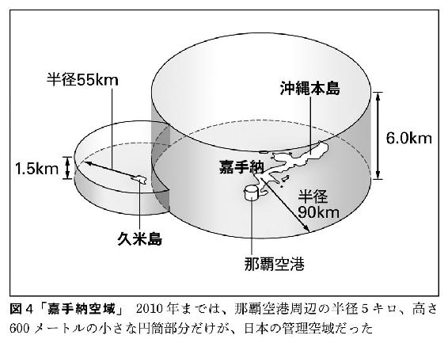
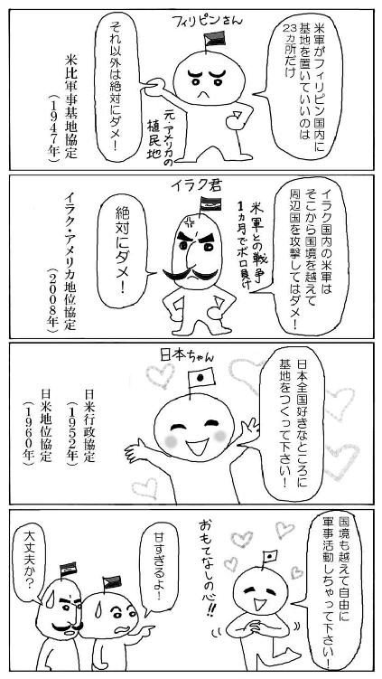
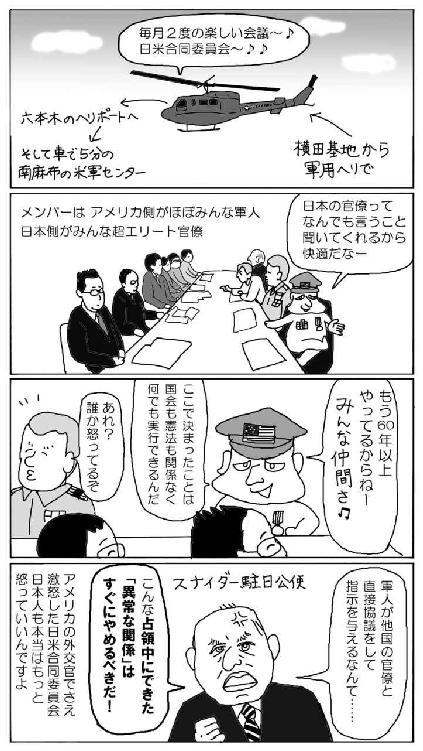
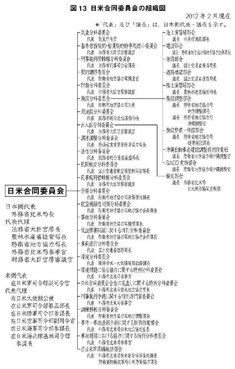

| 知ってはいけない 隠された日本支配の構造 (講談社現代新書) | |
| 矢部宏治 | |
| 講談社 (2017) | |
本作品は、縦書き表示での閲覧を推奨いたします。横書き表示にした際には、表示が一部くずれる恐れがあります。
ご利用になるブラウザまたはビューワにより、表示が異なることがあります。
知ってはいけない
隠された日本支配の構造
矢部宏治
講談社現代新書
凡 例
○引用中の〔 〕内は著者が補った言葉です。
○文中および引用中の太字と傍点は、すべて著者によるものです。
○引用した条文のうち、おもな条約の原文および英文については、左のサイトを参照してください。
「戦後国際政治の基本文書」（政策研究大学院大学 東京大学東洋文化研究所）http://worldjpn.grips.ac.jp/documents/indices/docs/index.html
○図1、3、5は『「日米合同委員会」の研究』（創元社）、図6は「琉球新報」（二〇一三年八月一〇日）、図9は「東京新聞」（二〇一六年七月二二日）などをもとに作成しました。
はじめに
それほどしょっちゅうではないのですが、私がテレビやラジオに出演して話をすると、すぐにネット上で、
「また陰謀論か」
「妄想もいいかげんにしろ」
「どうしてそんな偏った物の見方しかできないんだ」
などと批判されることが、よくあります。
あまりいい気持ちはしませんが、だからといって腹は立ちません。
自分が調べて本に書いている内容について、いちばん「本当か？」と驚いているのは、じつは私自身だからです。
「これが自分の妄想なら、どんなに幸せだろう」
いつもそう思っているのです。
事実か、それとも「特大の妄想」か
けれども本書をお読みになればわかるとおり、残念ながらそれらはすべて、複数の公文書によって裏付けられた、疑いようのない事実ばかりなのです。
ひとつ、簡単な例をあげましょう。
以前、田原総一朗さんのラジオ番組（文化放送「田原総一朗 オフレコ！」）に出演し、米軍基地問題について話したとき、こんなことがありました。ラジオを聞いていたリスナーのひとりから、放送終了後すぐ、大手ネット書店の「読者投稿欄」に次のような書き込みがされたのです。
★☆☆☆☆〔星1つ〕 ＵＦＯ博士か？
なんだか、ＵＦＯを見たとか言って騒いでいる妄想ですね。先ほど、ご本人が出演したラジオ番組を聞きましたが（略）なぜ、米軍に〔日本から〕出て行って欲しいというのかも全く理解できないし、〔米軍〕基地を勝手にどこでも作れるという特大の妄想が正しいのなら、（略）東京のど真ん中に米軍基地がないのが不思議〔なのでは〕？
もし私の本を読まずにラジオだけを聞いていたら、こう思われるのは、まったく当然の話だと思います。私自身、たった七年前にはこのリスナーとほとんど同じようなことを考えていたので、こうして文句をいいたくなる人の気持ちはとてもよくわかるのです。
けれども、私がこれまでに書いた本を一冊でも読んだことのある人なら、東京のまさしく「ど真ん中」である六本木と南麻布に、それぞれ非常に重要な米軍基地（「六本木ヘリポート」と「ニューサンノー米軍センター」）があることをみなさんよくご存じだと思います（→第四章）。
そしてこのあと詳しく見ていくように、日本の首都・東京が、じつは沖縄と並ぶほど米軍支配の激しい、世界でも例のない場所だということも。
さらにもうひとつ、アメリカが米軍基地を日本じゅう「どこにでも作れる」というのも、残念ながら私の脳が生みだした「特大の妄想」などではありません。
なぜなら、外務省がつくった高級官僚向けの極秘マニュアル（「日米地位協定の考え方 増補版」一九八三年一二月）のなかに、
○アメリカは日本国内のどんな場所でも基地にしたいと要求することができる。
○日本は合理的な理由なしにその要求を拒否することはできず、現実に提供が困難な場合以外、アメリカの要求に同意しないケースは想定されていない。
という見解が、明確に書かれているからです。
つまり、日米安全保障条約を結んでいる以上、日本政府の独自の政策判断で、アメリカ側の基地提供要求に「ＮＯ」ということはできない。
そう日本の外務省がはっきりと認めているのです。
北方領土問題が解決できない理由
さらにこの話にはもっとひどい続きがあって、この極秘マニュアルによれば、そうした法的権利をアメリカが持っている以上、たとえば日本とロシア（当時ソ連）との外交交渉には、次のような大原則が存在するというのです。
○だから北方領土の交渉をするときも、返還された島に米軍基地を置かないというような約束をしてはならない。＊註１
こんな条件をロシアが呑むはずないことは、小学生でもわかるでしょう。
そしてこの極秘マニュアルにこうした具体的な記述があるということは、ほぼ間違いなく日米のあいだに、この問題について文書で合意した非公開議事録（事実上の密約）があることを意味しています（第四章・五章参照）。
したがって、現在の日米間の軍事的関係が根本的に変化しない限り、ロシアとの領土問題が解決する可能性は、じつはゼロ。ロシアとの平和条約が結ばれる可能性もまた、ゼロなのです。
たとえ日本の首相が何か大きな決断をし、担当部局が頑張って素晴らしい条約案をつくったとしても、最終的にはこの日米合意を根拠として、その案が外務省主流派の手で握り潰されてしまうことは確実です。
二〇一六年、安倍晋三首相による「北方領土返還交渉」は、大きな注目を集めました。なにしろ、長年の懸案である北方領土問題が、ついに解決に向けて大きく動き出すのではないかと報道されたのですから、人々が期待を抱いたのも当然でしょう。
ところが、日本での首脳会談（同年一二月一五日・一六日）が近づくにつれ、事前交渉は停滞し、結局なんの成果もあげられませんでした。
その理由は、まさに先の大原則にあったのです。
官邸のなかには一時、この北方領土と米軍基地の問題について、アメリカ側と改めて交渉する道を検討した人たちもいたようですが、やはり実現せず、結局一一月上旬、モスクワを訪れた元外務次官の谷内正太郎国家安全保障局長から、
「返還された島に米軍基地を置かないという約束はできない」
という基本方針が、ロシア側に伝えられることになったのです。
その報告を聞いたプーチン大統領は、一一月一九日、ペルー・リマでの日ロ首脳会談の席上で、安倍首相に対し、
「君の側近が『島に米軍基地が置かれる可能性はある』と言ったそうだが、それでは交渉は終わる」
と述べたことがわかっています（「朝日新聞」二〇一六年一二月二六日）。
ほとんどの日本人は知らなかったわけですが、この時点ですでに、一ヵ月後の日本での領土返還交渉がゼロ回答に終わることは、完全に確定していたのです。
もしもこのとき、安倍首相が従来の日米合意に逆らって、
「いや、それは違う。私は今回の日ロ首脳会談で、返還された島には米軍基地を置かないと約束するつもりだ」
などと返答していたら、彼は、二〇一〇年に普天間基地の沖縄県外移設を唱えて失脚した鳩山由紀夫首相（当時）と同じく、すぐに政権の座を追われることになったでしょう。
「戦後日本」に存在する「ウラの掟」
私たちが暮らす「戦後日本」という国には、国民はもちろん、首相でさえもよくわかっていないそうした「ウラの掟」が数多く存在し、社会全体の構造を大きく歪めてしまっています。
そして残念なことに、そういう掟のほとんどは、じつは日米両政府のあいだではなく、米軍と日本のエリート官僚のあいだで直接結ばれた、占領期以来の軍事上の密約を起源としているのです。
私が本書を執筆したのは、そうした「ウラの掟」の全体像を、
「高校生にもわかるように、また外国の人にもわかるように、短く簡単に書いてほしい」
という依頼を出版社から受けたからでした。
また、『知ってはいけない』というタイトルをつけたのは、おそらくほとんどの読者にとって、そうした事実を知らないほうが、あと一〇年ほどは心穏やかに暮らしていけるはずだと思ったからです。
なので大変失礼ですが、もうかなりご高齢で、しかもご自分の人生と日本の現状にほぼ満足しているという方は、この本を読まないほうがいいかもしれません。
けれども若い学生のみなさんや、現役世代の社会人の方々は、そうはいきません。みなさんが生きている間に、日本は必ず大きな社会変動を経験することになるからです。
私がこれからこの本で明らかにするような九つのウラの掟（全九章）と、その歪みがもたらす日本の「法治国家崩壊状態」は、いま沖縄から本土へ、そして行政の末端から政権の中枢へと、猛烈な勢いで広がり始めています。
今後、その被害にあう人の数が次第に増え、国民の間に大きな不満が蓄積された結果、「戦後日本」というこれまで長くつづいた国のかたちを、否応なく変えざるをえない日が必ずやってきます。
そのとき、自分と家族を守るため、また混乱のなか、それでも価値ある人生を生きるため、さらには無用な争いを避け、多くの人と協力して新しくフェアな社会をいちからつくっていくために、ぜひこの本を読んでみてください。
そしてこれまで明らかにされてこなかった「日米間の隠された法的関係」についての、全体像に触れていただければと思います。
（本書の内容をひとりでも多くの方に知っていただくため、漫画家の、ぼうごなつこさんにお願いして、各章のまとめを扉の次に四コマ・マンガとして描いてもらいました。全部読んでも三分しかかかりませんので、まずはマンガから九章分通して読んでいただいてもけっこうです。商業目的以外でのこのマンガの使用・拡散は、次のサイトから自由に行ってください。〔アドレス→ https://goo.gl/EZij2e〕）
＊註1 原文は次の通り。「このような考え方からすれば、例えば北方領土の返還の条件として「返還後の北方領土には施設・区域〔＝米軍基地〕を設けない」との法的義務をあらかじめ一般的に日本側が負うようなことをソ連側と約することは、安保条約・地位協定上問題があるということになる」（「日米地位協定の考え方 増補版」一九八三年一二月／『日米地位協定の考え方・増補版──外務省機密文書』所収 二〇〇四年 高文研）
第一章 日本の空は、すべて米軍に支配されている
おかしい。
不思議だ。
どう考えても普通の国ではない。
みなさんは、ご自分が暮らす「戦後日本」という国について、そう思ったことはないでしょうか。
おそらくどんな人でも、一度はそう思ったことがあるはずです。アメリカ、中国に次ぐ世界第三位の経済大国であり、治安のよさや文化水準の高さなど、誇るべき点もたしかに多い私たちの国、日本。しかしその根っこには、どう隠そうとしても隠しきれない、とんでもない歪みが存在しています。
たとえば私が本を書くたびに触れている「横田空域」の問題です。
次の図1のように、じつは日本の首都圏の上空は米軍に支配されていて、日本の航空機は米軍の許可がないとそこを飛ぶことができません。いちいち許可をとるわけにはいかないので、ＪＡＬやＡＮＡの定期便はこの巨大な山脈のような空域を避けて、非常に不自然なルートを飛ぶことを強いられているのです。
図を見るとわかるように、とくに空域の南側は羽田空港や成田空港に着陸する航空機が密集し、非常に危険な状態になっています。
また緊急時、たとえば前方に落雷や雹の危険がある積乱雲があって、そこを避けて飛びたいときでも、管制官から、
「横田空域には入らず、そのまま飛べ」
と指示されてしまう。
六年前に、はじめてこの問題を本で紹介したときは、信じてくれない人も多かったのですが、その後、新聞やテレビでも取り上げられるようになり、「横田空域」について知る人の数もかなり増えてきました。
それでもくどいようですが、私は今回もまた、この問題から話を始めることにします。
なぜならそれは、数十万人程度の人たちが知っていればそれでいい、という問題ではない。少なくとも数千万単位の日本人が、常識として知っていなければならないことだと思うからです。
エリート官僚もよくわかっていない「横田空域」
もちろんこの「横田空域」のような奇怪なものが存在するのは、世界を見まわしてみても日本だけです。
では、どうして日本だけがそんなことになっているのでしょう。
私が七年前にこの事実を知ったときに驚いたのは、日本のエリート官僚と呼ばれる人たちがこの問題について、ほとんど何も知識を持っていないということでした。
まず、多くの官僚たちが「横田空域」の存在そのものを知らない。ごくまれに知っている人がいても、なぜそんなものが首都圏上空に存在するかについては、もちろんまったくわかっていない。
これほど巨大な存在について、国家の中枢にいる人たちが何も知らないのです。
日本を普通の独立国と呼ぶことは、とてもできないでしょう。
「いったい、いつからこんなものがあるのか」
「いったい、なぜ、こんなものがあるのか」
その答えを本当の意味で知るためには、この本を最後まで読んでいただく必要があります。じつは私自身、右のふたつの疑問について、歴史的背景も含めて完全に理解できたのは、わずか一年前のことなのです。
世田谷区、中野区、杉並区の上空も「横田空域」
まず、たしかな事実からご紹介しましょう。
横田空域は、東京都の西部（福生市ほか）にある米軍・横田基地が管理する空域です。
もう一度、前掲の図1を見てください。
大きいですね。いちばん高いところで七〇〇〇メートル、まさにヒマラヤ山脈のような巨大な米軍専用空域が、日本の空を東西まっぷたつに分断しているのです。
ここで「米軍基地は沖縄だけの問題でしょう？」と思っている首都圏のみなさんに、少し当事者意識をもっていただくため、横田空域の詳しい境界線を載せておきます（図2）。
東京の場合、横田空域の境界は駅でいうと、上板橋駅、江古田駅、沼袋駅、中野駅、代田橋駅、等々力駅のほぼ上空を南北に走っています。高級住宅地といわれる世田谷区、杉並区、練馬区、武蔵野市などは、ほぼ全域がこの横田空域内にあるのです。
この境界線の内側上空でなら、米軍はどんな軍事演習をすることも可能ですし、日本政府からその許可を得る必要もありません。二〇二〇年（米会計年度）から横田基地に配備されることが決まっているオスプレイは、すでにこの空域内で頻繁に低空飛行訓練を行っているのです（富士演習場～厚木基地ルートなど／オスプレイの危険性については第二章で詳述します）。
むやみに驚かすつもりはありませんが、もしこの空域内でオスプレイが墜落して死者が出ても、事故の原因が日本側に公表されることはありませんし、正当な補償がなされることもありません。
そのことは、いまから四〇年前（一九七七年九月二七日）に同じ横田空域内で起きた、横浜市緑区（現・青葉区）での米軍ファントム機・墜落事件の例を見れば、明らかです。
このときは「死者二名、重軽傷者六名、家屋全焼一棟、損壊三棟」という大事故だったにもかかわらず、パラシュートで脱出した米兵二名は、現場へ急行した自衛隊機によって厚木基地に運ばれ、その後、いつのまにかアメリカへ帰国。裁判で事故の調査報告書の公表を求めた被害者たちには、「日付も作成者の名前もない報告書の要旨」が示されただけでした。
いまも中国・四国地方を覆う岩国空域
こうした米軍が支配する空域の例は、日本国内にあとふたつあります。中国・四国地方にある「岩国空域」と、二〇一〇年まで沖縄にあった「嘉手納空域」です。
次の図３が、これまであまり取り上げられることのなかった「岩国空域」です。
「横田空域」と同じくこの「岩国空域」もまた、山口県、愛媛県、広島県、島根県の四県にまたがり、日本海上空から四国上空までを覆う、巨大な米軍管理空域です。
この空域内の松山空港に向かう民間機は、米軍・岩国基地の管制官の指示どおり飛ばなければなりませんし、空域のすぐ西側にある大分空港へ向かう民間機も、高度制限など大きな制約を受けています。
岩国空域に関して印象に残っているのは、二〇一六年にオバマ大統領（当時）が広島を訪問したときのワンシーンです。
アメリカ大統領による初めての「歴史的な」広島訪問に際して、オバマ大統領は中部国際空港から大統領専用機で米軍・岩国基地に移動したあと、この岩国空域を通って、海兵隊の軍用ヘリで原爆ドームへ向かったのです。
車で行けばわずか四〇キロ、たった一時間で行ける距離をわざわざ軍用機で、しかも四機のオスプレイに先導されるかたちで移動した。さらに同行する大統領付きの武官は「フットボール」と呼ばれる核兵器の「発射キット」を携行していました。
アメリカ大統領とは、すなわち核兵器を世界戦略の中心に据えた世界最強の米軍の最高司令官であり、彼は日本の上空を事実上自由に、自国の軍用機を引き連れて移動することができる──皮肉にも、そうした歪んだ現実世界の姿をまざまざと見せつけた、ノーベル平和賞受賞大統領の広島訪問となりました。
巨大な空域に国内法の根拠はない
「横田空域」と「岩国空域」という、米軍が管理するこのふたつの巨大な空域に関して、私たち日本人が、もっとも注目すべきポイントがあります。
それは空域の大きさではありません。
私たちが本当に注目しなければならないのは、
「この横田と岩国にある巨大な米軍の管理空域について、国内法の根拠はなにもない」
という驚くべき事実なのです（「日米地位協定の考え方 増補版」）。
「自国の首都圏上空を含む巨大な空域が、外国軍に支配（管理）されていて、じつはそのことについての国内法の根拠が何もない」
いったいなぜ、そんな状況が放置されているのでしょうか。
その謎を解く手がかりは、もうひとつの重要な米軍管理空域だった沖縄の「嘉手納空域」（二〇一〇年に日本側に「返還」）を見ればわかります。
ちなみに私はよく、
「どうして日本の高級官僚も知らない軍事的な情報を、お前のような一般人が知っているなどと主張できるのだ」
と言われることがあるのですが、その秘密は沖縄にあります。巨大な「日米安保村」である日本の本土から離れ、沖縄へわたると、まるで舞台のセットの裏側にまわりこんだように、物事の本質があっけないほど簡単に見えてくるのです。
嘉手納空域と沖縄の現実
次の図を見て下さい。これが「嘉手納空域」です。

沖縄の友人たちには申し訳ないのですが、この図を見るといつも、「もう笑うしかないな」と思ってしまいます。あまりにもあからさまな現実が、ここにはストレートに示されているからです。
そうです。嘉手納空域とはつまり、沖縄本島の上空はすべて米軍に支配されているという意味なのです。
一九七二年の本土復帰まで、沖縄の空が完全に米軍の支配下にあったことは、みなさんもよくご存じでしょう。ところが沖縄が本土へ復帰したあとも、その状態は変わらず継続した。それが「嘉手納空域」の本当の意味だったということが、この図を見れば一目でおわかりになると思います。そして、詳しくは後述しますが、この沖縄の姿はそのまま日本全体の姿でもあるわけです。
二〇一〇年に返還されたはずなのに
沖縄へ旅行したことのある人は、飛行機が那覇空港へ着陸していくとき、何十キロも手前からぐっと高度を下げ、かなりの時間、低空飛行することをよくご存じでしょう。
青い海と白い波しぶき、そしてエメラルド・グリーンのサンゴ礁......じつに素晴らしい眺めをじっくりと楽しむことができます。しかし、もちろんそれは乗客へのサービスのためにやっているわけではないのです。
なぜ私たち観光客が、そういった低空飛行をしなければならないのか。それは本土から那覇空港に着陸する民間航空機の航路が、嘉手納や普天間の米軍基地に離着陸する米軍機の航路と交差しているため、三〇キロ以上手前から、高度三〇〇メートル以下で飛ぶことを義務づけられているからなのです。
他の独立国ならありえない話なのですが、外国軍の軍用機が安全な角度で離着陸できるよう、自国の旅客機は非常に危険な低空飛行を強いられているのです。
でも、ヘンですよね。先ほどお話ししたとおり、じつは「嘉手納空域」は二〇一〇年三月に日本へ返還されたことになっているのです。それなのになぜ、いまだにそんな状態がつづいているのか。
そのカラクリを知れば、
「なぜ戦後七〇年経っても、首都圏上空に巨大な米軍管理空域（横田空域）があるのか」
という謎の答えも、少しずつ見えてくることになるのです。
米軍が沖縄の空を支配し続けるカラクリ
次の図5を見てください。
これが沖縄の空を米軍が、嘉手納空域の「返還」後も支配し続けているカラクリです。
細かい検証はあとにして、まずはザックリと全体像をつかんでいただきましょう。
上の図が、一九七二年の本土復帰から二〇一〇年に「返還」されるまで沖縄に存在した、嘉手納空域の概念図です。図４で見たように、占領時代と変わらず、島の上空がすべて米軍に支配されており（灰色の部分）、わずかに那覇空港の周辺（白色の部分）だけ、日本自身が管制業務をおこなうことが許されていました。
それが二〇一〇年以降は図５の下の図のように、空域全体が日本に「返還」され（白色の部分）、嘉手納基地と普天間基地の周辺以外の航空管制は、すべて日本側が那覇空港で行うことになりました。
ところがなぜか、米軍による空の支配は以前と変わらず続くことになったのです。
そのカラクリを見れば、本土の空で何が起きたかもよくわかる。とりあえず、下の図の灰色の部分が、本土の「横田空域」や「岩国空域」にあたると思ってください。
新たな「米軍専用空域」が設定されていた
なぜ嘉手納空域が返還されたのに、沖縄の空はいまでも米軍に支配されているのか。
詳しくは吉田敏浩氏の『「日米合同委員会」の研究』（→第三章冒頭）を読んでいただきたいのですが、これは本当にバカみたいな話なのです。
というのも、せっかく二〇一〇年に嘉手納空域が返還されたにもかかわらず、そのウラ側で、返還の意味を完全に失わせてしまうような巨大な「米軍優先空域」が、ひそかに設定されていたのです。
その名を「アライバル・セクター（着陸空域）」といいます。次の図を見てください。
ご覧のとおり、それは米軍・嘉手納基地を中心に、長さ一〇八キロ、幅三六キロ、高さ一二〇〇メートル（高度六〇〇メートルから一八〇〇メートルまで）の大きさをもつ巨大な米軍優先空域です。沖縄本島は長さが約一〇〇キロ、幅が最大約二八キロですから、この図を見てもわかるとおり、そのほとんどがすっぽりとこの空域に覆われてしまっています。
嘉手納基地や普天間基地へ着陸する米軍機の安全を確保するという口実で、これほど巨大な米軍専用空域が、嘉手納空域の返還と同時に新たに設定されていたのです。
思わず「バカにするな！」と叫びたくなるような話ですよね。これでは嘉手納空域の返還に、何の意味もありません。
私たち観光客が、いまだに那覇空港に到着するとき、危険な低空飛行をしなければならないのも、沖縄本島およびその周辺の上空は、高度六〇〇メートル以上のほぼ全域が、この巨大な米軍優先空域になっているからだったのです。
ですから民間機はその下を、少し間隔をあけて高度三〇〇メートル以下で飛ばなければならないことになっているのです。
それだけではありません。
前掲の図5にある、点線が指し示すふたつの楕円の中を見てください。
日本側がすべての管制業務を行うはずだった那覇空港の管制所には、なんといまでも「米軍管制官（現役軍人）」ならぬ「米側管制官（退役軍人）」が常駐して、米軍機優先の大原則のもと、米軍機についての管制業務を以前と同じように行っているのです！
つまり、建前上は「巨大な空域を日本に返還した」というかたちをとりながら、米軍は以前と何も変わらず、沖縄の空を支配し続けているということです。
「その周辺」という言葉の意味を途方もなく拡大する
この沖縄の空をめぐるカラクリがわかれば、首都圏上空になぜ巨大な「横田空域」が存在するかの答えも見えてきます。
歴史を振り返ると一九六〇年、現在の安倍首相の祖父である岸信介首相（当時）が、「占領の名残」をなくして「対等な日米関係」をつくるのだというスローガンのもと、日米安保条約を改定します。
じつはその前年まで、沖縄と同じく、日本の上空はすべて米軍によって支配されていたのです。
おそらくみなさんも、そのことはご存じなかったのではないでしょうか。安保改定の前年といえば一九五九年ですので、占領が終わった一九五二年から、すでに七年が経っています。それなのにまだ日本はそんな状態にあったわけです。
もちろん、そのままでは「対等な日米関係」とは、とても言えません。
そこで二〇一〇年の沖縄での「嘉手納空域の返還」と同じように、一九五九年の本土でも、日本の空（＝航空管制権）はすべて日本へ返還するという、オモテの取り決めが結ばれることになりました。
ところがそのウラ側で、やはり沖縄と同じく、密約によって巨大な米軍優先空域が設定されてしまったのです。
その「手口」は次のようなものでした。
まず、本土上空の航空管制権はすべて日本に返還するが、ただし「米軍基地とその周辺は例外とする」という密約を結ぶ。さらに密室の協議によって、「その周辺」という言葉の意味を途方もなく拡大していく。その結果うまれたのが、これまで述べてきた巨大な横田空域であり、岩国空域なのです。
すべては第四章でご説明する「日米合同委員会」という密室で合意されたことですから、横田空域や岩国空域については、いまだに何の国内法の根拠もない。ただ占領時代から続く米軍支配の状態が、そのまま継続しているというわけです。
本土でもやはり、上空すべてが支配されている
それでは、横田空域や岩国空域以外の本土の空はどうなのでしょう。
すでに見た通り、沖縄では「嘉手納空域」が返還されたあとも、島の上空のほぼすべてに米軍の優先空域が新たに設定され、米軍機は自由に軍事演習を行っています。
一方、本土では、横田空域や岩国空域だけが米軍に支配されているのでしょうか。
いえ、そうではありません。私たちの眼には見えないだけで、本土でもやはり、上空すべてが米軍に支配されているのです。
次の図を見てください。これは日本の上空にある米軍の「低空飛行訓練ルート」です。
二〇一一年には、この訓練ルート上で年間一五〇〇回以上の軍事演習が行われており、さらに翌二〇一二年からはこの回数に、普天間基地に配備されたオスプレイの訓練回数が加わっています。
しかも実際には、米軍機がこうした各地の訓練ルートにたどりつくまでには、日本中のいろいろな場所の上を飛んでいくわけですから、事実上、米軍機は日本の上空全体を自由に飛ぶことができるのです。そして訓練ルートについたら、そこで低空飛行訓練をする。
いったいなぜ、そんなことが可能なのか。
その理由は、米軍は沖縄の上空に設定したような優先空域を、日本全土の上空にいつでもどこでも設定できる権利を持っているからなのです。
「まさか」と思われるかもしれませんが、これにも確かな根拠があるのです。
次の図を見てください。これは国土交通省航空局の資料（〝Overview of ATM Center in Japan〟二〇一一年）に収録されているイラストなのですが、そのなかで米軍が自分たちの軍事演習にあわせて、「移動型アルトラブ（Moving Altitude Reservation）」と呼ばれる、一定の幅と高度をもった立体的な「臨時専用空域」を、日本全土の上空に次々と設定している事実が示されています。
詳しくは『「日米合同委員会」の研究』に譲りますが、そうした米軍の権利は、
「日本政府は、軍事演習をおこなう米軍機については、優先的に管制権をあたえる」
という、日本の国民は誰も知らない日米合同委員会での密約にもとづくものなのです（一九七五年五月八日）。
どんなに危険な飛行も「合法」
さて「横田空域」からスタートした、ここまでの話は、いかがだったでしょうか。
いままでこうした事実をまったくご存じなかった方は、「いったい日本の空はどうなっているんだ？」と少し混乱されたかもしれません。
けれども、ほんの少し視点を変えてみれば、こうしたさまざまな状況を、ものすごく簡単に説明することもできるのです。
沖縄だけでなく、「日本の空」がすべて戦後七〇年以上経ったいまでも、完全に米軍に支配されているということは、じつは日本の法律の条文に、はっきり書かれている「事実」だからです。
左は一九五二年、占領終結と同時に、新たに制定された日本の国内法（航空法特例法）の条文です。そこにはまさに、身もフタもない真実が書かれているのです。
航空法特例法 第3項
「前項の航空機〔＝米軍機と国連軍機〕（略）については、航空法第６章の規定は（略）適用しない」
ここで重要なのは、右の条文で「適用しない」とされている「航空法第6章」とは、航空機の安全な運行について定めた法律だということです。つまり、
「離着陸する場所」
「飛行禁止区域」
「最低高度」
「制限速度」
「飛行計画の通報と承認」
など、航空機が安全に運行するための43ヵ条（第57～99条）もの条文が、すべて米軍機には適用されないことになっているのです。
要するに、もともと米軍機は日本の上空において、どれだけ危険な飛行をしてもいい、それは合法だということなのです。
この条文のもとで米軍は、一九五二年に占領が終わったあとも変わらず日本の上空で、なんの制約も受けずに飛ぶ権利を持ち続けました。そして、それから六〇年以上たった現在に至るまで、この条文はひと文字も変更されていません。
そのことだけを見ても一九五二年の「独立」や、一九六〇年の「安保改定」が、いかに見せかけだけのものだったかがわかるのです。
第二章 日本の国土は、すべて米軍の治外法権下にある
しかし、不思議ですよね。
独立国の首都圏上空が他国の軍隊に支配されているのです。この異常な状態が、なぜこれまで大きな問題にならなかったのか。
もちろん、その問題を指摘する人たちもいました。共産党は国会で何度も質問していますし、石原慎太郎都知事の初期の時代には、「横田基地の軍民共同使用」という表現でしたが、空域の返還についても議論されていました。
またここ数年は、私たちがこれまでに執筆してきた本（→第三章冒頭）の紹介というかたちで、全国放送のテレビ番組などで何度も取り上げられるようになりました。
ところが事態はいっこうに何も変わらない。国会がこの問題で紛糾することもないし、大規模なデモが起こるわけでもない。世界的にも例のないこの異様な状態が、ただ淡々と続いているだけなのです。
おかしい。
不思議だ。
どう考えても「普通の国」ではない。
そう思わざるをえない典型的な例のひとつです。
しかし、さらに調べていくと、もっと信じがたい事実が浮かび上がってくるのです。
それは、
「米軍に支配されているのは、じつは空の上だけではない」
という事実です。
沖縄の小さな集落でいま起きていること
二〇一七年二月から巨大な米軍基地の新設工事が再開され、巨大なコンクリート・ブロックがどんどん海に投げ込まれてしまった辺野古（沖縄県名護市）という土地については、みなさんよくご存じだと思います。
たった七年前まで、本土ではほとんど知られていなかったこの沖縄本島北部の美しい岬は、鳩山首相が普天間基地の移設問題で失脚したことをきっかけに、突如、日本中で広くその名が知られるようになりました。
では、高江はどうでしょうか。
そこは辺野古よりもさらに北方の森林地帯にある、人口わずか一四〇人ほどの集落です。この小さな小さな集落で、いま何が起きているかを見れば、米軍が空の上だけでなく、地上でも日本の国内法を無視して行動する権利を持っていることがわかるのです。
この高江（沖縄県国頭郡東村）で問題になっているのは、沖縄の米軍基地で最大の面積を持つ「北部訓練場」の一部返還に関して、です。
「一部でも返還されたのなら、よかったじゃないか」
と思われるかもしれません。
事実、二〇一六年一二月二二日には、北部訓練場の半分以上にあたる約四〇〇〇ヘクタールが日本へ返還され、日本全体の米軍基地（専用施設）に占める沖縄県の割合も、七四パーセントから七一パーセントに低下しました。
しかし、米軍は何かを返還するとき、ただ自分たちの権利を損なうようなことは絶対にやりません。むしろ「返還」という見栄えのよい行動のウラ側で、自分たちの「権限の強化」や「訓練機能の強化」をしたたかに実現しているケースがほとんどなのです。
たとえば、危険な普天間基地を閉鎖する代わりに、日本側の予算で辺野古に巨大な最新基地を建設するという計画などがその典型と言えるでしょう。
高江で問題の中心になったのは、やはりオスプレイでした。この非常に事故の多い軍用機が使うヘリパッド（ヘリ発着場）の建設をめぐって、住民たちとのあいだで激しい対立が起こっているのです。
「基地返還」のトリック
本土と違って沖縄では、研究者もメディアも住民も米軍基地をよくウォッチしていますので、そこでいま何が起きているのか、かなり詳しく知ることができます。
北部訓練場の「一部返還」についての日米両政府の説明は、概略次のようなものでした。
○この約四〇〇〇ヘクタールにおよぶ基地の返還は沖縄の本土復帰後、最大のものであり、沖縄の住民の基地負担を大幅に軽減するものである。
○しかし、返還予定区域内にあるヘリパッドだけは、米軍の訓練に支障をきたさないよう、返還しない地域に移設することになる。＊註２
そう述べて次の図のように、返還しない地域に代わりのヘリパッドを新しく六つつくる計画を発表したわけです。
ところがこの説明には大きなトリックがありました。
まずひとつは、新しくつくられるヘリパッドが、従来のものの数倍の大きさの「オスプレイ用ヘリパッド」であり、その完成後は、きわめて事故の多い危険なオスプレイの飛行訓練が、頻繁に行われる計画になっていたことです。
もうひとつは、その新しい六つのヘリパッドが図のように、人口一四〇人ほどの高江の集落をグルリと取り囲むようにして、つくられる計画になっていたことでした。
この北部訓練場のケースでも、米軍がいつものパターンどおり、自分たちにまったく必要のない土地を日本に返還し、代わりに「訓練機能の強化」をはかったことは、彼ら自身が公式資料のなかではっきりと述べています。
「今回、〔北部訓練場の〕全体の五一パーセントにあたる使用できない土地を日本政府に返還するが、その代わりに、新しい訓練施設を使った非常に効率的な訓練が可能となる」（米海兵隊「戦略ビジョン2025」）
この資料に書かれた「新しい訓練施設」とは、ヘリパッドだけのことではありません。米軍はさらに前掲の図9にあるように、新設されるヘリパッドから数キロ離れた海岸沿いの河口に演習区域をもうけ、歩行訓練用の道路もつくって、オスプレイを使った敵地への上陸訓練を行う予定なのです。
＊註2 一九九六年一二月の「ＳＡＣＯ最終報告（ＳＡＣＯ合意）」にもとづく説明
信じがたい現実
この高江のヘリパッド建設計画がいかにおかしなものであるかは、反対運動をしている人たちの次の言葉によくあらわれています。
「本土だったら、マンションひとつ建てるのに何度も説明会を開くでしょう。保育園でさえ、周囲の住民が反対したら、できなかったりするじゃないですか。でも高江の人たちは、六つのヘリパッドがオスプレイ用の発着場になるなんて、一度も説明を受けてないんですよ。それなのに乗組員の顔が見えるほどの低空を、もうオスプレイが現実に飛んでいる。激しい騒音や振動で、体調不良の人も出ている。こんなメチャクチャな話がありますか。もし自分の家の近くにそんなものができたらって、少し想像してみてください」（ネット・ジャーナリストの大袈裟太郎氏）
日本の航空法は、航空機は人口密集地ではもっとも高い建物から三〇〇メートル以上の上空を、人口密集地以外では地上から一五〇メートル以上の上空を、それぞれ飛ばなければならないと定めています。
しかし第一章で述べた通り、米軍機に航空法の最低高度の規定は適用されません。なんと米軍の訓練マニュアルでは、オスプレイ（ＭＶ22）は最低高度六〇メートルでの訓練が想定されており、すでに高江では、それ以下の超低空での訓練飛行が日常になっているのです。
さらに最大の問題は、なぜこうしたオスプレイのための新しいヘリパッドが、わざわざ高江の集落をグルリと囲むようにつくられているかというと、それは高江の住民や家屋を標的に見立てた軍事訓練を行うためなのです。
この点だけは、
「さすがにそれは信じられないな」
という方も多いのではないかと思いますが、現地に住む人たちにとってはすでに疑いようのない現実です。
この問題を長年取材してきた、元琉球朝日放送のキャスターで映画監督の三上智恵氏は、こう証言しています。
「オスプレイがやってくる以前から、高江は米軍ヘリの低空飛行訓練の標的になっています。ヘリの窓を開けて、住民たちが座っているところを見ながら、電信柱より少し高いくらいのところをババババッと旋回する。以前は低空飛行するヘリのなかから、兵士の顔がはっきり見えるくらいの距離で銃を向けられた人もいます」
高江の「ベトナム村」
なにより高江には、ベトナム戦争時代のつらい歴史があるのです。
次の写真を見てください。上部に見えるのが、まだ沖縄が占領されていた一九六四年、米軍がベトナムでのゲリラ戦の訓練をするために高江につくった、「ベトナム村」とよばれる軍事演習施設です。
小高い丘の上に、まるで「貴賓席」のような場所をつくって、米軍の幹部たちが「ベトナム村」で行われている軍事演習を見下ろしています。そこでベトナム人の格好をさせられてベトコン役を演じていたのが、ほかでもない高江の住民だったのです（「標的の村」三上智恵監督 二〇一二年）。
「この訓練〔模擬ゲリラ戦〕には乳幼児や五、六歳の幼児をつれた婦人をふくむ約二〇人（略）が徴用され、対ゲリラ戦における南ベトナムの現地部落民の役目を演じさせられた。作戦は海兵隊一個中隊が森林や草むらにしかけられたワナや落とし穴をぬって「ベトコン」のひそむ部落に攻め入り、〔敵兵を〕掃討するという想定のもとにおこなわれた」（「人民」一九六四年九月九日）
米軍の軍事演習は、日本全土で行われている
「そんな占領時代の沖縄の話が、なぜいまのオレたちと関係があるんだ」
とおっしゃる方も多いでしょう。
しかし米軍の軍事演習について、日々リアルな情報を耳にする私たちからすると、それはかなり楽観的な意見だと思わずにはいられません。
次の図は、沖縄の普天間基地に配備されたオスプレイが、日本全国にある六つの低空飛行訓練ルート（ルート名が黒地に白抜きのもの）へ向かう航路です。
日本の国土を使った軍事演習が沖縄だけの話なら、どうして日本中にこのような訓練ルートがつくられ、そこでオスプレイが低空飛行訓練をしているのでしょう。
この図は、オスプレイの配備に備え、米軍（海兵隊）自身が公式に作成した資料です（二〇一二年発表）。
しかしこの低空飛行訓練ルートそのものは、けっしてオスプレイのために新しくつくられたものではありません。私たち日本人が知らなかっただけで、米軍はずっと以前から、こうした軍事演習を日本中で行っているのです。
では、いったい何のために米軍は、そうした低空飛行訓練をこれまでずっとやってきたのか。それはすでに述べた通り、地上に標的を設定して、その標的を上空から攻撃する訓練を行うためなのです。
「いくつかの米軍機の事故報告書から、低空飛行訓練は対地攻撃〔敵の地上部隊や地上施設への攻撃〕と一体になった訓練であることが分かっている。敵のレーダー探知を避けるために地形に沿って〔低空〕飛行し、目的地の手前でポップアップ〔急上昇〕してから急降下して爆撃する。これが戦闘攻撃機の低空飛行訓練の実態だ」（「リムピース」ＨＰ）
ですから高江の住民のみなさんが、いままさに日々、実感しているように、米軍機の低空飛行訓練とは、つねに具体的な「標的」の存在を前提とした訓練なのです。
オスプレイの高い事故率
今後、本土でも必ず大問題となるはずのこのオスプレイは、爆撃こそ行いませんが、単なる輸送機ではありません。遠く離れた紛争地点に、兵士とさまざまな武器をピンポイントで送りこみ、敵の拠点を制圧するための戦術輸送機なのです。
けれどもそのオスプレイが大きな構造上の欠点を持つ完全な欠陥機であることは、米軍自身の事故報告書によってすでに明らかになっています。
アメリカの海兵隊がアフガニスタンで使用した全一二種類の航空機のなかで、オスプレイは全体の平均の四一倍という、信じられないほど高い事故率を記録していたことがわかっているからです（「海兵隊航空機アフガニスタン事故報告書（二〇一〇～一二米会計年度）」米海軍安全センター）。
その危険なオスプレイが、二〇一二年以降、沖縄の米軍・普天間基地に計二四機配備されたことは、本土でも大きく報道されました。けれどもみなさんの知らないうちに、現在それらのオスプレイは、沖縄だけでなく関東の米軍・横田基地や厚木基地、または富士演習場などに飛んできて、低空飛行訓練を繰り返しているのです。
さらに二〇二〇年からは、よりいっそう危険とされる空軍仕様のオスプレイ（ＣＶ22）も、東京西部の横田基地に一〇機配備されることになっているのです。
オスプレイというのは、ふたつの巨大なプロペラ（ローター）をもつ特殊輸送機です。そのプロペラを、離着陸のときにはヘリコプターのように上に向け（次の写真参照）、水平に飛ぶときは普通の飛行機のように前に向ける。
そのことで飛行機のようなスピードと航続距離、そしてヘリコプターのような滑走路のない場所への垂直離着陸を同時に実現するという、夢の最新型軍用機だったのです。
しかし、アイデアとしてはたしかにすぐれていたのでしょうが、現実にはすでに完全な欠陥機であることが判明しています。航空機にとってもっとも重要で、なにより安定性が必要なプロペラを、上に向けたり前に向けたりして頻繁に角度を変えるという構造そのものが、軍用機にはまったく不向きな脆弱性をもっているからです。
ですからオスプレイが一定時間飛行すれば、必ず事故が起こります。先ほどご紹介した米軍の事故報告書によれば、アフガニスタンで実戦に使われた海兵隊の航空機は、全体の平均で飛行時間三七四七時間（約五ヵ月相当）に一度事故を起こしたのに対して、オスプレイ（ＭＶ22）はなんと、九〇時間（約四日相当）に一度事故を起こしていたことが報告されています。
すでに日本全土を飛びまわっているオスプレイ
そのように、これまで世界各地で繰り返し事故を起こしてきたオスプレイですが、日本での最初の墜落事故は、やはり沖縄で起こりました。
二〇一六年一二月、辺野古の対岸にある安部という岬の浅瀬に、訓練中のオスプレイが墜落し、大破したのです。
このオスプレイは、一〇月には横田基地（東京都）、一一月には東富士演習場（静岡県）、一二月上旬には岩国基地（山口県）に飛んでいって、訓練をしていたことがわかっています。そして一二月一三日夜、沖縄で空中給油訓練中に墜落したのです。
墜落の原因は、例の大きなプロペラ（ローター）が給油中のホースに接触したことだといわれていますが、その訓練がどの地域の上空で行われていたかはまったくわかっていませんし、そもそも給油訓練ではなく、暗視装置を使った夜間の超低空飛行訓練だったという話も出ています。
さらには乗組員の一人が死亡したらしいというアメリカからの未確認情報もあります。要するに、事故の原因や実態について、たしかな情報はなにもないということです。
わかっているのは、すでに現時点でオスプレイは、日本中の米軍基地を飛びまわっていて、日本全土の上空で、危険な空中給油訓練や、夜間の超低空飛行訓練などを行っているということです。オスプレイの長所は航続距離が長いところですので、空中給油をすれば日本の領土の端から端までをノンストップで飛んで、さまざまな軍事演習を行うことができる。そうした訓練が、すでに五年前から始まっているのです。
首都圏で墜落事故が起きたらどうなるか
すでに述べた通り、二〇二〇年からはそのオスプレイが、ついに東京の横田基地にも配備され、本格的な低空飛行訓練や空中での給油訓練などが始まります。そうすれば、首都圏でいつ墜落事故が起きても不思議ではありません。すると、どうなるのか。
二〇〇四年、米軍ヘリが沖縄国際大学に墜落した事故でも、二〇一六年一二月に起きた辺野古の対岸でのオスプレイの墜落事故でも、その後の経緯は同じでした。
つまり、どちらのケースでも、墜落現場の周辺は米軍が黄色いロープ（英字表記）を張って封鎖し、日本人の立ち入りを禁じました。一方、その外側では日本の警察が、やはり黄色いロープ（漢字表記）を張って、関係者以外の立ち入りを規制しました。
その米軍の規制ロープの内側には、知事も市長も外務官僚も、誰も入ることができませんでした。かろうじて日本の警察だけが、米軍の許可を得たときだけ現場に近づけるという、まさに植民地そのものといった情景が広がっていたのです。
この規制ロープが取り払われたのは、米軍がすっかり事故の処理を終え、立ち去ったあとのことでした。そしてこのとき米軍が持ち去った事故の証拠物件が、日本側に手渡されることは、ついになかったのです。
密約の持つ「破壊力」
みなさんは、治外法権という言葉をよくご存じだと思います。
それは他国で生活しながら、その国の法律では裁かれない権利という意味です。大使館や外交官には、この特権が与えられていますが、それは駐在国の警察や検察から圧力を受けることなく自国の代表として発言・行動するための権利で、万国共通です。
しかし戦前まではよくあったように、戦争に負けたあと、国土の一部が「租借」というかたちで、まるまる他国の治外法権下に置かれてしまうと、大変なことになります。たとえ一部でも国内に法的コントロールが及ばない土地ができてしまったら、そこから次第に主権の侵害が始まり、やがて国家の独立そのものが危うくなりかねない。
だからみんな、必死で抵抗するわけです。
ところが日本だけは、米軍ヘリやオスプレイの墜落事故のケースを見てもわかるように、敗戦後七〇年以上たってもなお、事実上、国土全体が米軍に対して治外法権下にあるのです。
「何度もバカなことをいうな」
と言われるかもしれません。
しかしこれもまた、確かな根拠のある事実です。このあとご紹介する日米合同委員会という秘密会議で、左のような密約が日米間で合意されているからです。
「日本国の当局は、所在地のいかんを問わず米軍の財産について、捜索、差し押さえ、または検証をおこなう権利を行使しない」
（日米合同委員会の公式議事録 部分 一九五三年九月二九日）
国土全体が、治外法権下にある
これも第一章でご説明した航空法特例法と同じく、たったひとつだけで日本の国内法を破壊してしまう重大な「ウラの掟」です。
私たちは普段こうした法的な文書を読み慣れていませんから、ついさらっと読み飛ばしてしまいますが、これは本当にとんでもない取り決めなのです。
まず、米軍の財産（航空機や車両など）については、たとえ事故があっても日本の警察や検察は何も手出しができないと書かれています。
おかしいですよね。でも、それだけではありません。傍点部分の「所在地のいかんを問わず〔＝どんな場所でも〕」という箇所がとにかくおかしい。
これが「米軍基地のなかの（米軍の財産について）」であれば、まだわかります。日本にある各国大使館の敷地内がそうであるように、米軍基地のなかは治外法権であるというなら、大使館とはケタちがいに広さが違いますが、まだ話がわかるのです。
しかしそうではなくて、米軍の財産については「どんな場所でも」日本の警察が捜査したり、証拠を差し押さえたり、事故現場を検証したりすることができない。
つまり日本の国土全体が、米軍に対して治外法権下にあるというのです！
ですから、日本国内で米軍の飛行機が墜落して市民が命を落としても、交通事故でけが人が出ても、日本の警察は米軍が勝手に張った規制ロープのなかに入れず、証拠物件を捜索したり事故の原因を調べる法的な権利がない。
もちろんこんな奇妙な国は、世界中どこにも存在しないのです。
第三章 日本に国境はない

ここまで見てきた、「戦後日本」という国のあまりにもおかしな現実。約七年間、多くの研究者のみなさんといっしょに、その謎を解くための研究をつづけてきました。
いったいなぜ、日本はここまでおかしなことになっているのか。そしてその背後には、どのような歴史の闇が隠されているのか......。
この間に、私が書いたり企画編集した本を刊行順に並べると、次のようになります。
『本土の人間は知らないが、沖縄の人はみんな知っていること』（矢部宏治 書籍情報社）
『戦後史の正体』（孫崎享 創元社）
『本当は憲法より大切な「日米地位協定入門」』（前泊博盛編著 矢部宏治共著 創元社）
『検証・法治国家崩壊』（吉田敏浩・新原昭治・末浪靖司共著 創元社）
『日本はなぜ、「基地」と「原発」を止められないのか』（矢部宏治 集英社インターナショナル）
『戦争をしない国 明仁天皇メッセージ』（矢部宏治 小学館）
『日本はなぜ、「戦争ができる国」になったのか』（矢部宏治 集英社インターナショナル）
『「日米合同委員会」の研究』（吉田敏浩 創元社）
これら八冊のすべてのエッセンスを凝縮させるかたちで、いまこの本を書いているのですが、もし誰かに、
「それらの研究の成果をひとことでまとめると、どうなりますか」
と聞かれたら、私は次のように答えます。
「旧安保条約の第１条を読んでください。そこにすべてが書かれています」
「条文」を読むおもしろさ
条文というのは読みなれていないと、かなりとっつきにくく、文中にひとつ入っているだけでも、
「うわっ、ちょっと読む気がしないな」
と思ってしまう方が多いかもしれません。
しかし、少し読み慣れてくると、それはとてもおもしろいものです。
その魅力はなんといっても、たったひとつの条文だけで、ものすごく大きな現象をスパッと明快に説明できてしまうところにあります。
あるいはそれは、数式のもつおもしろさに似ているのかもしれません。
本書の第一章と第二章では、それぞれの章の最後で、私たちが知らないうちに結ばれていた、左のようなとんでもない法律や密約についてご説明しました。
○米軍による日本の空の支配を正当化する「航空法の適用除外条項」（第一章）
○米軍の日本全土における治外法権を正当化する「日米合同委員会での密約」（第二章）
みなさんもおそらくその内容に憤慨しながらも、これまで不可解に思われていたさまざまな現実が、すっきりと整理できることに驚かれたのではないかと思います。
そうした日米間に存在する無数の「数式」（＝隠された法的取り決め）のおおもとこそ、この「旧安保条約・第1条」なのです。
「旧安保条約・第1条」
では、問題のその条文を見てみましょう。旧安保条約の第1条には次のように書かれています。
「平和条約および安保条約の効力が発生すると同時に、米軍を日本国内およびその周辺に配備する権利を、日本は認め、アメリカは受け入れる」（前半部 英文からの著者訳）
日本が独立を回復するにあたって結ばれた平和条約（＝サンフランシスコ講和条約）と旧安保条約は、どちらも一九五一年九月に調印され、翌一九五二年四月に発効しました。
そのときから日本はアメリカに対して、非常に大きな軍事上の特権を与えることになったわけですが、ここで注目していただきたいのは、日本が旧安保条約のなかの、もっとも重要な「第1条」で認めたその特権とは、アメリカが米軍を、
「日本国内およびその周辺に」
「配備する権利」
だったということです。
米軍を「配備する権利」
それはいったい、どういう意味なのか。まず「配備する権利」の方から見てみましょう。
この条約で日本が認めたのは、アメリカが日本に「基地を置く権利」ではなく、「米軍を配備する権利」だと書かれています。
しかし、これは普通の条約では、絶対ありえないはずの言葉なのです。
私たち日本人はそのあたりの感覚がほとんど麻痺してしまっているのですが、世界の常識からいえば、そもそも自国のなかに外国軍が駐留しているということ自体が完全に異常な状態であって、本来ならそれだけでもう独立国とはいえません。
万一やむをえず駐留させるときでも、ギリギリまで外国軍の権利を条文でしばっておかなければ、国家としての主権が侵害されかねない。そうした非常に危険な状態だということを、そもそもよく認識しておく必要があります。
そのことは、第二次大戦以前はアメリカの本当の植民地だったフィリピンが、戦後、アメリカとどのような取り決めにもとづいて基地を提供していたかを見れば、すぐにわかるのです。
一九四七年に結ばれた「米比軍事基地協定」（一九九一年に失効）には、米軍がフィリピン国内に基地を置いていいのは次の二三ヵ所であると、その場所がすべて具体的に明記されているからです。
ところが日本の場合は、特定の場所を基地として提供する取り決めではなく、どこにでも米軍を「配備」できることになっている。これを「全土基地方式」といいます。
いま初めてこの言葉を聞いた方は信じられないかもしれませんが、これはすでに沖縄を中心とした長い研究の積み重ねによって証明されている、紛れもない事実なのです。
三重構造の「安保法体系」
「はじめに」にも書いたとおり、米軍は日本の国土をどこでも基地にしたいと要求することができます。そして日本はその要求を事実上、断れない。
そうした現状をもたらす根拠となったのが、旧安保条約時代のこの第1条なのです。
さらにはこの「軍を配備できる」という言葉には、「どこにでも基地を置くことができる」という以上の意味があって、その基地を拠点に自由に軍事行動（戦争や軍事演習）を行うことができるという意味も含んでいるのです。
この旧安保条約・第1条を根拠として、米軍が日本の国土のなかで、日本の憲法も国内法も無視して、
「自由にどこにでも基地を置き」
「自由に軍事行動をおこなう」
ことを可能にする法的なしくみが、つくられることになりました。
それが次表の、
「旧安保条約」⇩「行政協定」⇩「日米合同委員会」
という三重構造をもつ、「安保法体系」だったのです（「行政協定」とは「旧安保条約」の下で米軍が、日本国内で持つ特権について定めた協定。一九五二年四月の占領終結とともに発効し、一九六〇年の安保改定で「地位協定」に変更された）。
国境がない国、日本
さらに「旧安保条約・第1条」に書かれたもうひとつの重要なポイントは、そうしてアメリカが米軍を「配備する」ことを許された場所が、
「日本国内およびその周辺（in and about Japan）」
だったということです。
私も最初にこの条文を読んだときは、
「その周辺っていっても、国外のことまで日本が決める権利はないはずだけどな」
と不思議に思っていたのですが、第一章で見た「横田空域」について調べていくうちに、その本当の意味がわかりました。
たとえば次の図のように、日本の首都圏には、横田、座間、厚木、横須賀と、沖縄なみの巨大な米軍基地が、首都東京を取り囲むように四つも存在しています。
そしてそれらの基地の上空は、太平洋の洋上から「横田空域」によってすべて覆われています。
ですから米軍とその関係者は、日本政府からいっさいチェックを受けることなく、いつでも首都圏の米軍基地に降り立つことができるのです。
しかも到着後、米軍基地からフェンスの外に出て日本に「入国」するときも、日本側のチェックは一切ありません。なので、たとえば横田基地に到着した米軍関係者が軍用ヘリを使えば、東京のど真ん中にある六本木の軍事ヘリポート（→第四章）まで、わずか二十数分で飛んでいくことができるのです。
つまり米軍やその関係者にとって、日本は「国境が存在しない国」ということなのです。そして「旧安保条約・第1条」に書かれた「米軍を日本国内およびその周辺に配備する権利」とは、米軍が「日本の国境を越えて自由に軍事行動できる権利」という意味だったのです！
憲法9条が見逃しているもの
それがどれだけ異常な特権であるかに気づいたのは、二〇〇三年に勃発したイラク戦争の後、アメリカとイラクがむすんだ「イラク・アメリカ地位協定」（二〇〇八年）の条文を読んでいたときのことでした。
二〇〇三年三月にアメリカと開戦したものの、ほとんど戦闘らしい戦闘もないまま、わずか一ヵ月で全土を占領されてしまったイラク。しかしそのイラクが敗戦後のアメリカとの交渉では素晴らしい粘り腰を発揮し、アメリカが提案してきた地位協定の草案に、なんと一一〇ヵ所もの訂正を求めていたのです。
なかでも、もっとも大きな訂正のひとつが、
「イラクに駐留する米軍が、イラクの国境を越えて周辺国を攻撃することを禁じる」
という条文を、新たに加えたことでした。
この条文を読んだとき、まさに目からウロコが落ちるような思いがしたことをいまでもはっきりと覚えています。
「驚いたなあ。イラクはこんな条文をアメリカに認めさせたのか。でも、じゃあどうして憲法9条をもつ日本には、それができなかったんだろう」と。
ほかの国の軍事協定を読んでいるとよくわかるのですが、主権国家にとって「他国の軍隊が自国の国境を越えて移動する権利」というのは、なにより厳重にコントロールしなければならないものなのです。
戦争で一方的にボロ負けしたあと、崩壊した国家のなかでそうした「主権国家としての正論」をアメリカに堂々とぶつけ、しかも了承させたイラクの外交官たちに大きな拍手を送りたいと思います。
しかし同時に私たち日本人は、深く反省もしなければなりません。
こうしたイラクの地位協定を読むと、私自身も以前はあまり抵抗がなかった、
「憲法9条にノーベル平和賞を」
などという耳触りのいい主張が、いかに現実からかけ離れたものであるかが一瞬で理解できるからです。なにしろ、その憲法9条のもとで私たち日本人は、世界一戦争をよくする米軍に対して、
「国内に自由に基地を置く権利」と、
「そこから飛びたって、自由に国境を越えて他国を攻撃する権利」
を両方与えてしまっているのですから。
安保条約に「在日米軍」という概念はない
そしてもうひとつ。
旧安保条約・第1条が米軍に対して、「自由に基地を置く権利」だけでなく、「自由に国境を越えて他国を攻撃する権利」も与えていることがわかると、いわゆる「在日米軍」という存在についても、日本国内から見ているだけではわからないそのダイナミックな本質が浮かび上がってくるのです。
そもそも意外なことですが、「在日米軍」などという言葉や概念は、安保条約や地位協定のなかには、いっさい存在しないのです。そうした条約や協定の対象となっているのは、あくまで「日本国内にいるあいだの米軍」のことで、それは外務省自身がはっきり認めているのです（「日米地位協定の考え方 増補版」）。
簡単に説明すると、日本がこれまで安保条約や地位協定によって巨大な特権を与え続けてきたのは、
「日本の基地に駐留している米軍」
だけではなく、
「一時的に日本の基地に立ち寄った米軍」や、
「たんに日本の領空や領海を通過中の米軍」
など、すべての米軍に対してだった、ということです。
つまり、日本の防衛に一ミリも関係のない、百パーセント、アメリカの必要性だけで行動している部隊に対しても、それが日本の領土や領空内に「存在」している限り、安保条約や地位協定によって大きな特権があたえられるということです。
その事実だけから考えてみても、日米安保の本質が「日本の防衛」などではなく、あくまでも、米軍による「日本の国土の軍事利用」にあることは明らかでしょう。
小田実の視点
そうした「国境のない日本」というイメージを、いまから半世紀も前に正確に捉えていたのが、作家の小田実でした。
一九六三年、彼は「国境感覚マヒ」というテーマのエッセイを書いています。
朝鮮戦争以来、在日米軍の兵士にとって日本と韓国のあいだに国境などはなく、たった数時間で両国を行き来することも珍しくない。彼らにとって両者の違いは、日本が基地で、韓国が前線であることでしかない。それは軍人だけでなく、アメリカの政府関係者すべてがそうなのだと。
「〔日本に〕何か政府の用務を帯びて来る人たち（略）の眼には、たとえば日本と南朝鮮〔＝韓国〕、台湾は切れ目なくつづき、そのうちのひとつとして日本という存在が見えて来ているのだろう。（略）実際、私が会った〔政府関係の〕アメリカ人のなかで、そうした日本と南朝鮮（また台湾）が別の国であるという感覚がマヒしているように見受けられる人が幾人かいた」
（『中央公論』一九六三年六月号「アメリカの作ったもう一つの日本」）
さすがに大ベストセラー『何でも見てやろう』（河出書房新社 一九六一年）の著者であり、その後ベトナム反戦運動にも深く関わった小田実です。当時もいまも、一般にはまったく意識されていない「国境のない日本」という現実が、彼の眼にはよく見えていたのでしょう。
「国内およびその周辺」とは
私は最近、たまたまこの小田のエッセイを読む機会があったのですが、そのとき思わず「アッ！」と声をあげそうになりました。
というのは、数年前、先にふれた「米軍を日本国内およびその周辺に配備する」という旧安保条約・第1条について調べていたときのことを思いだしたのです。
すでにご説明したとおり、これは明らかな「主権喪失条項」ですから、ほかに同じ内容の協定を結んでいる国は世界中どこにもないだろうと思っていたのですが、先のエッセイに出てくる韓国と台湾（中華民国）だけは、やはりアメリカとの間で「米軍を国内およびその周辺に配備する権利」を与えるという条約を結んでいたのです。
米韓相互防衛条約・第4条（一九五三年）
「米軍を大韓民国の領域内およびその周辺に配備する権利を、韓国は認め、アメリカは受け入れる」（部分）
米華相互防衛条約・第7条（一九五四年）
「米軍を台湾と澎湖諸島およびその周辺に配備する権利を、中華民国政府は認め、アメリカ政府は受け入れる」（部分）
アジアに残る冷戦構造とは、つまり米日韓の軍事的従属関係のこと
日本、韓国、台湾という三ヵ国は、次の図のように、互いに国境（領海）を接しています。
そのどの国についても、アメリカが「国境を越えて軍を配備する権利」を持っていたということは、ロシア（当時ソ連）や中国に隣接するこの広大なユーラシア大陸の東岸地域（図の黒塗りの部分）が、米軍が何の制約もなく自由な軍事行動を行える「特権的な軍事行動エリア」だったことを意味しています。
台湾はその後、一九七九年に米中が国交を樹立したときにアメリカとの国交が断絶し、米華相互防衛条約も同じ年に失効しました（代わりにアメリカは同年、「台湾関係法」を制定）。
しかし、この地図から台湾を除いた日本と韓国の領土には、依然として「アメリカがそこから国境を越えて自由に他国を攻撃する法的権利」が残されています。
ソ連が消滅してからすでに二六年。また台湾の南側にあるフィリピンから、巨大な米軍基地がすべてなくなってからすでに二五年。世界から冷戦型の軍事同盟は、ほぼ姿を消しました。
それでもなぜか、依然としてアジアに残る冷戦構造とは、じつは、アメリカとその軍事的な支配下にある日本と韓国という、この三ヵ国の歪んだ軍事的従属関係を最大の原因としているのです。
第四章 国のトップは「米軍＋官僚」である

本というのは不思議なもので、書き手としては、自分が大切だと思ったことをいろいろと並べて書いているわけですが、読者の方の興味というのは、かなり特定の問題にピンポイントで集中することが多い。
そうした読者からの反応を聞いてはじめて、
「ああ、自分が書いた本の核心はここにあったのか」
と気づかされることが多いのです。
私がこれまでに書いた本でいうと、第一章でお話しした「横田空域」と、本章で扱う「日米合同委員会」の問題が、圧倒的にみなさんの関心をひくようです。
しかし、よく考えてみるとそれも当然の話で、もしも私が数年前に誰かから、
「日本の超エリート官僚というのはね、実は月に二度ほど、都内にある米軍基地などで在日米軍のトップたちと秘密の会議をしているんだ。それで、そこで決まったことは国会に報告する義務も、外部に公表する義務もなく、事実上ノーチェックで実行することができる。つまりその秘密会議は、日本の国会よりも憲法よりも、上位の存在というわけさ」
などといわれたら、確実に、
「コイツは頭がおかしいから、つきあうのはやめよう」
と思ったはずです。
「これが陰謀論者というやつか」
とも思ったことでしょう。
けれどもそういう「リアル陰謀論」とでもいうべき世界が本当に実在することが、いまでは広く認知されるようになりました。
それが日米合同委員会です。
米軍の「リモコン装置」
日米合同委員会というのは、その研究の第一人者であるジャーナリストの吉田敏浩氏の表現を借りれば、
「米軍が「戦後日本」において、占領期の特権をそのまま持ち続けるためのリモコン装置」
ということになります。
占領時代、米軍の権力はまさにオールマイティ。日本の国内法など、何も関係なく行動することができました。どこでも基地にして、いつでも軍事演習をして、たとえ日本人を殺したりケガをさせても罪に問われない。
そうした圧倒的な特権を、日本が独立したあとも、「見かけ」だけを改善するかたちで以前と変わらず持ち続けたい──そうしたアメリカの軍部の要望を実現するために、「戦後日本」に残されたリモコン装置が日米合同委員会だというわけです。
次の図13が、その日米合同委員会の組織図です。

この組織のトップに位置する本会議には、日本側六人、アメリカ側七人が出席します。月にだいたい二回、隔週木曜日の午前一一時から、日本側代表が議長のときは外務省の施設内で、アメリカ側代表が議長のときは米軍基地内の会議室で開かれています。
おそらく横田基地からなのでしょう。木曜日の午前一一時前に、軍用ヘリで六本木にある米軍基地（「六本木ヘリポート」）に降り立ち、そこから会議室がある南麻布の米軍施設（「ニューサンノー米軍センター」）に続々と到着する米軍関係者の姿を、二〇一六年一二月六日に放映された「報道ステーション」が捉えていました。
日米合同委員会に激怒していた駐日首席公使
この日米合同委員会でもっともおかしなことは、本会議と三〇以上の分科会の、日本側メンバーがすべて各省のエリート官僚であるのに対し、アメリカ側メンバーは、たった一人をのぞいて全員が軍人だということです。
アメリカ側で、たった一人だけ軍人でない人物というのは、アメリカ大使館の公使、つまり外交官なのですが、おもしろいことにその公使が、日米合同委員会という組織について、激しく批判している例が過去に何度もあるのです。
有名なのは、沖縄返還交渉を担当したスナイダーという駐日首席公使ですが、彼は、米軍の軍人たちが日本の官僚と直接協議して指示を与えるという、日米合同委員会のありかたは、
「きわめて異常なものです」
と上司の駐日大使に報告しています。
それは当たり前で、どんな国でも、相手国の政府と最初に話し合うのは大使や公使といった外交官に決まっている。そして、そこで決定した内容を軍人に伝える。それが「シヴィリアン・コントロール（文民統制）」と呼ばれる民主国家の原則です。
ですから、スナイダーが次のように激怒しているのは当然なのです。
「本来なら、ほかのすべての国のように、米軍に関する問題は、まず駐留国〔＝日本〕の官僚と、アメリカ大使館の外交官によって処理されなければなりません」
「ところが日本における日米合同委員会がそうなっていないのは、ようするに日本では、アメリカ大使館がまだ存在しない占領中にできあがった、米軍と日本の官僚とのあいだの異常な直接的関係が、いまだに続いているということなのです」（「アメリカ外交文書（Foreign Relations of the United States）」（以下、FRUS）1972年4月6日）
日本という「半分主権国家」
このように当のアメリカの外交官にさえ、「占領中にできあがった異常な関係」といわれてしまう、この米軍と日本のエリート官僚の協議機関、日米合同委員会とは、いったいなぜ生まれたのでしょう。
詳しくは本書の後半でお話ししますが、歴史をさかのぼれば、もともと占領が終わる二年前、一九五〇年初頭の段階で、アメリカの軍部は日本を独立させることに絶対反対の立場をとっていました。すでにソ連や中国とのあいだで冷戦が始まりつつあったからです。
しかし、それでもアメリカ政府がどうしても日本を独立させるというなら、それは、
「在日米軍の法的地位は変えない半分平和条約を結ぶ」（陸軍次官ヴォーヒーズ）
あるいは、
「政治と経済については、日本とのあいだに「正常化協定」を結ぶが、軍事面では占領体制をそのまま継続する」（軍部を説得するためのバターワース極東担当国務次官補の案）
というかたちでなければならない、と考えていたのです（「アメリカ外交文書（FRUS）」1950年1月18日）。
この右のふたつの米軍の基本方針を、もう一度じっくりと読んでみてください。
私は七年前から、沖縄と本土でいくつもの米軍基地の取材をしてきましたが、調べれば調べるほど、いまの日本の現実をあらわす言葉として、これほど的確な表現はないと思います。
つまり「戦後日本」という国は、
「在日米軍の法的地位は変えず」
「軍事面での占領体制がそのまま継続した」
「半分主権国家」
として国際社会に復帰したということです。
その「本当の姿」を日本国民に隠しながら、しかもその体制を長く続けていくための政治的装置が、一九五二年に発足した日米合同委員会なのです。
ですからそこで合意された内容は、国会の承認も必要としないし、公開する必要もない。ときには憲法の規定を超えることもある。その点について日米間の合意が存在することは、すでにアメリカ側の公文書（→第三章の表「安保法体系の構造」の日米合同委員会の項を参照）によって明らかにされているのです。
「対米従属」の根幹
こうして日米合同委員会の研究が進んだことで、「日本の対米従属」という戦後最大の問題についても、そのメカニズムが、かなり解明されることになりました。
もちろん「軍事」の世界だけでなく、「政治」の世界にも「経済」の世界にも、アメリカ優位の状況は存在します。
しかし「政治」と「経済」の世界における対米従属は、さきほどの軍部の方針を見てもわかるように、
「あくまで法的関係は正常化されたうえでの上下関係」であって、
「占領体制が法的に継続した軍事面での関係」
とは、まったくレベルが違う話なのです。
私たち日本人がこれから克服しなければならない最大の課題である「対米従属」の根幹には、軍事面での法的な従属関係がある。
つまり、「アメリカへの従属」というよりも、それは「米軍への従属」であり、しかもその本質は精神的なものではなく、法的にガッチリと押さえこまれているものだということです。
そこのところを、はっきりとおさえておく必要があるのです。
私自身、いろいろ調べた末にこの日米合同委員会の存在にたどりついたとき、
「ああ、これだったのか」
と目からウロコが落ちるような気持ちがしました。それまで見えなかった日米関係の本質が、はっきり理解できるようになったからです。
きっかけは鳩山政権の崩壊
もともと私が沖縄の米軍基地問題を調べ始めたのは、二〇一〇年六月に起きた民主党・鳩山政権の崩壊がきっかけでした。
その前年の八月末の総選挙で、三〇八議席という史上最多議席を獲得し、戦後初の「本格的政権交代」を成しとげた鳩山首相は、しかし普天間基地の「移設」問題によってつまずき、わずか九ヵ月で退陣に追い込まれてしまいました。
誰が見ても危険な人口密集地の外国軍基地（普天間基地）を、「県外または国外」へ移そうとしたところ、官僚や検察、大手マスコミから激しいバッシングを受けて、あっけなく政権が崩壊してしまったわけです。
不思議に思った私は写真家と二人で沖縄へわたり、本島内のすべての米軍基地の写真を撮影して、ガイドブックをつくりました。それがスタート地点となって、いま本書で書いているようなことを取材・研究し始めたのです。
秘密会合の翌日の裏切り
私はその後、鳩山元首相と何度か対談して、その間の経緯をあらためて伺う機会があったのですが、鳩山政権が崩壊に向かった最大のターニング・ポイントは、二〇一〇年の四月六日だったと言えます。
その直前まで予算編成の問題で身動きがとれなかった鳩山首相は、四月になって、ようやく懸案の普天間基地の「移設」問題にとりかかろうとした。「五月までに結論を出す」というアメリカ側との約束があったからです。
そのため四月六日、外務省、防衛省から幹部を二人ずつ首相官邸に呼んで秘密の会合をもった。そして以前から温めていた「徳之島移設案」という最後のカードを示して、協力を求めたのです。
「みんなに官邸に来てもらって、そこでお酒も出したんですよ。二合ほど呑んだと思います。ずいぶんと前向きになってくれて、「やりましょう！」というとてもいい雰囲気になった。そこでいちばん大事なことは、このメンバーが互いに情報を交換しながら、それを外部に漏らさないことだ。漏れた瞬間、この話は潰されてしまう恐れがあるから、それだけは気をつけてくれといいました。「はい、わかりました」ということで、みんな上機嫌になって別れたわけです。ああ、この連中はやってくれるんじゃないか、期待できるなという気持ちになりました」（鳩山氏の発言「第80回ＵＩチャンネル」二〇一四年一二月八日）
ところがその翌日（四月七日）、朝日新聞の夕刊一面に、その秘密会合の内容がそのままリークされたのです。
「これはショックでした。自分が実現したい政策を、いちばんの腹心だと思っている人たちに伝えたら、すぐに裏切られたという話ですからね。もうこの交渉は彼らには頼れないと感じました。メンバーのなかに、明らかにこの案を潰そうと思っている人間がいる。そのことがわかったので、精神的なダメージは非常に大きかったですね」（同前）
これは考えてみると、非常に不思議な出来事だったわけです。いくら彼ら超エリート官僚たちといえども、最高権力者である日本国首相に逆らうのは、非常にリスクが大きい行動のはずだからです。
にもかかわらず、翌日の夕刊一面でのリークという裏切りは、露骨すぎる。面従腹背という言葉がありますが、面従している時間があまりにも短すぎるのです。
「私たちはあなたの命令には従いませんよ」
という意思表示をされたとしか、言いようがない出来事でしょう。
「このとき官僚たちは、選挙で選ばれた首相鳩山ではない、なにかほかのものに忠誠を誓っているのではないかという思いがしました」
と鳩山氏が振り返るのも、無理はありません。
まさに「ブラックボックス」
この「事件」についても、日米合同委員会の実態がわかってくるにつれ、背景が徐々に明らかになってきました。
日米合同委員会の本質とは、占領時代から続く基地の使用権や治外法権など、米軍が持つ巨大な特権を、どうすれば日本の国内法のもとでトラブルなく維持していくかの調整機関です。もともと占領中に旧安保条約の交渉をしている段階で、「日本国民の目にふれさせたくない取り決め」を、すべて密室で処理するためにつくられた「ブラックボックス」なのです。
ですから日米合同委員会での協議といっても、もちろん最終決定権は米軍側が握っています。これまでに発掘された日米合同委員会の非公開議事録のなかには、米軍側の交渉担当者が、
「それはすでに米軍の上級司令官〔太平洋軍司令官〕が決定したことなので、日本政府が承認するかどうかという問題ではない」
などとストレートに発言しているケースもあるのです。
その他にも、たとえば二〇一二年、第二章でも触れたオスプレイが普天間基地へ配備されることになったとき、当時の野田佳彦首相が、
「オスプレイの配備については、日本側がどうしろこうしろという話ではない」
といって国民の怒りを買いましたが、法的な現実としては野田首相の言っていることが正しかった。基本的に米軍側が「オスプレイを配備することになった」という通報を一本出せば、現在の日本政府にはそれを拒否する法的権利はないのです。
官僚たちが忠誠を誓っていたもの
そうした状況のなかで、日米合同委員会が発足してからすでに六〇年以上になりますが、それなりにぎりぎりの交渉を重ね、基地の移転や一部返還といった困難な問題についても、なんとかすり合わせて合意してきたという歴史がある。
日米合同委員会のメンバーは前掲の図13にあるように、たとえば外務省なら北米局長、法務省なら大臣官房長と、最高のエリートコースにいる官僚たちが、そのポストによって選ばれています。ですから彼らにしてみると、自分の上司も、その上司も、そのまた上司も、全員がこの「米軍＋官僚」共同体のメンバーなわけです。だから裏切ることなど、絶対にできるはずがありません。
なかでも法務省から合同委員会のメンバーとなる大臣官房長は、その後、かなりの確率で検事総長に就任しています。そして次の第五章で見るように、日本の最高裁は、「砂川裁判・最高裁判決」というひとつの判決によって、現在、まったく機能していないわけです。
最高裁が機能していない中で、検事総長を出す権利を握っているわけですから、日本の法的な権力構造のトップには、この日米合同委員会が位置しているということになる。
そうしたガッチリとシステム化された権力構造のなかで、長い時間をかけて苦労して積み上げてきた合意を、
「ひょっとしたら数ヵ月で辞めるような首相に、ひっくり返されたくない」
というのがおそらく彼らの本音だったのでしょう。
つまり鳩山氏が感じた、日本の高級官僚が忠誠を誓う、
「首相鳩山ではない、なにか別のもの」とは、この日米合同委員会という、六〇年以上続く「米軍＋官僚」の共同体だったというわけです。
第五章 国家は密約と裏マニュアルで運営する
第四章で、日米合同委員会という「リモコン装置」の役割は、
「米軍が「戦後日本」において、占領期の特権をそのまま持ち続ける」
ところにあると書きました。
では、米軍が持っていたその「占領期の特権」とは、いったいどんなものだったのでしょう。ここでもう一度整理しておくと、その代表的なものは、次のふたつになります。
 米軍関係者が日本の法によって裁かれないための「裁判権」
米軍関係者が日本の法によって裁かれないための「裁判権」
 米軍が日本の国土全体を自由に使用するための「基地権」
米軍が日本の国土全体を自由に使用するための「基地権」
にわかには信じられないかもしれません。
「たしかに占領中は、そうした権利を米軍は持っていたかもしれないけれど、それを現在まで持ち続けているなんて、いくらなんでも、それはありえないでしょう？」
そう思われても当然です。
しかしそのことの裏付けは、とても簡単にできるのです。
なぜ米兵の犯罪は、いつもモメるのか
みなさんもよくテレビなどで、米兵による犯罪についてのニュースをご覧になると思います。
しかし、多くの方は、
「なんでいつも同じようなことでモメているのか、よくわからない」
と思われているのではないでしょうか。
「第一次裁判権」とか「公務中」といった耳慣れない言葉が飛び交い、逮捕された犯人についての続報もほとんどなく、結局何がどうなったのかわからない。
なぜ、そうした事態が繰り返されるのかといえば、それは現在の日米間の取り決め（「新安保条約＋地位協定」）の条文に書かれている内容が、実際に運用されている取り決めの内容と、大きくズレているからなのです。
つまり、「新安保条約＋地位協定」ではなく、安保改定（一九六〇年）以前の取り決めである「旧安保条約＋行政協定」の内容が、じつは密約によって現在も維持されているのです。しかし、見かけの条文は変わっているので、現実に起きている出来事の推移を、だれもスッキリと説明することができない。
そのため、大きな混乱が生まれてしまうのです。
そのカラクリについて、これからご説明します。
「逮捕したら、すぐに米軍に引き渡せ」
もともと、
「米軍関係者が日本の法によって裁かれない権利」（裁判権）も、
「米軍が日本の国土全体を自由に使用できる権利」（基地権）も、
最初は旧安保条約と行政協定のなかに、はっきりと書かれていました。
まず裁判権のほうから説明すると、行政協定には当初次のような条文があったのです。
「日本の当局は、米軍基地の外での犯罪については、米軍関係者を逮捕することができる。ただし逮捕したあとは、すぐにその身柄を米軍に引き渡さなければならない」
（第17条3項（ａ）要約）
つまり日本の警察は、犯人を逮捕することはできるが、その後、勾留したり、尋問したりする権利はないということです。
米軍関係者の犯罪が起こると、すぐに「第一次裁判権が云々」とよくわからない報道がされるのですが、基本的には現在でもまだ右の条文が生きていると考えると、事件の本質がとてもシンプルに見えてきます。
密約の方程式
ではなぜ、そんな理不尽な取り決めを結んでしまったのか。
その事情は次の通りでした。
裁判権については、まず行政協定をめぐる独立直前の日米交渉のなかで、当時アメリカとヨーロッパ諸国がすでに結んでいた「ＮＡＴＯ地位協定」が発効したら、それにならって日本との行政協定も書きなおす。だからそれまでは、
「米軍関係者の犯罪の裁判権は、すべて米軍側がもつ」（第17条2項 要約）
ということにしてほしいとアメリカ側から言われ、その要望を受け入れていたのです。
つまり、完全な治外法権ということです。
しかし、もちろんそれでは植民地そのものですから、一九五三年八月にＮＡＴＯ地位協定が発効すると、翌九月、日本の行政協定の裁判権条項（第17条）も約束どおり改定されることになりました。
ごく簡単に言えばこのとき、ＮＡＴＯ地位協定を見本として、米兵の「公務中〔＝勤務中〕の犯罪」についてはこれまでどおり米軍が裁判権を持つが、その一方、「公務外〔＝勤務外〕の犯罪」については基本的に日本側が裁判権を持つという、新たな取り決めが結ばれることになったのです。
けれども現在まで、米兵犯罪についての実態は基本的に変わっていません。たとえばレイプ事件を例にとってみると、よほど凶悪なケースか、沖縄などで県警や地元の新聞社がよほど頑張ったときだけ、犯人が勾留されて尋問され、裁判が行われることになる。
いったいそれはなぜなのか。
ここで覚えておいてほしいのが、「密約の方程式」という言葉です（私が考えました）。
つまりこの一九五三年の「行政協定の改定」のように、米軍の特権についての条文が、米軍側に不利な方向で変更されたとき、そのウラ側にはほぼ間違いなく、日米合同委員会などで結ばれた密約が存在する。そして、米軍の権利はほとんど損なわれないようになっているのです。
それを式のかたちであらわすと、
「古くて都合の悪い取り決め」＝「新しくて見かけのよい取り決め」＋「密約」
ということになります。米軍問題を考えるときに、これは非常に威力を発揮する方程式ですので、ぜひ覚えておいてください（ちなみに第二章で見た、米軍の「財産」についての治外法権を認めた密約も、最初は行政協定の条文にそのまま書かれていたものでした。それがこの一九五三年の改定で同じく正規の条文からは消え、代わりに密約として新たに結ばれることになったのです）。
裁判権放棄密約と身柄引き渡し密約
米軍関係者の犯罪について、なぜ行政協定の条文が改善されても実態が変わらなかったかというと、そのウラ側で、日米合同委員会の秘密協議によって、次のふたつの密約が結ばれていたからでした。
○「裁判権放棄密約」〈日本側はいちじるしく重要な事件以外は、裁判権を行使しない〉（一九五三年一〇月二八日）
○「身柄引き渡し密約」〈米軍関係者による犯罪が、公務中に行われたものかどうかわからないときは、容疑者の身柄を米軍に引き渡す〉（一九五三年一〇月二二日）
このふたつの密約が日米合同委員会で結ばれたことで、行政協定の裁判権条項（第17条）について、
「もとの条文」＝「改定された条文」＋「裁判権放棄密約」＋「身柄引き渡し密約」
という「密約の方程式」が完成し、米兵犯罪の多くが以前と同じく、見逃がされることになったのです。
裁判権放棄密約とは、「米軍関係者の犯罪については、いちじるしく重要な事件以外は裁判をしない」ことを密室で合意したものですが、実際に何が「いちじるしく重要か」「重要でないか」を決めるのは、米軍側が決定権を持つ日米合同委員会なわけですから、ほとんどの犯罪が立件されなくなるのは当然です。
一方、身柄引き渡し密約のほうも、本当にひどい取り決めです。
「公務中か」「公務外か」の決定は、基本的に米軍側が行います。そして公務中だった場合は、日本には裁判権がない。だからその時点で米軍にとって、すでに圧倒的に有利な取り決めのはずなのに、それに加えて、はっきり「公務中」といえないケースまで、容疑者の身柄を米軍側に引き渡すというのですから、もうメチャクチャです。
その結果、米軍関係者の犯罪を日本の警察に通報しても、先に米軍側が身柄を引き取りにきたら渡さなければならない。日本の警察が先に逮捕したときでも、確実に「公務外」だと証明できない限り、引き渡しを拒否することはできないのです。
私が最近おどろいたのは、日米合同委員会を取り上げた「報道ステーション」の特集（前出）のなかで、外務省（北米局日米地位協定室）の担当者がこの裁判権放棄密約について、
「否定するものがないので、いまも効力がある」
というコメントを出していたことです。
日本の裁判権を事実上放棄するこの密約について、外務省が真正面からそれを認めるとは、もはや隠すつもりもない、完全な「法治国家崩壊状態」ということなのでしょうか。
基地権についての極秘報告書
一方、基地権については、裁判権にくらべると、はるかに大量の密約が存在します。
なぜかというと、第三章でご説明した通り、米軍は日本全国どこにでも基地を置けるし、どんな軍事演習もすることができる。
ですから、裁判権関係の密約と違って、本当にさまざまなケースが想定されるのです。
そのことをわかっていただくため、一九五二年に占領が終わったあと、日本の米軍基地の実態がいったいどのようなものだったかを、ここで見ておくことにしましょう。
その点については、これも本を書くたびにご紹介しているのですが、絶対に間違いのない資料があるのです。それは一九五七年に在日米軍基地の実態を詳しく調査した、アメリカ大使館作成の極秘報告書（「在日米軍基地についての極秘報告書」）です。
これは当時、再選されたばかりだったアイゼンハワー大統領が、世界中の米軍基地の状況を把握するために、特別補佐官に命じて行わせていた大々的な調査のための基礎資料として、日本の大使館から本国の国務省へ送られたものでした。
そのとき作成された次の極秘報告書からは、日本に駐留する米軍がもっている異常なほど巨大な特権について、アメリカの外交官たちが明らかに驚いている様子が伝わってくるのです（各項目に続く〔 〕内のコメントは、著者によるものです）。
【在日米軍基地についての極秘報告書】（抜粋）
○（旧）安保条約にもとづく行政協定は、アメリカが占領中に持っていた、軍事活動を独自に行うための権限と権利を大幅に保護している。
〔軍事面での占領状態が、日本の独立後もほぼ継続したということです〕
○安保条約のもとでは、日本政府とのいかなる相談もなく米軍を使うことができる。
〔だから欠陥機のオスプレイが、本国ではできない危険な訓練ができるわけです〕
○行政協定のもとでは、新しい基地についての条件を決める権利も、現存する基地を保持し続ける権利も、米軍の判断に委ねられている。
〔だから沖縄がどれだけ反対しようと辺野古の新基地建設が進んでしまうのです〕
○非常に多くのアメリカの諜報活動機関の要員が、何の妨げも受けず日本中で活動している。
〔数多くのスパイが、横田空域などから自由に出入りし、活動しているということです〕
○米軍の部隊や装備、家族などには、地元とのいかなる取り決めも、地元当局への事前連絡もなしに、日本国内に自由に出入りする権限が与えられている。
〔第三章で述べたとおり、日本は米軍関係者に対して国境がないということです〕
○すべてが米軍の決定によって、日本国内で大規模な演習が行われ、射撃訓練が実施され、軍用機が飛びまわり、その他の非常に重要な軍事活動が日常的に行われている。
〔米軍は日本政府の許可を得ず、日本国内でどんな軍事活動もできるということです〕
（アメリカ大使館 ホーシー公使作成 1957年2月14日）
この極秘報告書を読んで驚かされるのは、日本が独立を回復（一九五二年）してから五年経った一九五七年になっても、まだこのように実質的な占領状態が続いていたという事実です。その実態がアメリカ大使館の№2であるホーシー公使から、大統領の極秘調査への報告書として本国へ送られていたわけですから、これ以上確かな証言はないといってよいでしょう。
第一章では一九五九年の時点で、日本の空がすべて米軍に支配されていたことをご紹介しましたが、空だけでなく、このように一九六〇年以前は日本の国土全体がまだ、明らかな軍事占領状態にあったわけです。
基地権密約についての「公式」
そしてここからが、いよいよ「密約の方程式」の出番なのです。
この一九五七年の極秘報告書から三年後、こうした「占領状態の延長」のような関係はもうやめて、「対等な日米関係をつくるのだ」という掛け声のもと、岸首相が安保条約を改定します。けれどもそのウラ側では、
「基地の問題についての実質的な変更はしない」
という驚くべき密約が結ばれていたのです。
それを証明したのが、日本の戦後史研究のなかでも白眉といわれる「基地権密約」文書の発見でした（資料①）。
詳しくは『検証・法治国家崩壊』（→第三章冒頭）という本を読んでいただきたいのですが、この密約文書は、元長崎放送記者で在野の国際問題研究家である新原昭治氏が発見したものです。その内容は、先の「極秘報告書」で証言されているような占領継続状態の、法的根拠となっている行政協定について、
「安保を改定するときには、それを「地位協定」という名前に変えて、少し条文も変えるが、その内容は基本的に変更しない」
という、とんでもない取り決めを日米が密室で結んでいたということです。
その結果、先ほどの密約の方程式でいうと、
「地位協定」＝「行政協定」＋「密約」
という非常に大きな基地権密約についての「公式」が生まれ、そこから無数の密約が生みだされていくことになったのです。
密約製造マシーン
日米合同委員会はあまりにも多くの密約を日々生みだしているために、「密約製造マシーン」と呼ばれることもあるのですが、正確にいうと、そこまで大量の密約を生みだす原因となったのは、この基地権密約です。
なぜなら、米軍は日本中に基地を置いていい、どんな軍事演習をしてもいいという、ものすごく大きな取り決め（行政協定）の条文を改定しておきながら、ウラ側で「その内容は以前と変わらない」ことを決めていたからです。
その結果、現実世界でその矛盾と混乱を調整するために、いったいどれほど多くの密約が必要になったか、考えるだけで気が遠くなってしまいます。歴代の日米合同委員会のメンバーに、この点だけは少し同情したいような気持ちがするほどです。
戦後日米間で結ばれた無数の密約のなかでも、これほどメチャクチャな密約はありません。
ですから、新原氏がこの「基地権密約」文書を発見したときも、すぐには信じない人が多かった。いくら何でも、そこまでひどい取り決めを、国家と国家が結ぶはずないだろうと。
しかし、その後、ジャーナリストの末浪靖司氏によって、この密約文書の効力が完全に証明されることになりました。
安保改定交渉のウラ側を、機密解除されたアメリカ側の公文書によって詳しく分析した末浪氏は、当時の岸首相と藤山愛一郎外務大臣、そしてアメリカ側の交渉責任者であるダグラス・マッカーサー駐日大使（マッカーサー元帥の甥）とのあいだに、行政協定の改定については「見かけだけを変え、その内容は変更しない」という合意があったことを明らかにしたのです。
「かれら〔岸と藤山〕は、かなり多くの改定を考えていますが、その多くは形だけのもの、すなわち国会に提出されたときに、行政協定の見かけを改善するだけのものです」
（1959年4月29日 マッカーサー駐日大使から国務長官への秘密公電）
「私は行政協定の実質的変更を避けるように、岸と藤山にこれまで切れ目なく圧力をかけてきました。岸と藤山はわれわれの見解を変わらず理解しています」（同前）
「地位協定」＝「行政協定」＋「密約」
研究者やジャーナリストにとっては、ひとつひとつの密約が重要な意味をもつのは当然です。けれども専門家でないみなさんにとっては、あまりに数が多いので、「基地権密約」の全貌を把握するのはほとんど不可能でしょう。また、そのことにそれほど意味があるとも思えません。
重要なのは、さきほどの安保改定に関する、
「地位協定」＝「行政協定」＋「密約」
という「公式」を、ひとつだけおぼえておいていただきたいということです。
日本における米軍関係者の犯罪や、米軍の危険な軍事演習などについては、地位協定の条文だけをみても、いま何が起きているかはよくわからない。そのウラ側には、必ず密約が存在しているからです。
したがって、地位協定の問題を議論するときは、必ずそれに対応する行政協定時代の条文を参照して、両者のあいだの落差が密約によって埋められているのではないかと疑いながら、考えていくことが必要なのです。
三つの裏マニュアル（最高裁・検察・外務省）
このように「戦後日本」という国は、占領の終結後も、さらには安保の改定後も、その内側に巨大な矛盾を抱え続けることになりました。それは、占領がすでに終わって独立を回復したにもかかわらず、他国の軍隊（米軍）を自国のなかに自由に駐留させ、しかもそれに対して全面的な治外法権を与えているという矛盾です。
そのとてつもない歪みを隠すために、この国は、国家のもっとも重要なセクションにそれぞれ裏マニュアルを必要とするようになりました。
それは次の三つです。
①最高裁の「部外秘資料」（一九五二年九月：正式名称は「日米行政協定に伴う民事及び刑事特別法関係資料」最高裁判所事務総局 編集・発行）
②検察の「実務資料」（一九七二年三月：正式名称は「合衆国軍隊構成員等に対する刑事裁判権関係実務資料」法務省刑事局 作成・発行）
③外務省の「日米地位協定の考え方」（一九七三年四月：正式名称同じ。外務省条約局 作成）
①と②はどちらも、独立した法治国家であるはずの日本の国内で、米軍関係者に事実上の「治外法権」を与えるためにつくられた、裁判権に関する裏マニュアルです。
検察はもちろん、最高裁にも裏マニュアルが存在していたとは驚きですが、たとえば米軍が関係した事件については、米軍側に不利な証拠は裁判に出さなくていいということなど、まさに「ウラの掟」がそこには、はっきりと書かれています。
③は、ここまで何度かご紹介してきたとおり、そうした異常な「裁判権」と「基地権」のあり方について、外務省がどのような説明をするかの方針をまとめた裏マニュアルです。
これらはすべて、日米合同委員会で合意された非公開の「合意文書」や「公式議事録」の重要なポイントを、現場の担当者向けのマニュアルとしてまとめたものなのです。
殺人を無罪にする役所間の連係プレー
それでは、こうしたマニュアルにもとづいて、米兵の犯罪がどのように扱われるかを、ごく簡単に説明しておきましょう。
たとえばある米兵が重大な犯罪をおかすとします。女性をレイプしたり、車で人をはねたり、ひどい場合には射殺したりする。するとその扱いをめぐって、日米合同委員会で非公開の協議が行われるわけです。
実際に二一歳の米兵が、四六歳の日本人農婦を基地のなかで遊び半分に射殺した「ジラード事件」（一九五七年：群馬県）では、その日米合同委員会での秘密合意事項として、
「〔日本の検察が〕ジラードを殺人罪ではなく、傷害致死罪で起訴すること」
「日本側が、日本の訴訟代理人〔検察庁〕を通じて、日本の裁判所に対し判決を可能なかぎり軽くするように勧告すること」
が合意されたことがわかっています（春名幹男『秘密のファイル』共同通信社）。
つまり、米軍と日本の官僚の代表が日米合同委員会で協議し、そこで決定された方針が法務省経由で検察庁に伝えられる。報告を受けた検察庁は、自らが軽めの求刑をすると同時に、裁判所に対しても軽めの判決をするように働きかける。裁判所はその働きかけどおりに、ありえないほど軽い判決を出すという流れです。
ジラード事件のケースでいうと、遊び半分で日本人女性を射殺するという悪質性にもかかわらず、検察は秘密合意に従い、ジラードを殺人ではなく傷害致死で起訴し、「懲役五年」という異常に軽い求刑をしました。
それを受けて前橋地方裁判所は、「懲役三年、執行猶予四年」という、さらに異常に軽い判決を出す。そして検察が控訴せず、そのまま「執行猶予」が確定。判決の二週間後には、ジラードはアメリカへの帰国が認められました。つまり、
「アメリカとの協議（日米合同委員会）」→「異常に軽い求刑（法務省→検察庁）」→「異常に軽い判決（地方裁判所）」→「アメリカへの帰国（外務省）」
という役所間の連係プレーによって、明らかな殺人犯に対し、事実上の無罪判決が実現したわけです。まさに「ショートからセカンド、セカンドからファースト」といったかたちで、流れるようなコンビネーションができているのです。
先に触れた三つの裏マニュアルは、こうした国民の目に触れさせられないウラ側での権力行使を、オモテ側の日本国憲法の法体系のなかにどうやって位置づけるか、また位置づけたふりをするかという目的のためにつくられたものなのです。
米軍関係者の犯罪は、必ず法務大臣が指揮する
その代表的な裏マニュアルのひとつが、②の検察の「実務資料」に収録されています。
それは米軍関係者の犯罪について、
「起訴または起訴猶予の処分をする場合には、原則として法務大臣の指揮を受けることとする」
という大原則なのです。
ここが日本の戦後史を考えるうえで、非常に重要なポイントです。
法務大臣の指揮といえば、一九五四年の造船疑獄事件で、当時与党自由党の幹事長だった佐藤栄作の逮捕を、犬養健法務大臣が検事総長に対して指揮権を発動し、やめさせたことがありました。犬養はそのあと、責任をとってすぐに辞任しましたが、このときは日本の司法制度が崩壊したと大騒ぎになり、結局、吉田茂内閣の退陣にまでつながりました。
けれどもこの検察の裏マニュアルを読むと、米軍関係者の犯罪については、
「すべての起訴と起訴猶予について、必ず法務大臣が指揮する」
という「部外秘の通達」が、その前年の一九五三年に法務省刑事局から全国の検察庁にあてて通達されていることがわかるのです。
たった一度、実行されただけで、法務大臣を失脚させ、内閣を崩壊させ、その後も長く「戦後政治史における最大の汚点」と目されてきた指揮権の発動。それが米兵犯罪については日々つねに「発動」されているというのですから、いかにそれが深刻な状態であるか、おわかりいただけると思います。
法務大臣の指揮といっても、実際はその指揮を受けるポジションにいる検事総長がすべてを処理します。第四章で述べたとおり、検事総長の多くは元法務省大臣官房長という日米合同委員会の出身者で、さらには検察の実務をすべて取り仕切り、全国の検察庁にあてて「部外秘の通達」を出すポジションでもある、法務省刑事局長の経験者でもあるのです。
このような構造によって、日米合同委員会の決定が司法の判断を日常的に、しかもダイレクトに左右するという、戦後の日本社会の大きな歪みがつくられていくことになったのです。
第六章 政府は憲法にしばられない
本当に大切なことは、驚くほど簡単な言葉で表現できる。
みなさんは、そういう経験をされたことはないでしょうか。
私はすでにお話ししたとおり、二〇一〇年六月に起きた鳩山政権の崩壊をきっかけに、沖縄に渡って米軍基地問題を調べはじめました。
そのわずか九ヵ月後には福島の原発事故が起こり、沖縄だけでなく、本土でも、
「これが法治国家か」
と思うような、信じられない光景をいくつも目にすることになりました。
二〇万人もの罪のない人たちが家や畑を失い、避難先の仮設住宅で「これからどうすればいいのか」と悩みつづけている一方で、事故を起こした二〇一一年の年末には、ボーナスをもらってヌクヌクと正月の準備をする東京電力の社員たち。
不思議だ、不思議だと思いながら、なにをどうすればいいか、まったくわからない日々が続きました。
そんなある日、耳を疑うような事実を知ったのです。
それは米軍・普天間基地のある沖縄県宜野湾市の市長だった伊波洋一さん（現参議院議員）が、講演で語っていた次のような話でした。
「米軍機は、米軍住宅の上では絶対に低空飛行をしない。それはアメリカの国内法がそうした危険な飛行を禁止していて、その規定が海外においても適用されているからだ」
いちばん驚いたこと
「？？？？？」
一瞬、意味がよくわかりませんでした。
私は沖縄で米軍基地の取材をしている最中、米軍機が市街地でギョッとするほどの低空飛行をする場面に何度も遭遇していたからです。軍用ヘリコプターが巻き起こす風で、民家の庭先の木が折れるほど揺れるのを見たこともありますし、マンションの六階に住んでいて、
「操縦しているパイロットといつも目が合うのさー」
と言っていた人にも会いました。
実際、丘の上から普天間基地を見ていると、滑走路から飛び立った米軍機やヘリが、陸上、海上を問わず、島の上空をどこでもブンブン飛びまわっているところが見える。
「それが、米軍住宅の上だけは飛ばないって、いったいどういうことなんだ？」
しかも伊波氏の話によれば、そうした米軍の訓練による被害から守られているのは、人間だけではないというのです。アメリカでは、たとえばコウモリなどの野生生物や、砂漠のなかにある歴史上の遺跡まで、それらに悪影響があると判断されたときには、もう訓練はできない。計画そのものが中止になる。
なぜなら、米軍が訓練をする前には、訓練計画をきちんと公表し、環境への影響評価を行うことが法律で義務づけられているため、アメリカ国内では、人間への悪影響に関して米軍の訓練が議論されることはもうないというのです。
いや、いや、ちょっと待ってくれ。頭がおかしくなりそうだ──。
どうして自国のコウモリや遺跡にやってはいけないことを日本人にはやっていいのか。
それは人種差別なのか？
それとも、よその国なら、何をやってもいいということなのか？
いや、そんなはずはない。
なぜなら、たとえば沖縄本島北部の高江では、ノグチゲラという希少な鳥の繁殖期には、ヘリパッドの建設工事が数ヵ月にわたって中止されているからだ。
「日本人」の人権にはまったく配慮しない米軍が、「日本の鳥」の生存権にはちゃんと配慮している。
これはいったいどういうことなのか......。
ただアメリカの法律を守っているだけ
この問題は長いあいだ頭のなかをグルグルまわっているだけで、答えはなかなか見つかりませんでした。しかし、かなりあとになってから、アメリカ国内の米軍基地における飛行訓練の航跡図を見て、
「ああ、そういうことか」
と納得する瞬間があったのです。
つまり、アメリカ国内の米軍基地というのは、たとえばカリフォルニア州のミラマー海兵隊基地などは、沖縄の普天間基地にくらべると約二〇倍の面積があって、基本的には基地の敷地の上空だけで低空飛行訓練ができるようになっている。しかも、もともと基地自体が山のなかにあるから、住宅地への影響はいっさいない。
海上に出て長距離の飛行訓練をするときも、もちろん住宅地のうえは避けて、渓谷沿いのルートを海まで飛んでいく。離陸用の滑走路は、そのため渓谷の方向をむいている。
つまり、われわれ日本人は、
「米軍住宅の上だけは飛ばないなんて、あまりにもひどいじゃないか」
と米兵たちに対して大きな怒りを感じるわけですが、それは違っていた。
彼らはただ、アメリカの法律を守っているだけなのです。
米軍住宅に住むアメリカ人たちも、環境に配慮した本国の法律によって、海外にいても人権が守られているだけなので、私たちから非難される理由は何もない。しかも、アメリカのそのすばらしい環境関連法は、自国の動植物や遺跡だけでなく、なんと日本の鳥（希少生物）まで対象としているというのだから、徹底している。
問題は、ではなぜ日本人の人権だけは守られないのか、ということだ。
結局、憲法が機能していないということだ
そこまで考えてきて思い出したのが、第一章で触れた「航空法特例法」でした。
「米軍機には、〔最低高度や飛行禁止区域を定めた〕航空法第6章の規定は適用しない」
という法律です。
日本には、国民の人権を守るための立派な憲法があり、危険な飛行を禁止する立派な航空法も存在する。しかしそのせっかくの条文が、米軍に関しては「適用除外」になっている。
もちろん、どんな特例法があろうと、国民の人権が明らかに侵害されていたら、憲法が機能してそれをやめさせなければならないはずだ。ところが現実はそうなっていない。
つまり在日米軍に関しては、
「結局、憲法が機能していないということなんだ」。
そう思った瞬間、それまでまさに混沌状態にあったいろいろな思いが、スッと整理されて、目の前が急に開けたような気がしたのです。
「憲法さえきちんと機能すれば、沖縄の問題も福島の問題も、ほとんど解決することができるんじゃないのか」
いま考えると、それは当たり前の話で、どうしてもっと早く気づかなかったんだろうと思うのですが、そのことにはっきり気づくまで、丸々二年かかりました。
でも、そこからはスラスラと謎が解けていったのです。
人権が守られている人間と守られていない人間
「Ｑ：米軍機はなぜ、アメリカ人の家の上は飛ばないのか」
「Ａ：落ちると危ないから」
「Ｑ：東京電力はなぜ、東京で使う電力を東京ではつくらなかったのか」
「Ａ：原発が爆発すると危ないから」
つまり同じ島（沖縄本島）のなかで、人権が守られている人間（米軍関係者）と、守られていない人間（日本人）がいる。
また、同じ地域（東日本）のなかで、人権が守られている人間（東京都民）と、守られていない人間（福島県民）がいる。
沖縄の米軍機の低空飛行の場合、その差別を正当化しているのは、航空法の適用除外条項でした。
そう思って福島の問題を調べていくと、やはりあったのです。「適用除外」条項が。
日本には環境汚染を防止するための立派な法律があるのに、なんと放射性物質はその適用除外となっていたのです（二〇一一年時点）。
「大気汚染防止法 第27条1項 この法律の規定は、放射性物質による大気の汚染及びその防止については、適用しない」
「土壌汚染対策法 第2条1項 この法律において「特定有害物質」とは、鉛、砒素、トリクロロエチレンその他の物質（放射性物質を除く）（略）」
「水質汚濁防止法 第23条1項 この法律の規定は、放射性物質による水質の汚濁及びその防止については、適用しない」
これらの条文を読んだとき、私が二年前から疑問に思い続けてきた、
「なぜ福島で原発被害にあったみなさんが、正当な補償を受けられないのか」
という問題の法的な構造が、沖縄の米軍基地問題とほとんど同じであることがわかりました。つまり現在の日本には、国民の人権を「合法的」に侵害する不可解な法的取り決め（「適用除外条項」他）が、さまざまな分野に存在しているということです。
事実、福島県の農家のＡさんが環境省を訪れ、原発事故で汚染された畑について何か対策をとってほしいと陳情したとき、担当者からこの土壌汚染対策法の条文を根拠に、
「当省としましては、この度の放射性物質の放出に違法性はないものと認識しております」
という、まさに驚愕の返答をされたことがわかっています（「週刊文春」二〇一一年七月七日号）。
問題の核心
同じ人間、同じ国民に対して、そうした差別をしないために存在するはずの日本国憲法が、なぜ機能していないのか。
人権を侵害する適用除外条項など、絶対に認めてはならないはずの日本国憲法が、なぜ機能していないのか。
いま私たちにとって最も大事なのは、その理由を追究し、その構造を解明して、憲法のもつ本来の機能をふたたび回復させることだということになります。
そうやって、ようやく解明すべき「問題の核心」が見えてきたところで、私が企画したのが『検証・法治国家崩壊』という本でした（→第三章冒頭）。
新原昭治氏、末浪靖司氏、吉田敏浩氏という、現在の日本の密約研究のトップスリーが顔を揃えて共同作業するという、思えばぜいたくな企画でした。
テーマはズバリ、一九五九年の「砂川裁判・最高裁判決」。
憲法の機能停止という問題については、この出来事を徹底的に検証しなければならないことだけは、よくわかっていたのです。
ここで砂川裁判の経緯を少しだけ説明しておきましょう。当時、東京・立川にあった米軍基地の拡張工事をめぐる裁判で、東京地裁の伊達秋雄裁判長が、
「在日米軍の駐留は、日本は軍事力をもたないとした憲法9条2項に違反している」
として、旧安保条約を違憲とする判決を一九五九年三月三〇日に下しました。いわゆる「伊達判決」です。
よく考えると、当たり前ですよね。ちゃんと憲法の条文に、
「陸海空軍その他の戦力は、これを保持しない」
とはっきり書いてあるわけですから。
けれども、この判決が最高裁まで行って確定してしまうと、いくらアメリカでも日本に米軍を置き続けることは不可能になりますから、絶対そうさせたくはない。
そこで日本政府と最高裁に対する猛烈な政治工作が行われることになったのです。
高裁を跳ばして最高裁に上告せよ
この問題は非常に重要ですので、新原昭治氏が二〇〇八年に発掘した、問題の機密文書（極秘公電）を載せておきます。
まず判決の翌日、マッカーサー駐日大使が日本の藤山外務大臣を呼び出し、ああしろこうしろと事実上の指示を与えた経緯が、本国に報告されています。
「私は今朝八時に藤山に会い、米軍の駐留と基地を憲法違反とした東京地裁の判決について話しあった。私は日本政府が迅速な行動をとり、東京地裁の判決を正すことの重要性を強調した」（1959年3月31日 国務長官宛 極秘公電）
なぜ、外務大臣をそんなに朝早くから呼びつけて「日本政府は迅速な行動をとれ」と言っているかというと、この日は九時から国会で閣議が行われるので、「いまから自分が話す提案をそこでちゃんと閣議にかけろ」と言っているわけです。
「私は、もし自分の理解が正しいなら、日本政府が直接最高裁に上告することが、非常に重要だと個人的に感じているとのべた」（同前）
もってまわった言いまわしをしていますが、要するに「高裁を跳ばして最高裁に直接上告しろ」と言ったということです。なぜなら、
「もし高裁でこちらが勝ったとしても、社会党や左派勢力はそれを受け入れず、最高裁に上告するだろうから、結局時間がムダになるだけだ」
と、このあとマッカーサーは続けています。
この時点でマッカーサーと藤山のふたりは、翌一九六〇年一月に調印することになる安保改定の秘密交渉の真っ最中でしたから、少しでも早くこの問題を片づける必要があることは、どちらもよくわかっていたのです。
「藤山は全面的に〔私の意見に〕同意するとのべた。（略）藤山は日本政府が直接最高裁に上告することは、おそらくできるはずだ。自分は九時に開かれる閣議で、そのことが承認されるよう発言したいと語った」（同前）
駐日大使と最高裁長官が密会
しかしこれは、いったいどういうことでしょう。
外国の大使が、赴任先の国の裁判所が出した判決について、翌朝の八時に外務大臣を呼び出し、自分が考えた裁判の方針を九時からの閣議にかけろ、と指示しているのです。
しかも指示された側の外務大臣は、その意見に全面的に同意し、わずか数十分後の閣議で、もうそのことを提案しているのです。
一九五九年の時点で、日本が軍事的な問題についてはまだ占領状態にあった現実を、まざまざと示すエピソードだと言えるでしょう。
けれども、この事件の持つ本当の重大性は、じつはここにはありませんでした。
なんとこのあとマッカーサー駐日大使は、外務大臣に対してそこに直接上告しろと指示した、当の最高裁の長官（田中耕太郎）にみずから接触し、裁判の日程や判決の見通しについて何度も話しあっていたのです。
【①予想判決日の漏洩】
「内密の話し合いで田中最高裁長官は〔マッカーサー〕大使に、本件には優先権〔優先的に審議する権利〕が与えられているが、日本の手続きでは審理が始まったあと判決に至るまでに、少なくとも数ヵ月かかると語った」
（在日アメリカ大使館発 4月24日 国務長官宛 秘密公電）
【②予想判決日と審議の方針の漏洩】
「共通の友人宅での会話のなかで、田中耕太郎裁判長はアメリカ大使館首席公使に対し、砂川事件の判決は、おそらく一二月になるだろうといった。（略）裁判長はさらに、結審後の審理は実質的な全員一致によって、世論を動揺させる原因となるような少数意見を避けるようにしたいと思っているとつけ加えた」
（在日アメリカ大使館発 8月3日 国務長官宛 秘密公電）
【③予想判決日と審議の方針と予想判決内容の漏洩】
「田中最高裁長官との最近の非公式の会談のなかで、われわれ〔マッカーサーと田中〕は砂川事件について短時間話しあった。長官は、時期はまだ決まっていないが、最高裁が来年のはじめまでには判決を出せるようにしたいと言った。（略）
できれば〔一五人の〕裁判官全員が、一致した現実的な基盤にたって事件に取り組むことが重要だと田中長官は述べた。（略）
田中最高裁長官は、下級審〔東京地裁〕の判決は（略）覆されるだろうと考えている印象だった」
（在日アメリカ大使館発 11月5日 国務長官宛 極秘公電）
日本の司法の歴史における最大の汚点
砂川裁判は在日米軍の違憲性が問われた裁判ですから、マッカーサー駐日大使はいわば裁判の当事者ともいえます。
にもかかわらず、長官は大使と少なくとも二度は直接会い、「予想判決日」や「予想判決内容」「審議の方針」といった情報を漏洩していたことが、アメリカの公文書で確認されているのです。
また、長官は駐日首席公使とは「共通の友人宅で」会ったと書かれていますから、もっと頻繁に情報をやりとりしていた可能性もあります。
いずれにしても、この「事件」が日本の司法の歴史にとって、最大の汚点であることは間違いありません。しかし、こうした確実な証拠が発見されても現在に至るまで、最高裁はただ黙殺するだけで、何の声明も出していないのです。はたしてほかの民主主義国で、そのようなことがありえるでしょうか。
田中耕太郎という人物は、東京帝国大学法学部長や文部大臣などを経て、占領下の一九五〇年に最高裁長官（第二代）に就任し、そのまま独立後の最初の最高裁長官も務めています。その人物が、これほどひどい「司法破壊」を行っていたのです。
ですからこの駐日アメリカ大使の政治工作と、その過程で起きた情報漏洩の問題に、きちんと向き合い、検証・清算できない日本の最高裁は、まだ誕生してから一度も正常に機能したことがないとさえ、言えるのです。
安保条約は憲法よりも上位
前章では、米兵が日本人女性を基地の中で射殺したジラード事件のところで、米軍の特権をまもるための「役所間の連係プレー」についてご説明しました。この砂川事件ではそれがさらにスケールアップして、首相や大臣、さらには最高裁長官まで加わって、次のような裏側の権力チャネルを機能させていたのです。
その結果、一九五九年一二月一六日に下された最高裁判決は、マッカーサー駐日大使の計画どおり、一五人全員が一致して、在日米軍の駐留は違憲ではなく、一審判決を破棄して東京地裁に差し戻す、というものになりました。
これだけでもひどい判決ですが、話はそれだけでは終わりませんでした。
じつは九ヵ月前の、東京地裁の一審判決が出た二日後（四月一日）、マッカーサー大使は本国の国務長官宛に出した秘密公電のなかで、今後の政治工作の目標として、
「この判決を最高裁が明快なかたちで覆すことで、米軍の特権を盤石にしたい」
という強い決意表明をしていたことがわかっています。
そして前々項③の11月5日の極秘公電を詳しく読むと、この砂川裁判において彼が設定していたゴールが、
「一五人の裁判官が全員一致して、米軍の駐留は違憲ではないという判決を出すこと」
は当然のこととして、それに加えて、より包括的に、
「安保条約は日本国憲法の上位にある」
ことを判決として確定するところにあったことがわかります。
というのも、マッカーサー大使は、田中最高裁長官がこの秘密会談のなかで、
「〔この裁判を評議する何人かの〕裁判官は、日本国憲法のもとで、条約は憲法より優位にあるかどうかという大きな憲法上の問題に取り組もうとしている」
ことを示唆したと述べており、さらにそのあと、
「田中最高裁長官は、重要なのは一五人のうちのできるだけ多くの裁判官が、憲法問題〔＝「条約は憲法より上位にあるかどうかという大きな問題」〕に関わって裁定することだと考えている印象だった」
との「解説」を本国へ報告しているからです。
「日本版・統治行為論」とは？
詳しくは『検証・法治国家崩壊』に譲りますが、その結果、下された判決の骨子は、一言でいうと次のようなものでした。
「安保条約のような重大で高度な政治性を持つ問題については、最高裁は憲法判断をしなくていい」
これがいわゆる「日本版・統治行為論」です。
この判決により、「安保条約は日本国憲法の上位にある」ことが、最高裁の判例として、事実上、確定してしまったわけです。
なぜなら条約というのは、次の右図のように、もともと一般の国内法よりは上位にあるので、その憲法判断が行われないとすると、安保条約は日本の法体系全体の上位に位置づけられることになるからです。
より大きな視点から見てみると、この「日本版・統治行為論」は、判決の二週間前（一九五九年一二月三日）に合意されていた「基地権密約」（→第五章 資料①）とセットになって、日本国内でのあらゆる米軍の行動に、完全な治外法権をあたえるために計画されたものだったといえるでしょう。
日本は「法治国家崩壊」状態にある
このとんでもない判例によって、その後私たち日本人は、米軍基地問題だけでなく、原発問題をはじめとする、さまざまな政府の違法行為や、国民への人権侵害について、法的に抵抗する手段を失ってしまうことになりました。
というのも「日本版・統治行為論」において、最高裁が憲法判断をしなくてよいのは、
「安保条約に関する重大で高度な政治性を持つ問題」ではなく、
「安保条約のような重大で高度な政治性を持つ問題」だからです。
なにが「重大で高度な政治性」を持つ問題かは、議会で多数を持つ政権与党が勝手に決めていいように判決が書かれている。当初マッカーサー大使が意図していたよりも、日本の権力者たちに都合のいいように、最高裁が憲法判断をしない範囲がさらに広げられているのです。
ですからいまの日本では、政府が腹を括れば、もうなんでもできてしまう。＊註３ 日本国憲法にもとづき、裁判で政府の暴走を止めることは、絶対にできないのです。
結果としてこの「日本版・統治行為論」により、米軍とその関係者だけでなく、エリート官僚を含む日本の支配者層もまた、法的なコントロールの枠外へ出てしまうことになりました。
憲法よりも上位に位置し、司法のプロセスに裏側から介入できる米軍との関係さえ維持していれば、やりたいことはなんでもできるし、逮捕されることは絶対にない。
そうした、まさに「法治国家崩壊」をもたらす大事件が、在日米軍の問題に関連して、最高裁の法廷で起きてしまいました。いまから半世紀以上前の一九五九年一二月一六日のことです。
＊註3 事実、福島原発事故の翌年（二〇一二年六月二七日）には、突如、原子力基本法が改正され、「前項〔＝原子力利用〕の安全の確保については、（略）我が国の安全保障に資する〔＝役立つ〕ことを目的として、行うものとする」（第2条2項）という不可思議な条文が新たに加わりました。この条文と「日本版・統治行為論」の組み合わせによって、その後、原発の安全性に関する問題は、すべて法的コントロールの枠外へ移行してしまうことになったのです
第七章 重要な文書は、最初すべて英語で作成する
本書でいま、私がお伝えしているような大きな日本の歪みについて、多くの方が関心を持つようになったきっかけは、二〇一二年にベストセラーとなった孫崎享氏の『戦後史の正体』だったかもしれません。
外務省の国際情報局長という、インテリジェンス部門のトップを務めた孫崎氏は、同書の第一章を、次のような少し意外な問いかけから始めています。
「日本はいつ、第二次大戦を終えたのでしょう」
こう聞くと、ほとんどの人が、「一九四五年八月一五日に決まっているじゃないか」というが、それは違う。八月一五日が「終戦記念日」だというのは、世界の常識とは、まったくかけ離れているのだと孫崎氏はいうのです。
「私は米国や英国の外交官に友人がたくさんいます。彼らに「日本と連合国の戦争がいつ終わったか」と聞くと、だれも八月一五日とはいいません。かならず九月二日という答えが返ってくるのです」
世界の常識からいうと、日本の「終戦記念日」である八月一五日には何の意味もない。
国際法上、意味があるのは日本がミズーリ号で「降伏文書」にサインし、「ポツダム宣言」を正式に受け入れた九月二日だけだからです。
それなのに、なぜ日本では、九月二日のことを誰も知らないのかというと、
「日本は八月一五日を戦争の終わりと位置づけることで、「降伏」というきびしい現実から目をそらしつづけているのです。
「日本は負けた。無条件降伏した」
本当はここから新しい日本を始めるべきだったのです。しかし「降伏」ではなく「終戦」という言葉を使うことで、戦争に負けた日本のきびしい状況について、目をつぶりつづけてきた。それが日本の戦後だったといえるでしょう」
自分たちに都合のいい主観的な歴史
いま読み返してみても、じつにあざやかな書き出しだったと思います。
私も『戦後史の正体』の編集を担当するまでは、「降伏文書」や「ポツダム宣言」について、もちろん一度も読んだことがありませんでした。孫崎氏が教授を務めた防衛大学校でも、とくに「降伏文書」は授業でほとんど教えられていなかったそうですから、おそらく普通の日本人は誰も読んだことがないといっていいでしょう。
けれども、敗戦にあたって日本がどういう法的義務を受け入れたかを書いた「ポツダム宣言」と「降伏文書」は、もちろんその後の日本にとって、なにより重要な国家としてのスタートラインであるはずです。
にもかかわらず、「戦後日本」という国はそうやって、その出発時点（八月一五日）から国際法の世界を見ようとせず、ただ自分たちに都合のいい主観的な歴史だけを見て、これまで過ごしてきてしまったのです。
もっとも、もちろんそれは戦勝国であるアメリカにとってもそのほうが、都合がよかったからでもありました。もしそうでなければ、そんな勝手な解釈が許されるはずがありません。
歴史をひも解いてみると、「降伏という厳しい現実」を日本人に骨身に沁みてわからせる別のオプションのほうが、実行される可能性は、はるかに高かったのです。
それは昭和天皇自身がミズーリ号の艦上で、自ら降伏文書にサインをするというオプションでした。
天皇自身による降伏の表明
考えてみると、日本は天皇の名のもとに戦争をはじめ、また天皇は憲法上、講和を行う権限も持っていたわけですから（大日本帝国憲法・第13条）、降伏するにあたっても、本来天皇が降伏文書にサインするのが当然のなりゆきでした。
事実、ミズーリ号の調印式の七ヵ月前、一九四五年二月時点のアメリカの政策文書では、日本の降伏文書には昭和天皇自身がサインし、さらにそのとき、次のような宣言を行うことが想定されていたのです。
日本国天皇の宣言
「私はここに、日本と交戦中の連合国に対して、無条件降伏することを宣言する。
私は、どの地域にいるかを問わず、すべての日本国の軍隊および日本国民に対し、ただちに敵対行為を中止し、以後、連合国軍最高司令官の求めるすべての要求にしたがうよう命令する。（略）
私は本日以後、そのすべての権力と権限を、連合国軍最高司令官に委ねる」
（国務・陸軍・海軍三省調整委員会（SWNCC）文書21「日本の無条件降伏」）
天皇をつかえば、多くの命が救われる
もしもこのプランが実行されていたら、日本人が九月二日の「降伏」に目をつぶりつづけることなど、もちろん不可能だったでしょう。
けれども、日本が八月一〇日にポツダム宣言の受け入れを表明した直後、このプランは撤回され、天皇に代わって日本政府と軍部の代表が、二人で降伏文書にサインするプランへと変更されます。
その理由は、アメリカにとって最大の同盟国であるイギリスのアトリー首相とベヴィン外相から、バーンズ国務長官のもとに、
「天皇個人に直接降伏文書へのサインを求めることが、良い方法かどうかは疑問です」
というメッセージが届いたからでした（「アメリカ外交文書（FRUS）」1950年8月11日）。
なぜならこれから私たちは、天皇を使って、広大な地域に広がる日本軍を確実に武装解除していかなければなりません。それがアメリカ、イギリス、その他、連合国の多くの兵士たちの命を救う方法なのです、と。
つまり、今後は天皇の命令というかたちで、アジア全域にいる日本軍を武装解除させていく計画なのだから、そのためには、なるべく天皇の権威を傷つけないほうがいいというわけです。
このメッセージを本国に伝えたアメリカの駐英大使からは、その夜、イギリスのチャーチル前首相からも電話があり、そのとき彼が、
「天皇をつかえば、遠い場所で多くの兵士の命が救われる」
と確信をもってのべていたということが報告されています。
意図的に隠された昭和天皇の姿
その結果、ミズーリ号の調印式には、日本政府の代表である外務大臣・重光葵と、軍部の代表である陸軍参謀総長・梅津美治郎が二人で出席し、九月二日、降伏文書にサインすることになりました。こうしてこの一大セレモニーから、天皇の姿が意図的に隠されることになったのです。
その一方で、昭和天皇には八月二一日、マニラにいるマッカーサーから英語で書かれた「布告文」が届けられました。それは本来なら天皇自身が調印式に出席して、そこで読みあげる可能性のあった、あの「日本国天皇の宣言」が、その後、アメリカ国務省のなかで何度も改訂されてできあがったものでした。
日本語に翻訳したその布告文に署名と捺印（御名御璽）をして、九月二日のミズーリ号の調印式にあわせて表明せよと指示してきた。言い換えれば、それさえやってくれれば、昭和天皇は調印式に出席することも、降伏文書にサインすることも、宣言を読みあげることも、すべてやらなくていいということになったわけです。
こうして占領期を貫く、
「最初は英語で書かれたアメリカ側の文書を、日本側が翻訳してそこに多少のアレンジを加え、最後はそれに昭和天皇がお墨付きをあたえて国民に布告する」
という基本パターンが、このときスタートすることになりました。
アメリカ国務省の冷静な視点
私も以前から、ミズーリ号での調印式の映像を見て、
「なぜ、重光と梅津のふたりがサインしているのだろう。ひとりじゃダメなのか」
と不思議に思っていたのですが、彼らは昭和天皇の代わりだったわけです。
その事実を知って、
「なるほど。さすがにアメリカはよく調べているなあ。戦前の憲法では天皇の「大権」は、政府と軍部の二本立てになっていた。「統帥権」といって、軍を動かす権限は政府を通さず天皇に直結していたから、サインする人間もふたり必要だったわけだな」
と勝手に感心していたのですが、今回本書を執筆するにあたり、あらためて調べ直してみたところ、さらに意外な事実を知りました。
もし当初の計画どおり、昭和天皇自身が降伏文書にサインすることになった場合でも、アメリカ国務省は天皇のほかに、やはりもうひとりサインする人間が必要だと考えていたのです。
それは、誰だと思いますか。
首相でしょうか。外務大臣でしょうか。
いや、違います。
それは、軍部（大本営）の代表で、実際のミズーリ号での署名者でいうと、梅津美治郎だったのです。
というのも、すでにその前年、一九四四年一一月の時点でアメリカ国務省は、
「日本軍の統帥権は、名目上は天皇にあるが、実際の権限は軍部（大本営）が握っており、軍事行動の責任もすべて軍部にある」
という認識をはっきり持っており、
「だから降伏文書への署名も、まず天皇によって行われ、続いて大本営の正式な代表者によっても署名されることが望ましい」
と考えていたからだったのです（国務省戦後計画委員会（PWC）文書284a）。
日本の軍事上の権限（統帥権）が、政府にないことだけでなく、じつは天皇にもないことをアメリカ国務省はきちんと把握していた。
つまり、第二次大戦中の日本が、
「形式上は天皇に全権があるように見えるが、実際は軍部に乗っとられたような国なのだ」
という分析を、アメリカは冷静かつ正確に行っていたわけです。
だからこそ、そうした前提の上に立って、戦争に勝ったあと行う日本の占領では、
「天皇を完全に軍部から切り離し、平和のシンボルとして利用する」
という基本方針が早くから立てられていたのです。
「人間宣言」の作成過程
ここまで「降伏文書」について、なぜこれほど詳しくお話ししたかというと、この降伏文書の受け入れから、七年後の一九五二年四月にいちおうの独立を回復するまで、日本政府や昭和天皇が自分だけの判断にもとづいて、何か重要な文書を作成したり、発表したりすることなどまったくなかったのだということを、よく覚えておいてほしかったからです。
「降伏」というひとつのセレモニーで、誰と誰が降伏文書にサインするべきか。その問題ひとつとっても、おどろくほど多くのレポートが書かれ、政策文書がつくられ、それがまた信じられないほど長い時間をかけて、何度も何度も改定されていく。
それがアメリカという国の「占領」のやり方であり、「戦争」のやり方であり、また「外交」のやり方なのです。日本人をうまく誘導するためにつくられる、イメージ操作用のオモテのストーリー（「絵本のような歴史」）のウラ側には、すべてそうした分厚い研究の裏づけがあるのです。
もっとも「占領」とは、現実の戦闘行為は終わっているものの、平和条約を結んで国と国の関係が法的に決着するまでは、法的にも政治的にもまだ「武器を使わない戦争」が続いている状態なわけですから、日本に決定権がないのは当然のことなのです。
たとえば一九四六年一月一日に発せられた有名な昭和天皇の「人間宣言」も、やはり最初は英文で書かれたものでした。左は、その日本文がどのような過程を経て生まれたかを、当時学習院の事務官だった浅野長光氏が、チャート化してメモしていたものです（一部、筆者が補足）。
前半 昭和天皇の意向を打診し、文案を相談した段階
「原案（レジナルド・ブライス学習院教師・作成） ⇩ 石渡荘太郎宮内相 ⇩ 昭和天皇 ⇩ 石渡 ⇩ 大金益次郎宮内次官、浅野長光学習院事務官 ⇩ （吉田茂外相 ⇩ 幣原喜重郎首相 ⇩ 吉田） ⇩ 大金 ⇩ 浅野 ⇩ ブライス」
後半 正式な文章を確定した段階
「ブライス ⇩ ヘンダーソンＧＨＱ（連合国軍総司令部）民間情報教育局課長＋ダイク同局長 ⇩ マッカーサー元帥 ⇩ マッカーサーの承認 ⇩ ブライス ⇩ 浅野 ⇩ 石渡、大金 ⇩ 昭和天皇 ⇩ 幣原 ⇩ 閣議 ⇩ 公布」
アメリカ側も日本側も、じつに多くの人たちが関わっていたことが、おわかりいただけると思います。
このなかの誰であれ、「人間宣言は、本当は自分が書いたのだ」ということは、主観的には可能です。しかしこのチャートには書かれていないそれ以前の段階には、戦争開始前から長い時間をかけて蓄積された本当に膨大な、アメリカによる日本の天皇と天皇制についてのさまざまな研究が存在するのです。
まず天皇自身に宣言させ、それから日本人に受け入れさせる
ミズーリ号で「降伏文書」を受け入れたあと、天皇を使った日本軍の武装解除は、予想以上に順調に進みました。八〇〇万人ともいわれるアジア全域の日本軍が、天皇の命令によってあっけなく戦闘をやめ、武器を手放したのです。
これからはじまる日本占領という巨大プロジェクトにおいて、昭和天皇がどれほど重要な存在であるかを痛感したマッカーサーは、天皇を占領政策に協力させ、そのまま利用し続けたいと強く思うようになります。そのための「絶対条件」が、翌一九四六年五月に開廷することになる東京裁判において、天皇が裁かれないようにすることでした。
先の「人間宣言」も、その目的のために考え出されたものでした。天皇制をそのままのかたちで残したら、日本はすぐにまた狂信的な軍事国家に戻ってしまうのではないか。そうした国際世論の懸念を払拭し、広く世界にアピールして、昭和天皇を東京裁判にかけないようにするためのものだったのです。
そして、この計画が大成功をおさめました。非常に好意的な反応が国際社会からあったのです。そこで次は「戦争放棄」という宣言を、天皇自身に行わせてはどうかというプランが、急速に浮上することになったのです。
つまり「降伏文書」→「人間宣言」→「戦争放棄」と、重大な政策はすべて、まず天皇自身に宣言させ、それから日本人に受け入れさせるという基本方針があったわけです。
一九四六年一月に、天皇による「戦争放棄の宣言」が検討された理由も、同じく四ヵ月後に迫った東京裁判にありました。そしてそのプランが「人間宣言」のような、単なる声明の発表としてではなく、非常に大きなスケールに形を変えて実現したのが、翌月（一九四六年二月）に行われたＧＨＱによる日本国憲法の草案の執筆、なかでも9条の執筆と、その国際社会へのアピールだったのです。
「絵本のような歴史」
その詳しい経緯については、また別の機会にお話しするとして、占領期に「最初は英語で書かれた」もっとも重要な文書が、日本国憲法であることはいうまでもありません。ですから、もしも前章からお話ししている、
「現在はその機能が停止している日本国憲法を、どうすれば再生することができるのか」
という問題について本気で取り組もうとするなら、その憲法の成立過程で何が起きたかを、あくまで事実にもとづいて冷静に検証する必要があります。
日本国憲法の機能停止という大問題については、第六章でみたとおり、ＧＨＱの書いた憲法9条2項の問題が大きな影を落としているからです。
「日本国憲法の草案は、占領下で占領軍によって書かれたものである」
まずこの明白な事実を、いかなるあいまいな言い訳もなく、真正面から受け入れる必要があります。たしかに厳しい現実です。大きな心の痛みも伴います。
でも、そこから出発するしかありません。事実にもとづかない主観的な議論には、いくらやっても着地点というものがないからです。
「日本国憲法の草案は、本当は日本人が書いた」というのは、
「戦争は、八月一五日に終わった」
というのと同じ、日本のなかだけで通用する、口当たりの良い「絵本のような歴史」にすぎないのです。
たしかにそこには、一面の真実がある。とくに感情面での真実がある。平和憲法は戦争で大きな苦しみを味わった日本人の思いが、形になったものであることは、確かです。
けれどもその草案を書いたのは百パーセント、占領軍（ＧＨＱ）でした。何月何日に、誰がどの条文を、誰とどのように相談しながら書いたかまでわかっている。そこに日本人が書いた条文の話など、いっさい出てこないのです。
しかもＧＨＱは、憲法草案を執筆した九ヵ月後の一九四六年一一月二五日、
「ＧＨＱが憲法草案を書いたことに対する批判といっさいの言及」
を検閲の対象として、メディアで報じたり、手紙に書くことをすべて禁じました。
だから私たち日本人は、長年、それを自分たちが書いたと信じこんできたのです。
このあまりにも明らかな事実に目をつぶって、憲法についてなにか意味のあることを議論することなど、絶対に不可能なのです。
憲法9条のルーツをたどる
憲法9条の問題について調べていくと、やはり「ポツダム宣言」や「降伏文書」とまったく同じ問題に直面します。つまり私たち日本人は、9条というこの憲法上の問題について、基本的な文書をまったく読まずにこれまで「議論」してきたのです。
その代表が、「戦後日本最高の知識人」として名高い丸山眞男なのですから、何とも複雑な思いがしますが、そのことについては本章の最後でお話しします。
日本国憲法について、それが国連憲章との強い関連のなかから生まれたという話は、比較的よく知られています。
だとすれば当然、憲法9条や憲法前文について少しでも論じようとするなら、それらの条文が、国連憲章のどの条文にルーツがあるのか、さらにその国連憲章の条文はそれぞれどこにルーツをもっているかについて、まず調べる必要があります。
そうすれば私のような門外漢でも、国連憲章を語るには最低でも次の①から④までの四つの段階の条文を読まなければならないということが、すぐにわかるのです。
戦後の世界のかたちを決めた大西洋憲章
詳しくは『日本はなぜ、「基地」と「原発」を止められないのか』という本（→第三章冒頭）に書きましたので、ここでは全体の流れだけを、ざっとご説明しておきます。
まず、まだ太平洋戦争が始まっていない一九四一年八月一四日の段階で、当時のフランクリン・ルーズベルト米大統領とチャーチル英首相が、まもなくアメリカが対日戦に参戦することを前提に、「米英が理想とする戦後世界のかたち」を宣言した二ヵ国協定を結びます。それが①大西洋憲章です。
翌一九四二年一月一日、米英はその大西洋憲章にもとづき、ソ連と中国（中華民国）を含めた二六ヵ国の巨大軍事協定を成立させ、第二次大戦を戦う体制を整えます。その参加国をあらわす言葉が「連合国」（United Nations）で、協定の名が②連合国共同宣言です。
その後、さらに参加国を増やしながら第二次大戦を戦い、連合国の勝利が確実になった一九四四年一〇月、米・英・ソ・中の四ヵ国で国連憲章の原案である③ダンバートン・オークス提案をつくります。
そしてヨーロッパ戦線の戦いがほぼ終了した翌一九四五年の四月から六月にかけて、③の条文をもとにサンフランシスコで五〇ヵ国が会議を行い、④国連憲章をつくります。その結果、同年一〇月に五一ヵ国が参加して、軍事上の国家連合から平時の国際機関に衣替えした「国際連合」（United Nations）が誕生したのです（ご覧のとおり、英語では「連合国」と「国連」は同じ表記です）。
この経緯を簡略化すると次の通りです。
① 大西洋憲章（米英二ヵ国で基本文書作成／一九四一年八月）
↓
② 連合国共同宣言（二六ヵ国が参加／一九四二年一月）
↓
③ ダンバートン・オークス提案（米英ソ中の四ヵ国で基本文書作成／一九四四年一〇月）
↓
④ 国連憲章（五〇ヵ国が参加して作成／一九四五年六月）
まず主要国で基本文書をつくり、それにもとづいて加盟国を集める。さらに大きな枠組みをつくって、また同じことをくり返す。非常に論理的かつ戦略的なやり方です。こうした物事の進め方こそ、日本人が最も見習わなければならないところだとつくづく思います。このやり方で米英は第二次大戦に勝利し、そのまま「戦後世界」を支配し続けているわけです。ですから、そのすべてのスタート地点となった「大西洋憲章」（→項末の資料③）は、日本ではあまり知られていませんが、非常に重要な文書なのです。
現在、私たちが暮らす第二次大戦後の世界は、「領土不拡大の原則」や「民族自決の原則」など、基本的にはまだ、このとき大西洋憲章で示された枠組みの上にあります。
したがって、本当は現代史を教えるには、まずこの大西洋憲章から教え始めなければならない──それほど重要なものなのです。
資料③ 大西洋憲章（Atlantic Charter）
（正式名称は「イギリス・アメリカ共同宣言」The Anglo-American Joint Declaration）
大西洋上・イギリス戦艦「プリンス・オブ・ウェールズ」、1941年8月14日 調印
アメリカ合衆国大統領〔フランクリン・ルーズベルト〕と、イギリス王国首相ウィンストン・チャーチルは、大西洋上において会談を行った。（略）
ふたりはつぎのような共同声明に合意した。（略）
1．両国は、領土その他の拡大を求めない。
2．両国は、当事国の国民が自由に表明した希望と一致しない領土の変更は望まない。
3．両国はすべての民族が、自国の政治体制を選択する権利を尊重する。両国は、かつて強制的に奪われた主権と自治が、人々に返還されることを望む。
4．両国は、現存する債務関係について正しく配慮しながら、すべての国家が、大国、小国を問わず、また戦勝国、敗戦国にかかわらず、経済的繁栄のために必要な、世界における商取引と原料の確保について、平等な条件で利用できるよう努力する。
5．両国は、改善された労働条件、経済的進歩および社会保障をすべての人々に確保するため、経済分野におけるすべての国家間の完全な協力が達成されることを希望する。
6．両国は、ナチスによる暴虐な独裁体制が最終的に破壊されたのち、すべての国民がそれぞれの国境内で安全に居住できるような、またすべての国の民族が、恐怖と欠乏から解放されて、その生命をまっとうできるような平和が確立されることを望む。
7．そのような平和は、すべての人びとが妨害を受けることなく、公海・外洋を航行できるものでなければならない。
8．両国は、世界のすべての国民が、現実的または精神的な理由から、武力の使用を放棄するようにならなければならないことを信じる。もしも陸、海、空の軍事力が、自国の国外へ侵略的脅威を与えるか、または与える可能性のある国によって使われ続けるなら、未来の平和は維持されない。そのため両国は、いっそう広く永久的な一般的安全保障制度〔＝のちの国連〕が確立されるまでは、そのような国の武裝解除は不可欠であると信じる。両国はまた、平和を愛する諸国民のために、軍備の過重な負担を軽減するすべての実行可能な措置を助け、援助する。
フランクリン・Ｄ・ルーズベルト ウィンストン・チャーチル
憲法9条のルーツである大西洋憲章・第8項
大西洋憲章のなかで、日本の憲法9条を議論するにあたり、まず見なければならないのは、第8項です。そこには憲法9条の持つ、
Ａ「平和に対する人類究極の夢（＝戦争放棄）」
Ｂ「邪悪な敗戦国への懲罰条項（＝武装解除）」
というふたつのルーツが、はっきりと書かれているからです。
それを読むとわかるように、日本国憲法9条は、ただ素晴らしいだけの「人類の夢」として生まれたものではありません。その条文のなかには、戦争と平和をめぐる人類の歴史の光（Ａ）と闇（Ｂ）が、どちらも内包されています。そのふたつの現実を、私たち日本人はよく知らなければならないのです。
左がその光（Ａ）と闇（Ｂ）に対応する、大西洋憲章の条文です。
Ａ「両国〔米英〕は、世界のすべての国民が、現実的または精神的な理由から、武力の使用を放棄するようにならなければならないことを信じる」（戦争放棄：第8項前半）
Ｂ「もしも陸、海、空の軍事力が、自国の国外へ侵略的脅威を与えるか、または与える可能性のある国によって使われ続けるなら、未来の平和は維持されない。そのため両国は、いっそう広く永久的な一般的安全保障制度〔＝のちの国連〕が確立されるまでは、そのような国の武裝解除は不可欠であると信じる」（武装解除：同後半）
憲法9条は国連軍の存在を前提としていた
こうした大西洋憲章の理念を三年後、具体的な条文にしたのが、国連憲章の原案である「ダンバートン・オークス提案」（③）でした。この段階で「戦争放棄」の理念も条文化され、世界の安全保障は国連軍を中心に行い、米英ソ中という四大国以外の一般国は、基本的に独自の交戦権は持たないという、戦後世界の大原則が定められました（第8章・12章）。
これはまさしく日本国憲法9条そのものなんですね。ですから憲法9条とは、完全に国連軍の存在を前提として書かれたものなのです。
日本ではさまざまな議論が錯綜する憲法9条2項についても、この段階の条文を読めば、あっけなくその本来の意味がわかります。要するに、日本国憲法は国連軍の存在を前提に、自国の武力も交戦権も放棄したということです。
実現しなかった国連軍
ですから、もしこの「ダンバートン・オークス提案」の条文が、そのまま国連憲章に受け継がれ、戦後世界の基礎となっていれば、日本国憲法9条は新しい時代の到来を告げる理想的な憲法の条文として、世界中の国々のモデルとなったはずなのです。
ところが現実はどうだったかというと、結局、この段階で想定されていたような正規の国連軍は、ついに一度も編成されることはありませんでした。それどころか、逆にその後、国連憲章に意図的に挿入された「集団的自衛権」などのいくつかの例外条項が、朝鮮戦争をきっかけに猛威を振るい始め、現在まで続く戦争の絶えない「戦後世界」が出現してしまったのです。
一九四六年二月三日、マッカーサーの指示のもと、部下のケーディス大佐たちが日本国憲法の草案をつくり始めた日、ロンドンではまさに、第一回・国連安保理決議にもとづく「国連軍創設のための五大国の会議」（第一回軍事参謀委員会会議）が始まっていました。
そしてその日、マッカーサーが部下たちに示した憲法草案執筆のための三原則（いわゆる「マッカーサー・ノート」）のなかには、
「日本はその防衛と保護を、いまや世界を動かしつつある崇高な理想に委ねる」
と書かれていました。
憲法9条が国連軍を前提として書かれた条文であることに、疑いの余地はありません。そしてその背景にはいま見たように、一九四一年の大西洋憲章にはじまる、国際的な安全保障体制についての長い議論の積み重ねがあったのです。
ところが、「9条は日本人が書いた」「幣原首相が書かせた」と主張する人たちが9条に抱いているイメージというのは、安全保障とは基本的に関係のない、おもに「絶対平和主義」という思想上の系譜ですので、ここでどうしても話がかみ合わなくなってしまうのです。
丸山眞男の憲法9条論
その代表が先にふれた丸山眞男でした。
意外なことに、この「戦後日本最高の知識人」と称されるほどの人物が、ここまで私がご説明してきた、
「大西洋憲章」→「連合国共同宣言」→「ダンバートン・オークス提案」→「国連憲章」
という歴史的経緯をまったく理解しないまま、有名な憲法9条論（「憲法第九条をめぐる若干の考察」『後衛の位置から』未來社 所収）を書いていたことは、すぐにわかるのです。
それは憲法前文の、
「日本国民は、恒久の平和を念願し、人間相互の関係を支配する崇高な理想を深く自覚するのであつて、平和を愛する諸国民の公正と信義に信頼して、われらの安全と生存を保持しようと決意した」
という部分について、彼が論じた文章を読めば明らかです。
丸山は、前文のなかにあるこの一節は、日本人からよく誤解されているといいます。
というのも、9条と強い関連を持つこの一節の、
「平和を愛する諸国民の公正と信義に信頼して」
という部分を、日本人が、
「他の国家に依存すること」
とゴッチャにしているからだ。それは日本人が「ピープル」と「ネイション」と「ステイト」の区別がよくわかっていないための「誤解」なのだと指摘しています。
丸山によれば、そうではなく、あくまでもこの部分は、
「普遍的理念に立った行動を通じて、日本国民はみずからも平和愛好諸国民の共同体の名誉ある成員としての地位を実証してゆくのだ」
という論理であり、決意の表明または思想を意味しているのであって、
「特定の単数または複数の他国家に日本の安全と生存をゆだねること」
とは、まったく違っているのだというのです。
「平和を愛する諸国民」とは？
しかし、この見解は残念ながら、かなり初歩的な間違いなのです。
なぜなら、丸山が問題にしている「平和を愛する諸国民」とは、彼がいうような抽象的な概念ではなく、本来、
「第二次大戦に勝利した連合国（およびその国民）」
を意味する言葉だからです。
それはこれまで見てきたように、国連憲章や大西洋憲章の条文をさかのぼってみればすぐにわかることなのです。
そもそも「平和を愛する諸国民」という言葉は、まず先にご紹介した「大西洋憲章」（資料③）の第8項に登場します。そこでは、これからはじまる世界大戦が、
「他国へ侵略的脅威をあたえる国」（＝ドイツや日本などの枢軸国）と、
「平和を愛する諸国民」（＝のちの連合国）
との戦いであるという、米英の基本的な世界観がはっきりと示されているのです。
大西洋憲章の条文が、いかに日本国憲法の前文にダイレクトな影響を与えているかについては、いま触れた部分のすぐあとにある、
「われらは、全世界の国民が、ひとしく恐怖と欠乏から免かれ、平和のうちに生存する権利を有することを確認する」
という憲法前文の有名な箇所が、
「〔米英〕両国は、（略）すべての国の民族が、恐怖と欠乏から解放されて、その生命をまっとうできるような平和が確立されることを望む」
という大西洋憲章・第6項の後半を、ほとんどコピーしたような内容であることからもわかります。
もっとはっきり言ってしまえば、つまり憲法前文の執筆を担当したＧＨＱのハッシー中佐が、大西洋憲章を参照しながら、このあたりの文章を書いていたということです。丸山は同じ「論文」のなかで右の箇所についても言及していますが、残念ながらそのルーツが大西洋憲章・第6項にあることも、まったくわかっていないようです。
「調べたこと」と「頭で思ったこと」
そして大西洋憲章にもとづいてつくられた「ダンバートン・オークス提案」（第3章）でも、「国連憲章」（第4条1項）でも、「平和愛好国」という言葉が、「国連」の加盟国とほぼ同じ意味でつかわれていることを思えば、
「日本国民は（略）平和を愛する諸国民の公正と信義に信頼して、われらの安全と生存を保持しようと決意した」
という丸山が問題とする憲法前文の一節が、
「日本は第二次大戦に勝利した連合国（＝国連）の集団安全保障体制に入ることを受け入れ、その前提のもと、憲法9条で国家としての軍事力と交戦権を放棄した」
という意味であることは、あまりにも明らかなのです。
つまり丸山は、憲法9条という法学上の問題を議論するにあたって、最低限行うべき、条文をさかのぼって「調べたこと」を書くという作業をせず、ただ自分が「頭で思ったこと」を書いているにすぎないのです。
「丸山教団」と日本の知識人の倒錯
この「論文」のなかで丸山は、
「〔憲法〕前文と第九条との思想的連関を全面的に考察するには、さらにそこに含まれた理念の思想史的な背景にまで遡らねばならないでしょう」
とも語っています。
「9条と前文を考察するなら、まず条文のルーツをさかのぼった方がいいのでは？」
と突っ込みたくなりますが、丸山はこう続けます。
「これはサンピエールやカントからガンジーに至るまでの恒久平和あるいは非暴力思想の発展の問題であり、日本の近代思想史においても、横井小楠などからはじまって、植木枝盛、北村透谷、内村鑑三、木下尚江、徳富蘆花などへの流れがありますし、さらに現実の社会運動にあらわれた思想としては......」
と、さらに述べたあと、
「......など、いろいろな形態の表現を第九条の思想的前史として追うことができますが、そうしたことは今日の報告では省かせていただきます」
と、まさかの肩すかしをくらわせます。
「えっ、説明しないの!?」と、この部分だけは、読んでいて声をあげそうになりました。
新しい時代を始めるために必要なこと
説明しないのに、なぜそんなに多くの思想家たちの名前をあげたかといえば、それは単なる権威づけにすぎず、そのあと自分が述べる意見（つまり「自分が頭で思ったこと」）に説得力を持たせたかったからでしょう。けれどもその意見というのが、憲法9条は日本人が自主的に書いたという「絵本のような歴史」なのですから、もうどうしようもありません。
可能な限り公平な視点から、この「論文」が収録された本（『後衛の位置から』）を読んでみたところ、もっとも評価できたのは次の点です。
それは付録としておさめられた、アメリカ国務省での勤務経験を持つ日本文学者（コロンビア大学教授）、サイデンステッカーの次のような丸山評を、削除せずそのまま残しているところです。
「丸山はあくまでも日本的な現象である。さまざまな観念がこんぐらがった彼の文章を見てゆくと、それが対象とする日本国民とその過去の倒錯〔＝丸山のおもな研究テーマだった戦前の軍国主義やファシズムのこと〕についてのべるところよりも、むしろ、その中にあらわにされている「丸山教団」や日本知識人とその現在の倒錯を探るために読みたいという強い誘惑をおぼえる」
つまり、基本的に何をいってるかさっぱりわからず、日本の国外ではまったく通用しない文章であり、議論だとはっきりいっているのです。
私も全面的にこのサイデンステッカーの意見に賛成します。
丸山のように飛びぬけて優秀な頭脳を持つ必要も、際立って高い社会的地位を持つ必要もありません。
ただこれから私たちはできるだけ、「頭で思ったこと」ではなく、「調べたこと」を持ち寄って、重要な問題をみんなで話しあっていきましょう。
おそらく、そこから新しい時代がはじまります。
第八章 自衛隊は米軍の指揮のもとで戦う
ここまでは、問題を調べ始めてから、四年ほどでわかったことでした。
つまり「戦後日本」という国が持つ大きな歪みの根底には、日米のあいだで結ばれた「法的な関係」が存在する。しかしその姿が、日本人にはまったく見えていない。
最大の問題は、そもそも一九五二年に日本の占領を終わらせた「サンフランシスコ平和条約」が、じつは普通の平和条約ではなかったことだ。
たしかにそれは、「政治」と「経済」においては占領状態を終わらせた「寛大な」条約だったが、逆に「軍事」に関しては、安保条約と連動するかたちで日本の占領を法的に継続し、固定するためのものだった。
その結果、「戦後日本」という国は二一世紀になってもなお、
「軍事面での占領状態がつづく半分主権国家」
であり続けている──。
多くの著者のみなさんとの共同研究により、そのことはほぼ証明できたと思っています。これまで精神面から語られることの多かった「対米従属」の問題を、軍事面での法的な構造から、論理的に説明できるようにもなりました。
けれども最後までどうしてもわからなかったのは、
「なぜ日本だけが、そこまでひどい状態になってしまったのか」
ということでした。
「戦争で負けたから」という答えは明らかな間違いです。
世界中に戦争で負けた国はたくさんある。けれども現在の日本ほど、二一世紀の地球上で、他国と屈辱的な従属関係を結んでいる国はどこにも存在しないからです。
そのことは第三章で紹介した、イラクが敗戦後にアメリカと結んだ地位協定の条文を読めば、誰にでもすぐにわかってもらえるはずです。
「密約の歴史について書いてくれ」
その点について、ずっとモヤモヤしたものが残っていました。もうひとつウラの構造があることはたしかなのですが、それが何かが、よくわからなかったのです。
そんなある日、
「密約の歴史について書いてくれませんか」
という出版社からのオファーがあったので、よろこんで引き受けることにしました。以前からずっと、調べてみたいと思っていたことがあったからです。
じつは戦後の日本とアメリカのあいだには、第五章で書いた、
「裁判権密約」
「基地権密約」
のほかに、もうひとつ重要な密約のあることが、わかっていたのです。それが、
「指揮権密約」
です。その問題について一度歴史をさかのぼって、きちんと調べてみたいと思っていたのです。
指揮権密約とは、一言でいってしまえば、
「戦争になったら、自衛隊は米軍の指揮のもとで戦う」
という密約のことです。
「バカなことをいうな。そんなものが、あるはずないだろう」
とお怒りの方も、いらっしゃるかもしれません。
しかし日米両国の間に「指揮権密約」が存在するということは、すでに三六年前に明らかになっているのです。その事実を裏付けるアメリカの公文書を発見したのは、現在、獨協大学名誉教授の古関彰一氏で、一九八一年に雑誌『朝日ジャーナル』で発表されました。
それによれば、占領終結直後の一九五二年七月二三日と、一九五四年二月八日の二度、当時の吉田茂首相が米軍の司令官と、口頭でその密約を結んでいたのです。
「指揮権密約」の成立
次に載せたのは、その一度目の口頭密約を結んだマーク・クラーク大将が、本国の統合参謀本部へ送った機密報告書です。前置きはいっさいなしで、いきなり本題の報告に入っています。
「私は七月二三日の夕方、吉田氏、岡崎氏〔外務大臣〕、マーフィー駐日大使と自宅で夕食をともにしたあと、会談をした」
まずこの報告書を読んで何より驚かされるのは、米軍の司令官が日本の首相や外務大臣を自宅に呼びつけて、そこで非常に重要な会談をしていたという点です。占領はもう終わっているのに、ですよ。
これこそまさに、独立後も軍事面での占領体制が継続していたことの証明といえるようなシーンです。しかも、そこに顔を揃えたのは、日本側が首相と外務大臣、アメリカ側が米軍司令官と駐日大使。まるで日米合同委員会の「超ハイレベル・バージョン」とでもいうべき肩書きの人たちなのです。
「私は、わが国の政府が有事〔＝戦争や武力衝突〕の際の軍隊の投入にあたり、指揮権の関係について、日本政府とのあいだに明確な了解が不可欠であると考えている理由を、かなり詳しく説明した」
つまり、この会談でクラークは、
「戦争になったら日本の軍隊（当時は警察予備隊）は米軍の指揮下に入って戦うことを、はっきり了承してほしい」
と吉田に申し入れているのです。そのことは、次の吉田の答えを見ても明らかです。
「吉田氏はすぐに、有事の際に単一の司令官は不可欠であり、現状ではその司令官は合衆国によって任命されるべきであるということに同意した。同氏は続けて、この合意は日本国民に与える政治的衝撃を考えると、当分のあいだ秘密にされるべきであるとの考えを示し、マーフィー〔駐日大使〕と私はその意見に同意した」
戦争になったら、誰かが最高司令官になるのは当然だから、現状ではその人物が米軍司令官であることに異論はない。そういう表現で、吉田は日本の軍隊に対する米軍の指揮権を認めたわけです。こうして独立から三ヵ月後の一九五二年七月二三日、口頭での「指揮権密約」が成立することになりました。
徹底的に隠された取り決め
ここで記憶にとどめておいていただきたいのは、吉田もクラークもマーフィーも、この密約は、
「日本国民に与える政治的衝撃を考えると、当分のあいだ秘密にされるべきである」
という意見で一致していたということです。
結局その後も国民にはまったく知らされないまま、これまで六〇年以上経ってしまったわけですが、考えてみるとそれも当然です。
外国軍への基地の提供については、同じく国家の独立を危うくするものではありますが、まだ弁解の余地がある。基地を提供し駐留経費まで日本が支払ったとしても、それで国が守れるなら安いものじゃないか──。要するに、それはお金の問題だといって、ごまかすことができるからです。
しかし、軍隊の指揮権をあらかじめ他国が持っているとなると、これはなんの言い訳もできない完全な「属国」ですので、絶対に公表できない。
そもそも日本はわずか五年前（一九四七年）にできた憲法9条で、「戦争」も「軍隊」もはっきりと放棄していたわけですから、米軍のもとで軍事行動を行うことなど、公に約束できるはずがないのです。
ですから、一九五一年一月から始まった日本の独立へ向けての日米交渉のなかでも、この軍隊の指揮権の問題だけは、徹底的に闇のなかに隠されていきました。
この「戦時に米軍司令官が日本軍を指揮する権利」というのは、アメリカ側が同年二月二日、最初に出してきた旧安保条約の草案にすでに条文として書かれていたもので、その後もずっと交渉のなかで要求し続けていたものでした。
しかし、日本国民の目にみえるかたちで正式に条文化することはついにできず、結局独立後にこうして密約を結ぶことになったのです。
その後アメリカは、占領中の日本につくらせた「警察予備隊」を、この指揮権密約にもとづいて三ヵ月後、「保安隊」に格上げさせ（一九五二年一〇月一五日）、さらにその二年後には二度目の口頭密約（一九五四年二月八日：吉田首相とジョン・ハル大将による）を結び、それにもとづいて「保安隊」を「自衛隊」に格上げさせ（同年七月一日）、日本の再軍備を着々と進めていきました。
それほど重大な指揮権密約ではありましたが、古関氏が雑誌に発表したときは、とくに反響らしい反響もなく、ただ編集部に、
「そんな誰でも知っていることを記事に書いて、どうするんだ」
などという嫌みったらしいハガキが、一枚来ただけだったそうです。
その二年前（一九七九年）にやはり公文書が発掘された「天皇メッセージ」（昭和天皇が一九四七年九月、側近を通してＧＨＱに対し、沖縄の長期占領を希望することなどを伝えた口頭でのメッセージ）のときもそうだったようですが、問題が大きければ大きいほど、スルーされる。あまりにも大きな問題に対しては、そういうシニカルな態度で「なんでもないことだ」と受け流すしか、精神の安定を保つ方法がないということなのでしょうか。
しかしすでに述べたとおり、この密約を結んだ日米両国の要人たちは、それが日本の主権を侵害する、いかに重大な取り決めであるかをよくわかっていたわけです。
事実私も、戦後の日米関係のなかで最も闇の奥に隠された、この「指揮権密約」の歴史をたどることで、それまでわからなかった日米間の法的な関係の全体像を理解することが、ようやくできるようになったのです。
すべては朝鮮戦争から始まった
その詳しい経緯は、結局『密約の歴史』ではなく、『日本はなぜ、「戦争ができる国」になったのか』というタイトルで本に書きましたので、興味のある方は、ぜひ読んでいただければと思います。
この章では、そのなかでどうしてもみなさんにお伝えしなければならない重大な事実をふたつに絞って、お話ししたいと思います。
まずひとつめ。
それはこれまでずっと本書で取り上げてきた、日本の軍事面における極端な対米従属構造。また、世界でおそらくほかに韓国しか例のない、あまりに巨大で異常な駐留米軍のもつ法的特権。
ずっと「なぜ日本だけ、こんなにひどい状況なんだ」と思い続けてきたその原因が、指揮権密約の歴史をたどることで、はっきりわかったということです。
一言でいうと、その原因はすべて朝鮮戦争にあったということです。
朝鮮戦争というのは、日本でもアメリカでも「忘れられた戦争」といわれており、私自身、あまり具体的な印象がありません。しかし、じつはそれは、戦後世界の行方を決めた大戦争で、とくに「戦後日本」にとっては、まさに決定的といえるほど重要な意味を持つ戦争だったのです（朝鮮戦争は現在も休戦中で、法的にはまだ戦争は終わっていません）。
振り返ってみれば、日本の独立をちょうど真ん中にはさんだ前後三年（一九五〇～五三年）のあいだ、アメリカはすぐとなりの朝鮮半島で激戦を繰り広げていたわけですから、それが安保条約や行政協定の内容に影響を与えていないはずがありません。
けれども私もなぜか、安保条約や行政協定の条文を読むときに、これまで朝鮮戦争のことを関連づけて読んだことはありませんでした。
しかし、もちろん当然のことながら、朝鮮戦争の戦況は、ひとつひとつの条文にも非常にダイレクトな影響を与えていたのです。
危機に陥った米軍
次の図14を見ていただきたいのですが、一九五〇年六月二五日に始まったこの戦争で、日本から出撃していった米軍（朝鮮国連軍）は当初、徹底的に負けるわけです。それはマッカーサーの判断ミスで、北朝鮮が南に攻めてくることなど絶対にないと考えていたため、敵を迎え撃つ準備がまったくできていなかったからでした。

そのため米軍は開戦からわずか一ヵ月余りで、図②のように朝鮮半島南端の釜山周辺の一角まで追いつめられてしまう。あやうく対馬海峡にたたき落とされそうな状況にまで陥ってしまったのです。
しかし、それでも米軍は負けなかった。それは対馬海峡の対岸にある日本から、どんどん武器や弾薬や兵士たちが送りこまれていたからで、「兵站が続けば戦争は負けない」という軍事上のセオリーの、まるで教科書のような戦況だったわけです。
そして有名なマッカーサーの仁川上陸作戦（九月一五日）もあって、図③のように一度、中国国境近くまで押し返したものの、中国軍が参戦したことでまた38度線あたりまで後退させられる。
米軍にとってそれは、「歴史上もっとも困難をきわめた戦争のひとつ」だったのです。
さまざまな戦争支援
そうした状況のなか、連合国軍という名のアメリカ陸軍に占領されていた日本は、さまざまなかたちでこの戦争への協力を求められることになりました。敗戦時にポツダム宣言を受け入れていた日本は、連合国軍最高司令官であるマッカーサーに対して、その要求を拒否する法的権利を持っていなかったからです。
そのため、朝鮮半島への上陸作戦で機雷を除去するための掃海艇の派遣や、米軍基地に配備するための警察予備隊（七万五〇〇〇人）の創設、さらには米兵や軍事物資の輸送、武器や車両の調達や補修など、まさに国をあげての戦争支援を行ったのです。
おかげで「朝鮮特需」といわれる巨額の経済的利益がもたらされ、まだ復興の途上にあった日本経済を大きく潤すことになりました。
そして、朝鮮戦争の開戦から七ヵ月後（一九五一年一月）に始まった、日本の独立に向けての日米交渉のなかで、日本は当時、朝鮮戦争に関して行っていた、そうしたさまざまな米軍への軍事支援を、「独立後も変わらず継続します」という条約を結ばされてしまうことになったのです。
それが一九五一年九月八日、平和条約や旧安保条約と同時に交わされた「吉田・アチソン交換公文」という名の条約です。でもおそらく読者のみなさんは、どなたもそのことをご存じないでしょう。もちろん当時の国民も、その取り決めが持つ本当の意味について、だれひとりわかっていませんでした。
解説 吉田・アチソン交換公文
このきわめて重大な取り決めは、サンフランシスコ平和条約や旧安保条約と同じ一九五一年九月八日に、アメリカのサンフランシスコ市で結ばれました。「交換公文」とは、政府の責任者間で書簡を往復させたという形をとった広義の条約のひとつです。
旧安保条約と同じく「吉田・アチソン交換公文」もまた、事前には日本国民にいっさいその内容が知らされない「事実上の密約」として結ばれたものでした（アチソンとは平和条約にも旧安保条約にもサインした、当時のアメリカの国務長官の名前です）。
というのも、日本の占領を終えるにあたって、米軍の駐留継続（旧安保条約）や、米軍への軍事支援の継続（吉田・アチソン交換公文）を交換条件とすることは、ポツダム宣言にも国連憲章にも違反する行為だったからです。そのため平和条約によって独立を回復した日本が、あくまで自由な意志に従ってそれらの取り決めを結ぶというフィクションが、アメリカ側の交渉責任者であるダレス（→第九章）によって作られていたのです。
ですから、サンフランシスコの豪華なオペラハウスで平和条約が結ばれた九月八日午前の時点では、まだそれらの文書は存在しないことになっていました。ところが実際には、もちろん条文は用意されていて、その日の午後五時からサンフランシスコ郊外の米軍基地内で、吉田首相ひとりの署名によってこの二つの取り決めが結ばれたわけです。
そもそも当初の日米交渉の段階で、アメリカ側から提案された「吉田・アチソン交換公文」の原文は、次のようなものでした。
「〔平和条約と旧安保条約が発効したときに〕もしもまだ国連が朝鮮で軍事行動を続けていた場合は、日本は、国連が朝鮮の国連軍を以前と同じ方法で、日本を通じて支援することを認める」（1951年2月9日）
詳しくは『日本はなぜ、「戦争ができる国」になったのか』を読んでいただきたいのですが、ここで最も重要なポイントは、右の傍点部分にある「朝鮮の国連軍」も、それを日本を通じて支援する「国連」も、その実態は米軍そのものだということです。
つまりは朝鮮戦争の開始以来、占領軍からの指示によって行っていた米軍への兵站活動（後方支援）を、独立後も変わらず続けるというのが、この「吉田・アチソン交換公文」の持つ本当の意味だったのです。
その後の日米交渉のなかで、この取り決めはさらに改悪され、「朝鮮」という地域的な限定も、「国連」という国際法上の限定も、ほとんどなくなってしまいました。
その結果、現在に至るまで日本は、米軍への戦争協力を条約で義務づけられた世界で唯一の国となっているのです。
「占領体制の継続」ではなく、「占領下の戦争協力体制の継続」
その条約は安保改定を経て、現在に至るまで効力を持ち続けています。信じがたいことに、日米のあいだには「日本が占領下で行っていた米軍への戦争協力」を、今後もずっと継続するという法的な関係が、二一世紀のいまもなお存在しているのです。
つまり「戦後日本」とは、そのスタート時点から現在までずっと、米軍の戦争を支援する法的な義務を負った国なのだということです。
「どこか、おかしい」「普通の国じゃない」
と、これまで私が何度も本書で書いてきた日本の歪みの根っこにあったのは、
「占領体制の継続」ではなく、それよりもっと悪い、
「占領下の戦争協力体制の継続」だったというわけです。
すでに朝鮮戦争の開戦から四ヵ月後の一九五〇年一〇月には、海上保安庁の掃海艇が米軍の指揮下で朝鮮半島への上陸作戦に参加し、一隻が機雷に接触して沈没、死者一名、負傷者一八名の犠牲者を出していました。
これは間違いなく、事実上の「参戦」です。指揮権密約とは、そうした占領下ですでに日本に実行させていた戦争協力を、独立後も続けさせるために結ばれたものだったのです。
一九五二年七月の、米軍の司令官宅における吉田の指揮権密約から歴史をさかのぼっていくうちに、そうした大きな構造が少しずつ見えてくるようになりました。
米軍が自分で条文を書いた旧安保条約
その過程でわかった、信じがたい事実がもうひとつあります。
それはこの本で何度もとりあげてきた旧安保条約や行政協定（現・地位協定）という極端な不平等条約は、じつは朝鮮戦争で苦境に立った米軍が、日本に戦争協力をさせるために、自分で条文を書いた取り決めだったということです。
私はこれまで自分の本のなかでいつも、
「なぜ首都圏の上空がいまでも米軍に支配されているのか」
「なぜ米兵の犯罪がまともに裁かれないのか」
と繰り返し疑問を述べてきましたが、米軍が自分で条文を書いた取り決めなら、それも当然です。自分たちが戦争をするうえで理想とする条件を、すべてそこに書き込んでいたのです。
米軍自身が書いた旧安保条約の「原案」（一九五〇年一〇月二七日案）を読むと、現在まで続く日米間の軍事的関係の本質がよくわかります。この原案を書いた責任者はマグルーダー陸軍少将という人物で、それぞれの条文が作成されていった過程も、アメリカの公文書によって詳しくトレースすることができます。
けれども、細かい説明は別の機会に譲るとして、まずはその軍部が書いた旧安保条約・原案の「第14条 日本軍」という箇所をじっくりと読んでみてください。そこには一九五二年の独立から、二〇一五年の安保関連法の成立にまで至る、六三年間の日米の軍事的関係の歴史が、すべて予言されているのです。
対米従属の正体
「この協定〔＝旧安保条約〕が有効なあいだは、日本政府は陸軍・海軍・空軍は創設しない。ただしそれらの軍隊の兵力や種類、編成、装備など、あらゆる点についてアメリカ政府の助言と同意があり、またその創設計画がアメリカ政府の決定に完全に従う場合はその例外とする」
「戦争の脅威が生じたと米軍司令部が判断したときは、すべての日本の軍隊は、アメリカ政府によって任命された最高司令官の指揮のもとに置かれる」
 「日本軍が創設された場合、日本国外で戦闘行動を行うことはできない。ただし前節の〔アメリカ政府が任命した〕最高司令官の指揮による場合はその例外とする」
「日本軍が創設された場合、日本国外で戦闘行動を行うことはできない。ただし前節の〔アメリカ政府が任命した〕最高司令官の指揮による場合はその例外とする」
（以上、同14条の第3節から第5節の要約。番号は筆者の補足。原文は次のアドレスを参照。https://history.state.gov/historicaldocuments/frus1950v06/pg_1341）
この米軍による旧安保条約の原案を読んだとき、私は二〇一〇年六月の鳩山政権の崩壊以来、何年にもわたって調べ続けてきた対米従属の正体、「戦後日本」という国がもつ大きな歪みの正体が、すべてこの条文に凝縮されていることがわかりました。
自国の軍隊が最初から完全に他国に従属するかたちで作られていれば、もちろんその国は独立国ではない。非常に単純な話だったのです。
予言されていたふたつの憲法破壊
いま振り返ってみれば、独立後六〇年以上におよぶ「戦後日本」の歴史は、軍事的にはすべて、この三つの条文によって「予言されていた」といっても過言ではありません。
少し詳しく条文を見てみましょう。
まず、まんなかのには、
「戦争の脅威が生じたと米軍司令部が判断したときは、すべての日本の軍隊は、アメリカ政府によって任命された最高司令官の指揮のもとに置かれる」
と書かれています。
これこそが、あの吉田とクラークが独立後の一九五二年に口頭で結んだ、「指揮権密約」のルーツだったのです。
米軍が朝鮮戦争の開戦から四ヵ月後（一九五〇年一〇月二七日）に自分たちで書いたこの指揮権条項が、その後、日本の独立をめぐる日米交渉のなかに何度も持ちだされ、しかし結局正式な条文にはできずに密約となったことは、すでにご説明したとおりです。
そしてこのの前後に書かれたとの条文には、その後、独立後の日本で起こることになるきわめて重大なふたつの憲法破壊が、すでに予言されているのです。
9条2項の憲法破壊
の条文を見てください。まず冒頭で、
「この協定〔＝旧安保条約〕が有効な間は、日本政府は陸軍・海軍・空軍は創設しない」
と書かれています。いうまでもなく、これは日本国憲法9条2項と同じ内容ですが、この旧安保条約の「原案」を読むと、「日本は軍事力を持たない」というその基本方針が、もともとアメリカの軍部の軍事的要請でもあったことがわかります。
しかし、そうして基本的に日本には軍事力を持たせない一方で、
「ただしそれらの軍隊の兵力や種類、編成、装備など、あらゆる点についてアメリカ政府の助言と同意があり、またその創設計画がアメリカ政府の決定に完全に従う場合はその例外とする」
とも書かれています。
つまり一九五〇年六月に朝鮮戦争が始まり、さらに当初劣勢を強いられたことで、米軍はどうしても日本の軍事力を利用しなければならなくなってしまった。
そこで同年一〇月に書いたこの旧安保条約の原案では、当初の基本方針の例外として、
「あらゆる点について、完全にアメリカ政府がコントロールできるかたちでの創設計画」
であれば、日本に軍隊を持たせてもよいとしているのです。
こうしてここに、憲法9条2項の破壊に向けての、決定的なレールが敷かれることになりました。いうまでもなく、日本国民にその実態を完全に隠したまま行われた、再軍備への道です。
それに先立つ同年八月一〇日には、すでに朝鮮戦争の動乱のなか、マッカーサーの指令（七月八日）によってつくられた七万五〇〇〇人の「警察予備隊」が発足していました。
それは朝鮮半島に出撃していった米軍部隊のかわりに、カラになった米軍基地に配備するための「軍隊そのもの」だったのですが、憲法違反という批判を避けるため、「警察力の延長」としての武装部隊であるというウソの説明が、政府によってなされていました。
このとき警察予備隊の創設責任者となった占領軍のフランク・コワルスキー大佐は、
「警察予備隊のすべての計画と実施はわれわれアメリカ人が行った」
「警察予備隊はわれわれの創造した、われわれの作品といっても過言ではなかった」
と書いています（『日本再軍備──米軍事顧問団幕僚長の記録』サイマル出版会：引用は原著からの著者訳）。
つまり、「あらゆる点について、完全にアメリカ政府がコントロールできるかたちでの日本軍の創設計画」が、占領下ですでに進行していた。そして独立後、その警察予備隊を、吉田の二度の口頭密約をもとにまず保安隊へ（一九五二年）、そして自衛隊へ（一九五四年）と格上げしていったというわけです。
9条1項の憲法破壊
次にの条文を見てください。
この条文こそが、六五年後（つまり二〇一五年）に安倍政権によって行われた、二度目の憲法破壊に向けての長い長いレールの出発点となったのです。
まず冒頭で、
「日本軍が創設された場合、日本国外で戦闘行動を行うことはできない」
と書かれています。これは「国際紛争を解決する手段としての戦争は永久に放棄する」とした憲法9条1項の核心部分ですが、やはりこの「日本の軍隊の海外派兵禁止」という内容も、もともとはアメリカの軍部の軍事的な要請であったことがわかります。
まだ第二次大戦が終わって間もないころですから、韓国や中国、台湾、フィリピン、オーストラリアなどには、日本軍に対する大きな恐怖と警戒が残されていました。占領を終えるにあたっては、そうした周辺国の懸念に配慮する必要があったのです。
だから日本の軍隊の海外派兵は認めない。しかし、
「ただし前節の〔アメリカ政府が任命した〕最高司令官の指揮による場合はその例外とする」
と書かれています。
つまり米軍の指揮権さえ認めれば、日本は軍隊をもつだけでなく、その軍隊が国外で戦争をすることも許されるということです。条文は9条2項の破壊でしたが、この条文は9条1項の破壊を意味しています。
「自衛隊と米軍基地は合憲で、海外派兵は違憲」
ここで私たち日本人がよく認識しておく必要があるのは、9条2項（戦力不保持）の憲法破壊、つまり自衛隊の創設は占領が終わってからわずか二年で実現したのに対し、9条1項（戦争放棄）の憲法破壊、つまり海外派兵はそれから六〇年以上かかってもまだ、完全には実現していないということです。
9条1項の破壊とは、それほど重大な問題であり、それには日本人も必死で抵抗してきたという歴史があるのです。
同時にこのことは、いくら権力者たちが密室で合意しようと、国民が本気で反対すればその実現は難しいこと、けれども大もとの法的構造や合意内容が変わらなければ、少しずつ少しずつその方向へジリジリと進んでいって結局は実現してしまうという、ふたつの現実を示しています。
「戦後日本」の場合、政治的にはおそらく無意識のうちにでしょうが、
という三つの勢力が戦後長らく、それぞれ約三分の一ずつの議席を持ち、その上で①と②が安保体制を守り、②と③が9条1項（海外派兵の禁止）を守るという体制が生まれました（片岡鉄哉『さらば吉田茂』文藝春秋）。
その微妙なバランスの上に、②の自民党リベラル派が「保守本流」として政界の中心に座り、結果として彼らの政治的ポジションを正当化する、
「自衛隊と米軍基地は合憲で、海外派兵は違憲」
という憲法解釈が続いてきたのです。
現実化する悪夢
この憲法解釈はたしかに非論理的なものですが、②と③の勢力がウラで連携して海外派兵さえ食い止めておけば、たとえ指揮権が米軍にあったとしても、自衛隊が戦争に参加するのは日本国内だけ、つまり自国の防衛戦争だけなわけですから、それほど矛盾が露わになることはなかった。
「自国が攻められたときに、強い米軍と一体になって戦うのは当然じゃないか」
と主張することができたからです。
また強大なアメリカ政府に対しても、歴代の自民党の首相たちが、
「憲法9条があるから、海外派兵はムリです。だってもともとあなたたちが、その条文を書いたんでしょう」
といって、そこだけは抵抗することができました。
憲法解釈としては非常におかしかったけれども、戦術論としてはけっして間違っていなかった。在日米軍の問題にさえ目をつぶっていれば、日本人自身は戦争で人を殺すことも、殺されることもなく、その間、経済的にはものすごく儲かった。日本人にとって、じつに都合のいい選択だったのです。
けれどもその微妙なバランスは、すでに三〇年近く前、冷戦構造の終焉とともに失われています。さらに二〇一五年の安保関連法の制定によって、「自衛隊の活動は国内だけ」という9条1項によるしばりも完全になくなってしまいました。
その結果、アメリカの軍部がかつて朝鮮戦争のさなかで理想とした、
「完全にアメリカのコントロール下にあり、戦争が必要と米軍司令部が判断したら、世界中でその指揮下に入って戦う自衛隊」
という悪夢が、いままさに現実のものになろうとしているのです。
第九章 アメリカは「国」ではなく、「国連」である
こうして指揮権密約の歴史をさかのぼったことで、戦後、日米のあいだで結ばれた無数の軍事的な取り決めの、大きな全体像が見えてきました。その重要な手がかりとなったのが、朝鮮戦争のさなかにつくられた、米軍が自分で書いた旧安保条約の原案だったのです（一九五〇年一〇月二七日案）。
この原案の中にあった指揮権に関する条文については、すでにお話ししました。
では、基地権については、そこではどのように書かれていたのでしょう。
「第2条 軍事行動権」と題されたその条文を見てみると、左のようにそこには日米安保の本質が、やはり非常に明快に表現されていたのです（以下、同2条から要点を抜粋。〔 〕内は著者の解説。https://history.state.gov/historicaldocuments/frus1950v06/pg_1337）。
「米軍原案」の基地権条項
○日本全土が防衛上の軍事行動のための潜在的地域とみなされる。
〔これがいわゆる「全土基地方式」のもとになった条文です。米軍が日本国内で、どこに基地を置こうと、どんな軍事行動をしようと、日本側は拒否できないということです〕
○米軍司令官は必要があれば、日本政府へ通告したあと、軍の戦略的配備を行う無制限の権限を持つ。
〔他国（日本）への軍の配備について「無制限の権限を持つ」とは、スゴい表現です。この条文とその前の「全土基地方式」の条文が「アメリカは、米軍を日本国内およびその周辺に配備する権利を持つ」という旧安保条約・第1条のもとになっています〕
○軍の配備における根本的で重大な変更は、日本政府との協議なしには行わないが、戦争の危険がある場合はその例外とする。
〔核兵器の配備など「重大な変更」については、米軍は日本政府との「協議なしには行わない」と書かれています。しかしこの表現は「合意なしには行わない」とは違って、日本の意向だけでは拒否できないという意味でもあるのです。さらに戦争の危険があるときは、核の地上配備だろうとなんだろうと、日本側と協議などまったくしないという方針が、はっきりと書かれています。
これが日米安保の本質です。そしてその本質を国民の目から隠すために、これまで多くの日本の首相たちが、アメリカとの「核密約」や「事前協議密約」を結び続けてきたのです〕
○平時において米軍は、日本政府へ通告したあと、日本の国土と沿岸部で軍事演習を行う権利を持つ。
〔戦争の危険性がまったくないときでも、米軍は日本政府に一方的に「通告」すれば、日本全土とその沿岸部で自由に軍事演習を行うことができるということです。「協議」をする必要もない。この条文こそが、まさに二〇二〇年以降、日本全土で始まろうとしている危険なオスプレイによる低空飛行訓練の正体なのです〕
日本の戦後を貫く方程式
このように、米軍が書いたこの旧安保条約の原案には、指揮権についても基地権についても、非常にリアルな日米安保の本質が記されています。
そしてこの「米軍原案」と、第五章でお話しした「密約の方程式」を組みあわせれば、その後七〇年近くのあいだに日米間で起きた無数の軍事上の出来事を、すべてひとつの大きな流れのなかに位置づけることができるのです。
思い出していただきたいのですが、戦後の日米間の軍事上の取り決めを貫く基本法則は次のとおりでした。
「古くて都合の悪い取り決め」＝「新しくて見かけのよい取り決め」＋「密約」
そして一九五〇年一〇月の「米軍原案」が、その後わずかな訂正だけで正式な日米交渉の場に提出されたという事実を考えあわせると、戦後、日米間で結ばれたすべての条約、協定、密約を、具体的な条文レベルで次のように整理することができるのです。
「米軍自身が書いた旧安保条約の原案」＝「戦後の正式な条約や協定」＋「密約」
この式にあてはめてみると、これまで不思議でしかたがなかった、ほとんどの謎がスッキリ解けてしまいます。軍事面からみた「戦後日本」の歴史とは、つまりは米軍が朝鮮戦争のさなかに書いたこの安保条約の原案が、多くの密約によって少しずつ実現されていく、長い一本のプロセスだったということができるでしょう。
そのもっとも典型的な例が、二〇一五年に大問題となった安保関連法でした。前章で述べたとおり、この一九五〇年一〇月の「米軍原案」に書かれていた海外派兵についての条文が、なんと六五年もの時を経て、ついにあのとき、オモテの国内法として成立してしまったわけです。
もちろん、歴代の首相や大臣、官僚のなかには、この大きな流れに抵抗しようとした人もいれば、積極的に推し進めることで個人的な利益を得ようとした人もいたでしょう。
しかしその無数の人間ドラマもまた、軍事面から見れば、この米軍原案が長い時間をかけて少しずつ実現していくプロセスの一コマでしかなかった。それが日本の戦後史だったということです。
悲しい現実ですが、事実はきちんと見たほうがいい。事実を知り、その全体像を解明するところからしか、事態を打開する方策は生まれてこないからです。反対運動でその違法なプロセスの進行を遅らせているあいだに、その法的な構造を体系的に解明し、根本的な解決策を考えださなければならないのです。
じつは安保条約での集団的自衛権を拒否し続けていたアメリカ
たとえば二〇一五年の安保関連法案の国会審議のとき、大きな焦点となった集団的自衛権の問題があります。あのとき国会前のデモでは、若い学生のみなさんが中心となって、
「憲法まもれ」
「安倍はやめろ」
といったコールを連日繰り返していました。私も何度か行って声を張り上げましたが、
「集団的自衛権はいらない」
というコールだけは、一緒に言えませんでした。
なぜなら一九五一年一月末から始まった日米交渉のなかで、旧安保条約をなんとか国連憲章の集団的自衛権にもとづく条約にしようと、必死で交渉していたのが日本側のほうで、それを一貫して拒否しつづけていたのがアメリカ側だったことを、私はよく知っていたからです。
そしてその両者の関係は、のちの安保改定においても、基本的に変わることはありませんでした。
ＮＡＴＯと「日米同盟」の違い
いったいそれは、どういうことなのか。
事実、次の図のように、肥田進・名城大学名誉教授（日本におけるジョン・フォスター・ダレス研究の第一人者）の分類を見ると、かつてアメリカが集団的自衛権にもとづく安全保障条約を結んだのは、彼らにとって死活的に重要な意味をもつ中南米（米州機構）とヨーロッパ（ＮＡＴＯ）の、しかも多国間の条約に限られていて、それ以外の「相互防衛条約」は、基本的にすべて個別的自衛権にもとづいて協力しあう関係でしかありません。
「そんな話、はじめて聞いたぞ」という方もいらっしゃるかもしれませんが、アメリカが各国と結んでいる条約の条文を見れば、それは疑いようのない事実なのです。
たとえばＮＡＴＯの条文（北大西洋条約）には、ある加盟国が攻撃を受けた場合、それを全加盟国に対する攻撃と認識して、
「個別的または集団的自衛権を行使し、兵力の使用を含んだ必要な行動をただちにとる」
と書かれています（第5条）。これが「集団的自衛権」にもとづく相互防衛条約です。
一方、日本の新安保条約（第5条）などアジア地域の条約には、特定地域（たとえば太平洋地域など）内での加盟国への攻撃が、
「自国の安全を危うくするものであることを認め」
「自国の憲法の規定と手続きにしたがって、共通の危険に対処する」
としか書かれておらず、必ず相手国を守るために戦うとは約束されていません。それがあくまで「個別的自衛権にもとづいて協力しあう関係」でしかないことは、明らかなのです。
安保改定交渉の真っ最中だった一九五九年六月に、本国の国務省からマッカーサー大使に送られた電報には、この「自国の憲法の規定と手続きにしたがって」という表現について、「〔われわれ国務省が〕長期にわたる慎重な研究の結果、到達したものだ」と書かれています。つまり「相互防衛条約」とはいいながら、相手国への最終的な防衛義務は負わない条文を、意図的に考えだしたということなのでしょう。
日米両国の「本当の関係」とは？
安保関連法を強引に可決させた安倍首相は、おそらく日本が集団的自衛権を行使できるようになれば、アメリカと「どんな攻撃に対しても、たがいに血を流して守りあう」対等な関係になれるという幻想を抱いているのでしょう。
しかし、それは誤解なのです。アジアの国との二国間条約である日米安保条約が、集団的自衛権にもとづく対等な相互防衛条約となることは、今後も絶対にありえないのです。
事実、指揮権密約をみてもわかるとおり、現在の日米の軍事的な関係では、日本側が軍事力を増強したり、憲法解釈を変えて海外へ派兵できるようになればなるほど、米軍司令官のもとで従属的に使われてしまうことは確実です。
つまり集団的自衛権というのは、現在の日米安保条約とは基本的に関係のない概念なのです。ところが、それにもかかわらず、なぜかアメリカの軍部からの強い働きかけによって、二〇一五年九月、その行使のための国内法が強行採決されてしまいました。
それではこの日米両国の「本当の関係」とは、いったい何なのでしょう。このあまりに不平等な関係が、どういう国際法のロジックによって正当化されているのでしょう。
その疑問を晴らすために、先ほど見た一九五〇年一〇月の旧安保条約・米軍原案から、さらにもうひとつ前の段階の「条文」にさかのぼって調べてみることにしました。
すると驚いたことに、そこですべての謎が解けてしまうことになったのです。
「日本全土を米軍の潜在的基地にする」
左が米軍原案の四ヵ月前（一九五〇年六月）に書かれた、その問題の「条文」です。まず読んでみてください。
○日本全土が、米軍の防衛作戦のための潜在的基地とみなされなければならない。
○米軍司令官は、日本全土で軍の配備を行うための無制限の自由をもつ。
○日本人の国民感情に悪影響を与えないよう、米軍の配備における重大な変更は、米軍司令官と日本の首相との協議なしには行わないという条項を設ける。しかし、戦争の危険がある場合はその例外とする。
「なんだこれは。さっきの米軍原案と、ほとんど一緒じゃないか」
と思われたかもしれません。
そのとおりです。
しかしこの「条文」の重要性は、その内容ではないのです。
問題はこれを書いた人物が、そのわずか四年前に憲法9条をつくり、その後も、
「日本の本土には絶対、米軍基地は置かない」
と言い続けていたマッカーサーだったということです。
そのマッカーサーが、なんと、
「日本全土を米軍の潜在的基地にする」
というような、頭がおかしくなってしまったかのような「条文」を、突如として書いていた。しかも彼がこの「条文」を書いたのは、一九五〇年六月二三日。朝鮮戦争が起こるわずか二日前だったというのです。
このあまりに不可解な「6・23メモ」と呼ばれる報告書の背景を調べることで、結果として日本の「戦後史の謎」における最後のピースが見つかり、私が二〇一〇年以降続けてきた「大きな謎を解く旅」も、ようやく終わりを告げることになったのです（「6・23メモ」第2項参照。https://history.state.gov/historicaldocuments/frus1950v06/pg_1227）。
マッカーサーの迷い
どんな国にも、その国の未来を決めた重大な瞬間というものがあります。
「戦後日本」の場合、それは間違いなく、朝鮮戦争が起こった一九五〇年六月だったといえるでしょう。開戦日（六月二五日）を挟んだほんの数日のあいだに、日本のあるべき未来の姿は、大きく転換することになったのです。
ここで当時の状況を少しだけ振り返っておきましょう。
第二次大戦での敗戦から、日本の占領はすでに五年近く続いており、占領軍を指揮するマッカーサーとアメリカ国務省は、できるだけ早く占領を終わらせたいと考えていました。そのままズルズル占領を続けてしまうと、アメリカ自身が定めた「領土不拡大」の原則に違反していると批判されるおそれがあったからです。
一方、アメリカの軍部は、日本の占領終結には絶対反対の立場をとっていました。
というのも、その前年の一九四九年一〇月に誕生した共産主義の中国（中華人民共和国）が、この年の二月に同じ共産主義国であるソ連と手を結び、日本とそこに駐留するアメリカを仮想敵国と位置づけた軍事同盟（「中ソ友好同盟相互援助条約」）を成立させていたからです。
憲法9条で日本に戦力放棄をさせていたマッカーサーも、さすがに以前のように、
「沖縄に強力な空軍をおいておけば、アジア沿岸の敵軍は確実に破壊できる」
「だから日本の本土に軍事力は必要ない」〔＝憲法9条2項は間違っていない〕
などと言える状況ではなくなっていました。そして「平和条約を結んだあとも、米軍は日本への駐留を続ける」という軍部の提案にも理解を示し始めていたのですが、その大きな方針転換をどのようなロジックで行えばいいか、考えあぐねていたのです。
朝鮮戦争を逆手にとったダレス
そんな状況のなかで、突如、朝鮮戦争が起こってしまった。
ふつうに考えたら、日本を独立させることなど、もう絶対に不可能なわけです。そんなことを軍部が許すはずがありません。
ところがそのとき、持ち前の豪腕で事態を急転させたのが、日米安保体制の産みの親となるジョン・フォスター・ダレスでした。
わずか二ヵ月前に国務省の顧問に就任したばかりで、朝鮮戦争の開戦時にちょうど日本を訪問中だったダレスは、この朝鮮戦争を逆手にとって軍部に日本の独立を認めさせるという荒業を、みごとに成功させるのです。
そのとき軍部の説得のための有力な材料として使われたのが、先ほど紹介したマッカーサーの「6・23メモ」でした。
「中国とソ連が加担したこの大戦争に勝利するには、隣国である日本の戦争協力がどうしても必要です。日本の独立に賛成してもらえれば、必ずそのひきかえとして、日本に全面的な戦争協力を約束させます。このメモを見てください。以前は日本の独立後の米軍駐留に反対されていたマッカーサー元帥も、現在は日本全土を基地として使い続けるという構想を持っておられます」
というのが、ダレスのロジックだったのです。
このダレスの粘り強い説得工作が成功した結果、軍部もようやく納得し、朝鮮戦争の開戦から二ヵ月半後の一九五〇年九月八日には、
○アメリカは日本中のどこにでも、必要な期間、必要なだけの軍隊をおく権利を獲得する。
○軍事上の問題については平和条約から切り離した別の二ヵ国協定〔のちの旧安保条約〕をつくり、その原案は国務省と国防省が共同で作成する〔つまり、軍部が中心となって作成する〕。
といった基本方針を条件に、対日平和条約の交渉の開始が、トルーマン大統領によって承認されることになったのです。
「6・23メモ」の謎
突如起こった朝鮮戦争という大きなマイナスを、逆に暗礁にのりあげていた対日平和条約を動かすためのプラスの力として利用する──。人間としての好き嫌いは別にして、ダレスというのは本当に仕事のできるスゴ腕の男だったと思います。
しかし、そこにはどう考えても腑に落ちない点があるのです。というのはマッカーサーもダレスも朝鮮半島で戦争が起こるとは、六月二五日の当日までまったく考えていませんでした。ダレスなどは開戦の一週間前に韓国にわたり、38度線も視察したあと、日本に戻った六月二一日に、
「現在、朝鮮半島には、差しせまった危険はありません」
と報告していたくらいだったのです。
そうした状況のなかで、どうしてマッカーサーが開戦わずか二日前の六月二三日に、その後、軍部への説得材料になるような、「日本全土を米軍の潜在的基地にする」という、従来の方針を百八十度転換した報告書（メモ）を書くことができたのでしょうか。
そのタイミングと内容が、あまりにも不自然なのです。
そう疑問に思ってもう一度、ネット上でアメリカ国務省が公開している「6・23メモ」の原文をみてみると、そこには脚注として次のように書かれていました。
「このメモは、本資料集に収録されていない六月二九日のアリソン氏〔当時、国務省の北東アジア局長で、ダレスの東京訪問の同行者〕のメモに、四番目の添付資料としてファイルされていたものです」
つまり、この資料集（『アメリカ外交文書（FRUS）』）を編纂しているアメリカ国務省歴史課のスタッフは、
「このメモがその日付どおり六月二三日に書かれたものだと証言しているのは、ダレス氏とその部下のアリソン氏だけです」
という事実をわざわざ教えてくれているのです。
ですから、この問題について歴史的に確定した事実をまとめると次の四点になります。
①このマッカーサーのメモが六月二三日に書かれたと証言しているのは、ダレスとその部下のアリソンだけである。
②マッカーサーは「6・23メモ」に書かれた内容について、六月二二日だけでなく、朝鮮戦争の起きた翌日の二六日にもダレスと会談をしている（後出のダレスの「6・30メモ」についての「解説」と、リチャード・Ｂ・フィン著『マッカーサーと吉田茂』同文書院インターナショナル参照）。
③「6・23メモ」の内容は「全土基地方式」など、それまでのマッカーサーの方針を極端なかたちで百八十度転換するものだった。
④ダレスは六月二五日の朝鮮戦争の開戦後、軍部を説得する有力な材料としてこの「6・23メモ」を使い続けた。
これらの事実を総合すると、常識的に考えてこの「6・23メモ」が、朝鮮戦争の開戦前の会談（二三日）ではなく、開戦後の会談（二六日）をもとに、マッカーサーとダレスの共同作業によって作られたものであることは確実です。
つまり、ダレスが朝鮮戦争の勃発を受けて、新たな「対日方針」を急遽作成した。けれどもプライドの高いマッカーサーの体面を保つために、メモの日付をごまかして、その百八十度の大方針転換が、すでに朝鮮戦争の開戦前に行われていたことにしてやったということです。
ここでどうして私が、これほどひとつの報告書の日付にこだわったかというと、この「6・23メモ」という報告書が、文字どおり日本の命運を決したもうひとつの非常に重要な報告書と、セットで書かれたものであることがわかっているからです。
その報告書の名を「6・30メモ」といいます。こちらはマッカーサーではなくダレス自身の名で、彼が日本訪問から帰国したあと、「6・23メモ」の内容について解説したものです。そしてそこには日本の「戦後史の謎」を解くための、最後のカギが隠されていたのです。
アメリカの持つ最大の武器
アメリカの公文書を読んでいていつも感じるのは、
「戦後世界の歴史は、法的支配の歴史である」
ということです。
とにかくアメリカでは国務省の官僚だけでなく、大統領から将軍たちまでがつねに「法的正統性」についての議論をしています。もちろんそれは「法的公平性」の意味ではなく、国際法の名のもとに、相手国にどこまで自分たちに都合のいい取り決めや政策を強要できるか、またそれがどれだけ国際社会の反発を招く可能性があるかということを、常に議論しながら政策を決めているということです。
他国の人間を二四時間、銃を突き付けて支配することはできない。けれども「国際法→条約→国内法」という法体系でしばっておけば、自分たちは何もしなくても、その国の警察や検察が、都合の悪い人間を勝手に逮捕してくれるので、アメリカはコストゼロで他国を支配できる。戦後世界においては、軍事力ではなく、国際法こそが最大の武器だというわけです。
国連憲章の43条と106条を使ってクリアする
日本占領において「青い目の将軍」とよばれたマッカーサーもまた、その権力の源泉は軍事力ではなく、ポツダム宣言にありました。日本が降伏にあたって受け入れたこの13ヵ条の宣言を法的根拠として、彼は日々、あらゆる命令を出していたのです。
しかしそのポツダム宣言には、占領の目的が達成されたら「占領軍はただちに撤退する」と明確に書かれているわけです（第12項）。これは大西洋憲章以来の「領土不拡大」という大原則にもとづく条項なので、マッカーサーといえども、それを根拠なく撤回することはできません。
一方、アメリカの軍部は、日本に基地を置き続ける保証がない限り、平和条約を結んで日本を独立させることには絶対に賛成しない。
その極めて難しい問題を、いったいどうやってクリアすればいいのか。
ここでもっとも重要なことは、朝鮮戦争の勃発という世界史的な大事件を受けて、ダレスがすばやく考えだし、マッカーサーに教えた基本方針が、その米軍基地の問題を、
「国連憲章の43条と106条を使ってクリアする」（「6・30メモ」）
というものだったということです。
思えばそれは「戦後日本」にとって、もっとも重要な瞬間だったといえるでしょう。その後、現在まで続く「この国のかたち」が、このとき決まってしまったからです。
ここではその複雑な法的トリックについて、できるだけわかりやすく説明するつもりですが、さらにお知りになりたい方は、『日本はなぜ、「戦争ができる国」になったのか』をぜひお読みください。
ダレスの使った法的トリック
国連憲章43条というのは、結局は実現しなかった「正規の国連軍」についての、もっとも重要な条文です。そこではすべての国連加盟国が、国連安保理とそれぞれ独自の「特別協定」を結んで、国連軍に兵力や基地を提供し、戦争協力を行う義務を持つことが定められているのです。
一方、106条というのは、そうした国連軍が実際にできるまでのあいだ、安保理の常任理事国である五大国は、必要な軍事行動を国連に代わって行っていいという「暫定条項」です。これは本来、短期間だけ有効な過渡的な条項として国連憲章に書かれたものだったのですが、その後、国連軍がいっこうに成立しない状況のなか、五大国に非常に大きな特権を与える条項となったため、そのまま削除されずに残ってしまったわけです（現在でも依然として残っています）。
このふたつの条文を組み合わせて解釈すれば、占領終結後も米軍が日本に駐留し続けることは法的に可能ですと、ダレスはマッカーサーに提案したのです。
つまり、「国連加盟国は、国連軍に基地を提供する義務を持つ」という43条を、106条という暫定条項を使って読みかえることで、日本は国連軍ができるまでのあいだ、「国連の代表国としてのアメリカ」に対して基地を提供することができるというのです。
この複雑なロジック（または法的トリック）を図解すると、次のようになります。
つまり日本が「国連の代表国であるアメリカ」とのあいだに、「国連軍特別協定の代わりの安保条約」を結んで、「国連軍基地の代わりの米軍基地」を提供することは、国際法上は合法ですと、ダレスはマッカーサーに説明したわけです。マッカーサーはその提案に全面的に賛同し、「これなら日本人も受け入れやすいだろう」と語ったと、「6・30メモ」には書かれています。
その結果、日本政府のコントロールがいっさい及ばないかたちで「国連軍の代わりの米軍」が日本全土に駐留するという、日米安保の基本コンセプトが誕生することになったのです。現在の日米間のあまりに異常で従属的な関係の根底には、この「アメリカ＝国連」「米軍＝国連軍」という法的トリックがあるのです。
さらにいえば、この法的トリックを受け入れてしまった場合、国連憲章43条が加盟国に提供を義務づけているのは、基地などの「便益」だけではなく、「兵力」や「援助」の提供も同じく義務づけているので、最終的にアメリカは日本に対して、あらゆる軍事的な支援や兵力を提供させて、それを米軍の指揮のもとに使う法的権利を持っているということになります。
朝鮮戦争で米軍が敗走を続けるさなかですから、おそらくダレスも必死だったのでしょう。このような通常では絶対にありえない、まさに詐欺同然のグランド・デザインにもとづいて、その後の日米の軍事的関係がスタートしてしまうことになりました。
そして本当に信じられないことですが、それから七〇年近くの時を経て、いまそのときのダレスのグランド・デザインが、すべて現実のものになろうとしているのです。
解説 「6・30メモ」
ダレスはこの報告書（1950年6月30日にアチソン国務長官など8人へ送付）のなかで、6月下旬に行われたマッカーサーとの２度の会談〔6月22日と26日〕を振り返るかたちで、次のように述べています。（以下、概要）
〈6月22日の朝、私はマッカーサー元帥と会談し、次のことを述べた。
日本と平和条約を結んだあと、米軍がどのようにして日本に駐留を続けるかという問題については、それが単にアメリカの利害にもとづくものではなく、「国際社会全体の平和と安全」という枠組みのなかで行われることが望ましい。だから米軍基地の提供も、国連憲章43条のなかの「軍事上の便益の提供」というコンセプトにもとづいて行われた方がいい。そういって、私は次のメモをマッカーサー元帥に渡した。
「本来の国際法の流れでは、
1．日本が平和条約を結ぶ。
2．日本が国連に参加する。
3．そしてそのとき国連が完全に機能していれば、国連憲章43条がさだめるとおり、日本は国連安保理と「特別協定」を結んで、軍事上の「便益」を安保理に提供することが可能になります。
4．ところが現在、43条でさだめられた「特別協定」は実現しておりません。その場合、わが国をふくむ安保理常任理事国・五ヵ国には、国連憲章106条によって、「特別協定が効力を生じる〔＝国連軍ができる〕までのあいだ」に限り、「国際平和と安全のために必要な行動」を「国連に代わってとる」ことが認められております。
そこで提案なのですが、日本は自国の国連加盟が実現し、加えて国連憲章43条の効力が発生する〔＝国連軍ができる〕までのあいだ、ポツダム宣言署名国〔＝連合国〕を代表するアメリカとのあいだに、「特別協定」に相当する協定〔＝旧安保条約〕を結び、アメリカに軍事基地を提供する。国連軍構想が実際に動きだせば、それらの基地は国連軍の基地となる。
そういう考え方でいかがでしょうか」
マッカーサー元帥はそのときと次の会談〔6月26日〕のとき、その考えに全面的に賛同され、「これなら日本人も受け入れやすいだろう」と述べられた〉
（原文：https://history.state.gov/historicaldocuments/frus1950v06/pg_1229）
「大きな謎を解く旅」の終わり
このダレスの「6・30メモ」を「発見」したことで、私の七年間におよぶ「大きな謎を解く旅」も、ようやく終わりを告げることになりました。
米軍が自分で条文を書いた「米軍原案」（一九五〇年一〇月二七日案）のさらに奥に、ダレスが全体のコンセプトを示した「6・30メモ」（同年六月三〇日案）があったということです。それをチャートにすると、次のとおりです。
これで終わりです。
「突然の朝鮮戦争によって生まれた「占領下での米軍への戦争協力体制」が、ダレスの法的トリックによって、その後、六〇年以上も固定し続けてしまった」
ということです。
だから現在、私たちが生きているのは、実は「戦後レジーム」ではなく「朝鮮戦争レジーム」なのです。朝鮮戦争はいまも平和条約が結ばれておらず、正式に終わったわけではない（休戦中）ので、当時の法的な関係は現在もすべてそのまま続いているからです。
そして最後に、もっとも重要なことは、これから私たちがその「朝鮮戦争レジーム」を支える法的構造に、はっきり「ＮＯ」と言わない限り、ダレスの「6・30メモ」や「旧安保条約・米軍原案」に書かれていたその内容が、今後も少しずつ国内法として整備され、ついには完成されてしまうということです。
日本の戦後史に、これ以上の謎も闇も、もうありません。
「無責任な軍国主義」を支持する日本
私たち日本人が生きていたのは、実は「戦後レジーム」ではなく、「朝鮮戦争レジーム」だった。そしてそれは「占領体制」の継続よりもさらに悪い、「占領下の戦時体制」または「占領下の戦争協力体制」の継続だったのだ。
そのことがわかると、いろんな謎がスッキリ整理されてきます。
私が日本の戦後史を調べ始めてから、ずっと不思議で仕方がなかったふたつの問題。
なぜ多くの心ある、しかも頭脳明晰なリベラル派の先人たちが、自国の憲法に対して、
「指一本触れるな」としか、いうことができなかったのか。
同じく、なぜ「占領軍による憲法草案の執筆」という、疑問の余地のない歴史的事実について、
「その話は、いまはまだするな」と六〇年以上、いいつづけることしかできなかったのか。
それは「占領下の戦時体制」が法的に継続するなか、憲法9条に少しでも手をふれてしまえば、米軍の世界戦略のもとで、自衛隊が世界中の戦争で使われてしまうことが、本能的によくわかっていたからでしょう。
けれども、よく考えてみましょう。冷戦の終結からすでに三〇年近くが経ち、世界の状況は大きく変わりました。
かつて私たちの最大の「敵」であり、また「恐怖の的」でもあったロシアや中国は、新しい国際社会のなかで、アメリカよりもよほど自制的に振るまっています。
公平な目で世界を見わたせば、世界大戦の可能性がほぼ消滅した地球上において、国民に平和の配当を還元することなく、突出した軍事力を維持し続け、国連憲章を無視した他国への軍事介入を繰り返しているのは、ただ一ヵ国アメリカだけなのです。
もともとは、「無責任な軍国主義が世界から駆逐されるまで」（「ポツダム宣言第6項」）
という大義名分のもと、大日本帝国を占領し、日本の独立後は、その「世界から駆逐すべき無責任な軍国主義」の対象を共産主義国に切り替えて（「旧安保条約前文」）、アジア全域に居座りつづけた米軍。そしてその国際法違反の軍事行動を、六〇年以上、無条件で支持し続けてきた日本。
皮肉なことに現在、私たちが世界から駆逐すべき「無責任な軍国主義」とは、このあまりに従属的な二国間関係のなかにこそ、存在している。その問題を私たち自身の手で、清算すべきときがきているのです。
世界史的なスケールを持った対立
マッカーサーがどれほど自覚していたかはわかりませんが、日本の独立モデルをめぐるマッカーサーと軍部の対立は、
「新しい時代の集団安全保障構想（国連軍＋憲法9条）」と、
「従来型の軍事同盟（東西冷戦構造）」
の対立という、世界史的なスケールをもった対立でもありました。
しかし朝鮮戦争の突然の開戦によって、マッカーサー・モデルはその砲煙のなかに消えさり、ダレスの考案した「疑似国連軍」としての米軍が、世界中に軍事同盟の網の目を張りめぐらしていくことになりました。
なかでも日本は、国連憲章の暫定条項（例外条項）を駆使したダレスのさまざまな法的トリックに完敗し、国連の名のもとに米軍に無制限の自由を与える、徹底した軍事的従属関係を認めることになってしまったのです。
それがサンフランシスコ・システム（→本章末の図）です。
そのあまりに歪んだ二国間関係が、冷戦の終結後、アメリカの軍部に「世界の単独支配」という「狂人の夢」を見させ、アメリカ自身を、みずからがつくった国連憲章の最大の破壊者へと変貌させてしまった。
日本と世界のためにできること
私もこれを知ったときは驚いたのですが、じつはあのブッシュ政権の国務長官だったコンドリーザ・ライスでさえ、日本と韓国に軍をおくアメリカ太平洋軍について、次のように述べているのです。
「太平洋軍司令官は昔から植民地総督のような存在で（略）最もましなときでも外交政策と軍事政策の境界線を曖昧にしてしまい、最悪の場合は両方の政策をぶち壊しにしてしまう傾向があった。誰が軍司令官になろうが、それは変わらなかった。これは太平洋軍司令官という役職にずっとつきまとっている問題だろう」（『ライス回顧録』集英社）
つまり「戦後日本」という国は、じつはアメリカ政府ではなく、アメリカの軍部（とくにかつて日本を占領した米極東軍を編入した米太平洋軍）によって植民地支配されている。
そしてアメリカ外交のトップである国務長官でさえ、日本がなぜそんな状態になっているのか、その歴史的経緯や法的構造が、さっぱりわかっていないということです。
けれどもこの本をお読みになってわかるとおり、謎はすべて解けました。
あとは、いつになるかわかりませんが、きちんとした政権をつくって日本国内の既得権益層（いわゆる「安保村」の面々）を退場させ、アメリカの大統領や国務長官に対して、
「現在の日米関係は、朝鮮戦争の混乱のなかでできた、あきらかに違法な条約や協定にもとづくものです。こうした極端な不平等条約だけは、さすがに改正させてほしい」
といって交渉すればいいだけです。
なにしろ日本人の人権は、アメリカのコウモリや遺跡よりも、米軍から圧倒的に低く扱われているのです（第六章）。真正面からその事実を示して堂々と交渉すれば、
「いや、それは今後も続ける」
といえる大統領も国務長官も、さすがにいないでしょう。
日本人が、この歪んだ従属関係であるサンフランシスコ・システムから脱却することは、日本はもちろん世界の歴史にとっても、非常に大きなプラスをもたらすことになるのです。
あとがき
美しい「理念」を語るより、社会の「安定」を重んじる立場を「保守」と呼ぶのなら、私はその立場を心から支持します。社会が混乱に陥ったとき、最初に犠牲になるのはいつも私たち一般の庶民、なかでも、もっとも立場の弱い人たちだからです。
けれどもその「安定」が、単に見せかけだけのものにすぎないとしたら。
すでに社会の中枢神経がおかしくなっていて、末端で起きている悲劇やその痛みが、ただ感じられなくなっているだけだとしたら。
遠からず、いま私たちの生活を支えているさまざまな防波堤は決壊し、日本という国全体が大きな混乱に陥ってしまうことでしょう。
私が自分の本のなかで繰り返し取り上げてきた沖縄の人たちは、かつてその危険性を、
「小指の痛みを、体全体の痛みとして感じてほしいのです」
という、見事な言葉で表現してくれました。
それはただ、苦境にある自分たちを助けてくれというお願いではありません。
体の一部がこれほどまでに傷ついているのに、その痛みが感じられないとは、いったいどういうことなのか。痛みというセンサーを失った生きものが、どうして安全に生きていくことができるのか。このあと体全体に何が起ころうとしているのか、少しは想像してみたらどうなのだ──。
そういう同胞としての、心からの警告でもあるのです。
沖縄が長い苦難の歴史のなかから紡ぎ出した、そうした輝くような言葉のなかにこそ、これから日本という国が再生していくための貴重な知恵が存在していると私は思っています。
この本は、二〇一〇年六月の鳩山内閣の崩壊と、その九ヵ月後に起こった福島原発事故をきっかけに始めた、約七年間にわたる「大きな謎を解く旅」の全体像を、できるだけ簡単にまとめたものです。
旅を終えた感想としては、
「日米の軍事的な関係についての闇は、たしかに深かった。しかしそれは、自分たちがあまりに無知だったから深かっただけで、わかってみると案外単純な話でもあった」
というのが正直なところです。
本文中では、
「あとは、きちんとした政権をつくってアメリカと交渉するだけだ」
と書きましたが、もちろん容易なことではありません。
急いで調べる必要があるのは、他国のケーススタディです。
○大国と従属関係にあった国が、どうやって不平等条約を解消したのか。
○アメリカの軍事支配を受けていた国が、どうやってそこから脱却したのか。
○自国の独裁政権を倒した人たちは、そのときどのような戦略を立てていたのか。
これからは、そうした「解決策を探す旅」が始まります。
少し時間はかかるかもしれませんが、何かわかったら、またご報告します。
それまでしばらくのあいだ、みなさん、さようなら。お元気で。
〔追記〕なぜ「9条3項・加憲案」はダメなのか
本書を書きあげたあと、今年（二〇一七年）五月三日の憲法記念日に、突如、安倍首相から改憲案が提起されました。現在の憲法9条1項2項は残しつつ、自衛隊の存在を憲法上（おそらく9条3項）に明記するという「加憲案」です。
もちろん自衛隊と憲法9条2項（戦力の不保持）のあいだに存在する深刻な矛盾は、いずれ解消しなければなりません。
けれどもオモテの条文だけを見て、「ウラの掟」（安保法体系と密約法体系）の存在を知らずに憲法に手を触れることが、いかに危険であるか。本書を最後まで読んでいただいたみなさんには、その深刻さがよくわかっていただけると思います。
ひとことで言うと憲法9条は、もともと占領中に国連憲章（国連軍）とセットで書かれたものだったのですが、本書（第九章）でご説明したダレスのトリックによって、一九五二年の独立後は、日米安保条約とセットで存在しているものだからです。
そのなかで米軍は、オモテの条文には書かれていない、
①「日本の国土を自由に軍事利用できる権利（基地権）」（第一～三章・五章）
②「戦時には自衛隊を自由に指揮できる権利（指揮権）」（第八～九章）
という、信じられないほど大きな権利を密約によって持っています。
そしてその歪んだ法的関係を構造的に支えているのが、
③「日米合同委員会」（第四章）
④「最高裁（砂川判決）」（第六章）
というふたつの聖域化された、アンタッチャブルな機関です。
この①から④までの四つの問題を解決しないまま、憲法で自衛隊を容認してしまうと、その先に待っているのは第九章でご説明した通り、朝鮮戦争のさなかに生まれた「米軍による日本の軍事利用体制」の完成です。
では、いったいどうすれば日本は今後、そのような歪んだ構造をただして、みずからが主権を持ち、憲法によって国民の人権が守られる、本当の意味での平和国家に生まれ変わることができるのか。
その複雑なパズルを解くためには、いま、すべての人が、すべてのポジショントークを一度やめて、遠く離れた場所（沖縄、福島、自衛隊の最前線）で大きな矛盾に苦しむ人たちの声に真摯に耳を傾け、あくまで事実に基づいて（第七章）、根本的な議論を行うときにきていると私は考えます。
本作品は、二〇一七年八月、小社より講談社現代新書として刊行されたものを電子書籍化したものです。
◎本電子書籍内の外部リンクに関して
ご利用の端末によっては、リンク機能が制限され正しく動作しない場合があります。また、リンク先のｗｅｂサイト、メールアドレス、電話番号は、事前のご連絡なく削除あるいは変更されることもございます。ご了承ください。
知ってはいけない
隠された日本支配の構造
二〇一七年九月一日発行
著者：矢部宏治
©Kouji Yabe 2017
発行者 鈴木 哲
発行所 株式会社講談社
東京都文京区音羽二‐一二‐二一
〒112-8001
◎本電子書籍は、購入者個人の閲覧の目的のためにのみ、ファイルの閲覧が許諾されています。私的利用の範囲をこえる行為は著作権法上、禁じられています。
17A0803E
01